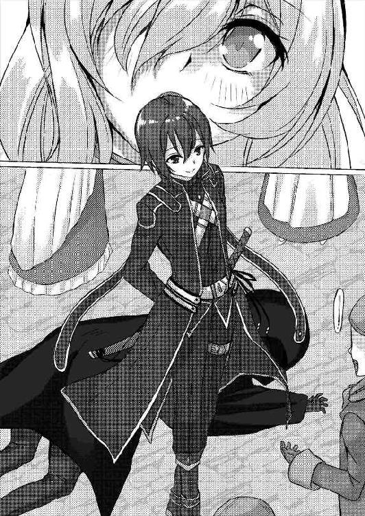

| 偽姫騎士 偽護衛騎士 | |
| 山口 哲平 | |
| pubfull (2017) | |
偽姫騎士 偽護衛騎士
山口 哲平
「ミカエル！ どこにおる！」
国王アンドルフ・フォン・アレクサンドルは、運動不足気味で丸まってしまったお腹に対して、自分でも驚くほど機敏に動いていた。王城といえども様々な有力貴族や関係者などが集い、自宅と呼ぶには人目を気にせねばならぬ場所で、王自らが声を張り上げて探し回る。それが、いかに軽率な行動であるかを理解しておりながらも、王は大事な人物を探していた。
「おお！ ロウチューよ！ ミカエルはどこにおる？」
国王は一人の執事を発見すると、太い声で問いかける。執事は付き合いが長く、執事と国王という関係でありながらどこか親しみを持った口調で返答する。
「はい。中庭の方で騎士団と稽古をしているようです」
中庭。あそこには休憩中の騎士団が憩いの場として利用する場所だ。倅にも困ったものだと愚痴を零しつつも、その息子の身も心配でならなかった。
政治的には、今後、王位継承を行う倅ではあるが、一人の親として、息子を溺愛している。王としてはこれ以上、倅の我がままを無視することは、将来的に国王として国民を導く立場となる者の教育に悪いという考えだ。
ここは一つ、王として息子に教育してやらねば。同時に、たっぷりと息子に親として愛情を注ごう。将来的には王となるが、その前に息子を産んですぐに亡くなった妻の大事な忘れ形見だ。
渡り廊下を歩き、中庭に向かえば我が半身とも言える息子と数時間ぶりに会える。王様という仕事の関係上、国王は自らを人間ではないという考えをもって政治に携わってきた。国民を守ることのできる真の強者でなければ、政治という全国民の命と未来に責任を持つ仕事などできない、という考えからである。だが、息子と触れ合うこの一時だけは、ただの一人の人間として接したい。親ばかと言われようが何と言われようが、構わない。息子との時間は国王が人間に戻る安らぎの時間だった。
「ミカエル！」
中庭が見えてくる。もうすぐ息子と対面できる。太い声は怒鳴り声を連想されがちだが、生来から怒った顔に怒った口調で、誰からも勘違いされるのだ。実際は、息子大好きの親ばかパパだと自分では思っているのに。
「ミカ......」
中庭が見えた時には、王は絶句するしかなかった。中庭には人、人、人の山。全員が、クロスアーマーを着込み、訓練用の木剣を片手に倒れている。しかも、倒れている者は全員王城を警備する近衛騎士団だ。騎士団の中でも実力の高いエリート中のエリートしか所属できないエリート集団がどうして。彼らを一人倒すことすら難しい最強の兵士と言っても過言ではない。侵入者か！？ すぐにそう思ってしまう王だが、それならば訓練用の木剣で応戦するのはおかしい。訓練にしては、倒れるまでするのはハード過ぎるし、何よりも警備中にこんな死屍累々になっては警備もくそもないではないか。
「いったい、どうしたというのだ......」
前代未聞の光景に王様は、そう呟くしかない。どれほどの化け物が彼ら騎士団を倒したのか。脳裏に狂戦士の姿が浮かぶ。同時に、王はその光景が愛する姿と重なってしまう。
「バカな。倅は、まだ六歳。大人を倒せるわけなかろう」
まるで自分に言い聞かせるように呟いた王は、すぐに目を覆いたくなった。
「おせェー！」
木剣による一撃を、華麗な跳躍で躱し、そのまま空中で回し蹴りによる反撃に転じて見せる。蹴られた男性騎士は、その一撃で倒れてしまい、小さな少年は綺麗なフォームで着地する。王の悪い予感は的中した。大人相手に軽々と勝ってしまった金髪の小さな少年は、間違いなく自分の愛する息子だった。
「おー、本日もミカエル王子の勝利ですかな」
ゆっくり隣に立ち、まるで誰にも聞かれまいと小さな声で執事は言った。
「まさか。毎日あのような行為を繰り返しておるのか？」
「知らなかったのですかな？ 王子は大人しくしているよりも、戦いの中の方が血が騒ぐと仰って、毎日騎士団の方々と手合わせしております」
「おお......」
それは決して感心して漏らした声ではなかった。気を失いそうになったところを、執事ロウチューは主をめまいで倒さないように支えてきた。
「昔から血気盛んだったが、そのようなことをしていたとは」
国王アンドルフは知らなかった。我が血を分けた息子があそこまで強く、そして騎士団の強者たちを難なく倒すほどに武の才能があることを。
「こんなところで何をしているのだ？」
「あン？ 陛下か。騎士団の方と手合わせしてたんでさァー」
とても、王子とは思えぬ山賊をも思わせる口調で、他人行儀に接してくる。まだ、彼は王の息子として世間に認知されていない。事実上の次期国王ではあるが、世間に公表しないことで『まだ次期国王』としての運命を背負っていないのである。そのことを良く理解しているのか、息子ミカエル・フォン・アレクサンドルは世間の目を気にして他人のフリをするのだ。
「やんちゃな子供だ。それで両親の仕事を継げるのか？」
「あァ？ 継ぎませんよ、陛下ァ」
周りの目を気にして他人を装う。国王は他人の家の子供と接するように、ミカエルは王城に来ている貴族の息子を装う。だが、国王は黙っていられなかった。------常に国王となる定めであることを言っていたではないか！ やんちゃな我がままボウズならまだ年相応だが、国王という責務を易々と捨ててしまう。だが、国王の血を引く者は、逃れられぬ運命も背負っていることを息子は知らない。だから、息子に間違った道を選ばさせないために叱り、叱る理由を教えねばならない。一人の父親、としてではなく、一国の王アンドルフ・フォン・アレクサンドルとして息子に教育せねばならなかった。
「ワシの部屋に来い」
アンドルフは自身の私室にまでミカエルを連れてきた。ここならば、息子と本音で話し合える。この王城内において唯一、人目を気にすることなく話を出来る空間。
「このバカモノが！」
「おっと」
国王は息子を叱るために平手打ちをするが------当たらない。
「このバカモノが！」
「おっと」
「このバカモノが！」
「ンで、何の話だァ？」
「うぐぐぐ......」
父の教育的指導は、年の離れた息子に完全に見切られていた。
「お前には、次期国王になる決まりがある！ 国王の長男は次の国王になるのが決まりなのだ。それを分かっておるのか？」
「ンなことは分かってる。が、オレは王様なんざァーやらねェ」
国王の言葉は闇夜の礫。何も変わらないのであれば、別の切り口から攻めてみるしかない。
「王にならないのであれば何になるつもりだ？」
「オレは暴れてェからな。騎士になる」
「そのような理由で王族を継がぬと申すか！」
「この間ァ下町で組織的強盗殺人事件があっただろォが。あーゆーのを防ぐのに、玉座に座って国を守るよりも、身体ァ動かして守る方が向いてンだよオレは」
六歳の息子が、この時点で明確な自分の目標を決定し、そのために必要な鍛錬を行っている。口は悪いが大人------しかも、エリート相手に------勝てる程の恐ろしいまでの実力はあり、間違いなく有言実行するであろう。父としてどれほど喜びたい言葉だろうか。しかし、その希望を奪うのは自分の役目だというのが、どれだけ皮肉なことか。
「残念だが、お前は騎士になれない。その血を持っている限り」
「あァ？ 王族だから王様以外になるなって言いてェのか？ だったらオレは出て行くだけだ」
本当に六歳だというのか。早すぎる反抗期な上に、六歳で自立しようというのか。王族の血を引いていなければ良かったのに。
「王族を捨てることはできない。捨てる時は、お前が死ぬ時なのだ......」
「......あァ？」
六歳の息子相手に何を言ってるのだろう、自分を責めたくなるアンドルフだ。だが、事実を知らねば、息子は何も納得しないだろう。王はまだ、早いと思っていた話を、息子に聞かせることにした。
「王族の血を持つ者は、常人から逸脱した力を持つ。お前にはおそらく一騎当千の力が備わっているのだろう」
「そいつがどうして死ぬことに繋がるんだァ？」
「危険なのだ」
そう。王の血は危険だ。六歳にして、選りすぐりの精鋭部隊と呼んでも違いない近衛騎士団を一人で倒してしまう鬼神の如き実力。この血が、いかに危険か、息子はまだ分かっていないようだ。
「その昔、初代国王は、神から力を授かったという。その力によって戦乱の世は終わりを迎えたという」
「昔話かよ。ンな眉唾な童話なんて信じられるかっつーの」
六歳が何を言うかと思えば、もう童話を卒業していたのか。そういえば子供向け童話の読み聞かせは、早い段階で聞かなくなった、と執事のロウチューが言っていたのを思い出す。
「そう。この話はただの童話。実際には初代国王と、敵国の王は兄弟。二国間の戦争は、たった二人の人間が十万という兵士を無双する異常な戦いだった」
具体的な数字を前にして、ミカエルは目を見開いていた。
「それも童話じゃねェのかよ......？」
「純然たる事実だ。今後、二度とそのような事態を起こさないために、初代国王は一つの取り決めを行った。王の血を継ぐ者同士が争ってはならない、他国に渡ったり、王の血を引き継ぐ者が街中に紛れ込まないようにする、と」
初代国王の血筋の人間は、皆が優秀な能力を持った貴族だったらしいのだが、初代国王と弟は、戦いにおいて負けを知らぬ強大な力を持っていたらしい。二人が戦場を歩けば、通った道には死しか残らないために、ベルセルクの血と呼ばれる。その二人の争いは、世界の終末がやってきたとすら表現されているほど、凄まじいモノだった。
「王の血を引く者同士が争い、多くの命が失われる前に王の血を断つ。特にお前は、初代国王の兄弟と同じ能力を持っている。なおさら、お前を王家から出て行かすわけにはいかぬ。二度と同じ過ちを繰り返してはならぬのだ」
王の血を持つ者は、その血の宿命から逃れられない。アンドルフ王もまた、その血により王になることを生まれながら決定された人物。
「......でも、だからと言って王位を継がないって手はあるよなァ？」
「お前は、ワシの息子だ。王位継承権第一位な以上、仕方あるまい」
「それは世間の問題だろォ？」
「それはそうだが」
王家を出て行くのは大問題ではあるが、王位を継ぐ、継がないで少なくとも死刑は関係ない。
「そォだなァー。王族は王城を出て行かなきゃァ問題ねェ。これでオレは死ななくて済むってわけだ。次に、親父の息子だと王位継承権は一位だってことだ。男である限り、王様を継ぐのは王様の息子だっつゥわけだ。だが、それを偽装しても、処刑にならねェ」
なにか。なにか嫌な予感がする現国王は、背中から汗が沸きだす。政治と議論という言葉と頭脳の戦場を潜り抜けてきたアンドルフには、直感的に嫌な流れというのが分かるのだ。現在、討論中の庶民と貴族の特権問題について、有力貴族たちが次々と離反しているピンチの前触れに似ている。これから倅がトンデモないことを言い出すことに。
「それから、王族に関する記述でこォも書かれてたよな？ 『王族血縁者は、国益に繋がるよう努力し、生涯を通じて国家に貢献する』ってなァ？ つゥコトは王様にならねェなら、国益に繋がる仕事をしてもいいってわけだァ？」
既にそのようなことまで頭に叩き込んでいるとは。武術だけではなく、勤勉であると驚かされる......が、なぜだか敗北の気配が漂い始めている。何か、何かとんでもないことを言われそうな予感がする。
「し、しかし、お前はわしの息子だ。それを世間に発表し、順当にいけばお前が次期国王なんだぞ」
その言葉に対し、ミカエルは笑った。
「王位継承できねェんだろ？ 女は世間的にさァ」
開いた口を、閉じることは出来なかった。
執事、ロウチュー・Ｇ・ヤンは十二年前を思い返しながら、廊下を歩いていた。あの当時の王は非常にやつれ果てていた。それでも、政治の場を一日も休むことがなかったのは、彼が王族の血によって、常人よりも強固な鋼の精神を持っていたが故にだろう。この十二年の間に、ロウチューもアンドルフ王も年をとった。ロウチューは仕える主人が変わり、アンドルフ王は、長い時間を掛けて、庶民と貴族の格差社会に革命をもたらすことに成功した。二人とも白い毛がほとんどになり、腰痛や、体力の衰え、記憶力の低下などの話が年々増している。
「お嬢様、そろそろ準備が出来ておいでですかな？」
大きな建物内と比べると、随分と控えめな木製の扉。飾りと言えば、扉の前に飾られた主の予定や現在の主の部屋の状況を知らせる札。札には休憩中と掛けられており、他には着替え中、就寝中、外出中など。部屋の主の綺麗な筆跡で出来ており、几帳面な性格であることをアピールしている。
「大丈夫ですわ。準備、出来ております」
主の愛らしい声が、扉から聞こえたのを確認した後、ロウチューは扉をゆっくり開ける。
「失礼します。おや、優雅に紅茶でブレイクタイムですかな？」
「はい。こういう時こそ、紅茶の香りで精神を落ち着かせているのです」
「それはそれは。良い心構えですなー」
主は、優雅に紅茶の香りを楽しみつつ啜る。そのティーカップを持つ細い指は気品に溢れた白い肌をしており、長くてふわりとした金髪とのコントラストは見る者の心を奪う。ドレスもふわりとした鮮やかなピンクだが、腕や胴体は流線美のラインが、ドレスの上からでもくっきりと分かるようになっている。細くくびれ、柔らかい身体のライン。そして、肌を見せることで男を誘惑するような衣装ではなく、肌を隠しつつも、却って男たちの想像を掻き立てる美しきファッション。そして、男を虜にすることを可能にする完璧なプロポーション。そんな美しき存在が、執事ロウチュー・Ｇ・ヤンの新しい主人だった。
「準備に時間が掛かると思ったので、早めにお嬢様の部屋に来たのですが、いらぬ世話だったようですなー」
「ええ。わたしは子供ではないのです。時間の管理も一人でできますわ」
主人は、ソーサーに乗ったティーカップを持ちながら、部屋の窓に座っている熊のぬいぐるみの頭をなでる。美しさを持ちながらも少女趣味を忘れない。そのギャップが主人の魅力をさらに引き立てていた。
「確かに、子供の頃と比べると大きく変わりましたなー」
「そうでしょうか。わたし、今も昔も変わりませんわ。頑固で我がまま。好き勝手やりたい放題のダメな王女です」
「昔は愛らしい幼女もどきだったのに、こんなに大きくなってしまわれて」
「......そういう意味ですか、このロリコンダクター」
めそめそ涙を滲ませながら思い出に浸る執事に対して、容赦のない悪口を浴びせてくる主人。ロリコンに指揮者（コンダクター）を足して、ロリコンダクター。年端のいかない少女と音楽をこよなく愛するロウチュー。だから、ロリコンダクターの異名------と言う名の悪口------を持つロウチュー。世間から白い目で睨まれても本人はやめないし、隠しもしない。主人も女性ならば嫌がるだろう。『女性』であるならば。
「ま、結局ミカエル様が偽幼女だったので、がっかりでしかありませんでしたなー。よっ、おかま王子」
「......てめェ、今、なんつった？」
主人の顔色と、綺麗で透き通るような女声は一気に変化する。大きくて全てを包み込むような瞳は、瞳に映る者全てから命を奪いそうな死神の目。声は、柔らかくて聞くものを癒す声から、チンピラのようにドスのかかった声に。恐ろしき主人の変貌に対して、執事は特になんとも思わない。
「ははは。ミカエル様はどんなに取り繕っても男。結局女になることは叶いませんでしたなー」
「まあ！ いやですわ。少々、感情が昂ぶってしまいましたわ。わたしとしたことがはしたない」
などと言って元の美しき貴族に戻った。知らぬ人が今の光景を見れば、いったいなんだったのだと放心することだろう。慣れているロウチューにとってはいつものことだ。
「ミカエル様。ベルセルクの血で本性が昂ぶってしまうのです。常に感情を抑制しなさい」
「くっ......。言われなくとも分かってるっつゥの。じゃねェ。分かっていますわ」
この美しき存在の正体こそ、ミカエル・フォン・アレクサンドルその人。少年時代に国王にならないために、ある日を境に女装して、完璧な女性になろうとしたのだ。
彼女......いや、彼は王にならず、かつ、王城から家出をせずに平和的に解決するために自らの意思で女性になろうとしたのだ。
まず、彼が始めたことは女性の研究だった。貴族や町娘たちを観察。話題の物や流行のファッション、女性の行動や好みを徹底的に調べ上げる。貴族の社交界もこそこそ侵入し、そこにいた年齢の近い貴族の娘や、その母親など、ありとあらゆる女性というものを調べ上げる。
もちろん、女性を知っているだけではダメだ。
そこで、彼は様々な文献を調べ上げ、ボイストレーニングや、より女性らしいボディラインとなるように、計算された食事や運動を行う。下手に男らしい行動をせず、心身ともに女性となるべく、徹底的に自分を女性と思い込んで節制する。そんな徹底した生活をし、女性の美意識を研究、とにかく女性になろうとした。
そして、ある程度の齢を過ぎた頃、お忍びで貴族の社交パーティーに参加。当時はまだ子供であったものの、貴族の家を継ぐ子供たちもまた、将来的な交流を含めてダンスの機会があったのだ。
見事、------相手は子供だが------男性と、一夜のダンスを踊り切ったのだ。ロウチューは、王子の徹底的な特訓をずっと見ていた。下町でお忍びで働いていた時も看板娘として人気があったくらいだ。確かに、ミカエルは誰もが女性だと見紛う容姿をしているし、自分を女性だと完璧に思い込めている。
そのせいなのか、男性の成分分泌が少ないのではというのがロウチューの見解である。
「王女は完璧で、私の言う女性の理想像を完璧にマスターされましたな。ですが、それ以上に王族の血というのは厄介なようで」
彼が女性らしくあるのは、ロウチューが協力したことにもあった。ロウチューの理想とする女性像に、ミカエルは完璧に答える。ロウチューは父王と本人を除き世界で唯一、ミカエルが男であると知っているからこそ、ずっと協力していたのだ。
「そうですわね。確かに、わたしの流れているベルセルクの血......。これがどれほど厄介なものか、年々実感してきています」
王族の血。子供の頃に危険だと言われた、その理由を今になってミカエルは分かってきたらしいのだ。彼が持っている力は、初代国王の兄弟と同じ力で、どうしても感情が昂ぶると隠している男としての本性が出てくるそうだ。捨てたはずなのに蘇る。難儀な物だ。
「と、言いましても、あなた様は子供時代と比べてますます立派な女性に近づいていった。子供の頃は、どれほど私が飛びかかりそうになったか」
「それを宣戦布告と捉えてましてよォ？」
まだ、女性の声だ。随所に凄みを聞かせているが。
「喧嘩は結構ですじゃ」
「それよりもバルコニーに向かいませんこと？」
思い出話に浸るのもいいが、と後ろに付け加えながら言った。時間に余裕はあるが、ずっと話し込むわけにはいかない。
「おおっ、そうですな。この年齢になるとどうにも思い出話ばかりに浸りがちで。ささ、早速陛下のところに参られましょう」
中身を飲み干した紅茶のティーセットを一旦、部屋の外に置いてあるトレーに置いておく主。部屋の食器類は、こうしておくことで、後で使用人が食器を持って行ってくれるのだ。そんなことくらい自分でするとミカエルは言っていたのだが、使用人には王城内にある数多の食器を洗うから、一人分二人分増えるのも一緒だとロウチューが言うと渋々諦めた。そういう気遣いも女性らしい。
「......王子も乙女らしくなりましたな」
「王女ですから」
王女の部分を強調する。
「ほっほっほっ。そうですな。あれほどの悪ガキが、こんなに乙女チックになるとは。人生何があるか分かりませんな」
悪ガキと乙女チックは、なかなかイコールでは繋がらないものだが、それを見事イコールで繋いだミカエルを、ロウチューはある意味尊敬しているのだ。これなら、世界中の人間を見事に欺ける。
「まあ！ 褒めてもなにもでませんわ」
そのことに喜ぶのもまた、劇的に変わったと言える。劇的と表現するに足りない。何かにアブタクトされて改造されたくらいでなければ昔の不良少年との変わりようを表現できまい。まあ、自分で改造したのだが。
ロウチューとミカエルは王の私室へと向かう。ミカエルのお供をし、廊下を歩けばロウチューの昔話は花が咲く。例えば、ロウチューとアンドルフは幼なじみで、王族と庶民の間柄を超えて、親友であっただとか。しかし、思い出話という美談に春画の話に突入してしまうのは、ロウチューが自覚している悪い癖。それを分かっていながらも、誇らしく語る。
「------でして、そこが私の芸術のルーツでしてな」
「ええ。無駄な思春期のガキの話をありがとう」
「仕えるべき主人に、父の偉大なエピソードを聞かせるのは執事である私の務め。我々の少年時代をさらに語りますぞー！」
そこから、陛下が、庶民と貴族の格差問題根絶に繋がったという話を。春画が格差問題根絶の解決などと表現すれば、嫌な顔しかしないミカエルだ。しばらく話を続けていれば、目的の場所に着く。冷たく堅牢な石造りの城の中で、大きくてずっしりとした鉄扉の前にミカエルは立つ。
「陛下。ミカエル、参りました」
ゆっくりと、重量感ある金属の光沢ある扉が開き、国王アンドルフがミカエルの前に立つ。ミカエルの部屋とは違い、王の威厳をアピールしつつ、特別な部屋であることを主張しているのだ。それだけではなく、一国の王として威厳のある服とマントに身を包んだ父。最近、またお腹が出てきたのはミカエルの心配な点である。
「陛下。お供致します」
ミカエルはゆっくりとドレスの裾を摘まんで、頭を下げる。相手は父であるが、その前に国王でもある。偉大な相手には敬った態度を忘れてはならない。
「陛下。私は、この辺りで失礼します」
一歩下がって、執事ロウチューも頭を下げた。
「ウム」
「お父様。参りましょう。今日は記念すべき日です」
二人揃って廊下を歩く姿は、傍から見れば父と娘の親子に見えることだろう。本当は息子であるが、ミカエルはわずかな一時を楽しんでいた。同じ、王城内にいても父王は執務に追われて親子一緒に居られる時など中々ないのだ。
「......どうなされました？ お父様」
「......昔は親父と言っていた倅が、お父様......か」
「ふふ。そんな日もありましたわね」
「それに、悪ガキだと思っていた倅のドレス姿をみるとはな」
「まあ。わたしには似合わないと仰いますの？」
今さら父は何を言うのだろう。ミカエルはすでに、誰がどう見てもプリンセス。容姿も仕草も性格も完全に王女に相応しいものだと自画自賛している。
「......それはさておき、何度も言ったが、問題は残っている」
「重々承知しておりますわ。お父様」
「まず、結婚だ。結婚相手は王族。王族の血を絶やさないためだが、これに関しては、まあ問題なかろう」
「はい」
「そして、結婚するときは男であるとバラせ。でないと女性とは結婚できん。もちろんその時は王位継承権が戻ったり世間的な批判など------」
「では、素敵な殿下とは結婚できるのですね！」
一瞬、父王の時が止まったように固まった。今の発言のどこが悪かったのか、思い返すミカエルだが、思い当たらない。
「えっ？ ちょ、ちょっと待つのだ！ え？ ど、どこの馬の骨と！？ い、いや、それ以前にだな！」
「お父様。まだ、そのような素敵な殿下とお会いしてませんわ」
「そうではなくて、男と結婚すると言うのか！？」
「いいえ。お父様のように勇ましい方と婚約するのです」
「そうか......ではない！」
一瞬、胸を撫で下せば、またもや慌てる。今日の父はどうしたのだろうと首を傾げる。
「無理だ！ 絶対にバレる！ どうして、いつの間にそんな風になった！？」
「いつか、わたしにも白馬に乗った王子様が迎えに来てくれるのでしょうか。素敵なキスで二人の間に子供ができるのです」
「いやいや、王子は自分だろうに！」
乙女のように恋い焦がれた王子の姿。自分を徹底的に女性だと思い続けた結果、いつの間にか、本などの創作作品に描かれた王子がきっと迎えに来るとすら考えるようになった。男という自覚を捨てて女だと思い込んで、信じて疑わないようにした結果だ。
「おお、神よ。王族という責務から、息子を追い詰めてしまいました。ワシの下を離れて、王族の血縁に養子に出せば王位継承権から遠ざかることが出来たのにも関わらず、息子が娘になってしまいました。どうかワシに天罰を」
「何をおっしゃっているのです。わたしは、愛するお父様のお傍を離れたくないから養子にはならないのです」
「うおおぉぉぉ......」
本心を言えば、父親はうれし涙を流して呻き声を挙げる。どうにも、その声が絶対的絶望から漏らしてしまった低く野太い声が気になるが。
「そ、それからだな......」
王は涙を滲ませながら、話を元に戻す。精神的ダメージを負っているようであるが、そんなに娘を嫁に出したくないのか。
「決して男であるとバレぬこと」
「はい。重々承知しておりますわ」
「特に、ベルセルクの血は気を付けるのだ。初代国王と同じ力。感情が昂ぶれば、女性として取り繕うことはできるまい」
「それは......懸念点ですわ、お父様」
初代国王の兄弟と同じ力。ベルセルクの血。ミカエルの感情が昂ぶれば、狂戦士としての本性が呼び出され、捨てたハズの男性が戻ってくるために女性を装うことが難しくなるのだ。子供の頃は、この血が持つ力がどれほどのものか自覚していなかったが、大人になるに連れて子供の頃に危険だと言われた言葉の意味を理解してきた。この力を持つ者同士が争えば、無事では済まないほどの力を感じる。
「......まあ、それはよい。隠しきれなければ、その時はその時だ。それから、これからだが」
「騎士について、ですわね。安心してくださいませ。全ては、騎士になるため。そンために女になったんだからなァ」
言っている傍から、本性が滲み出てしまっており、ミカエルは慌てて口元を押さえて上品に笑う。気を付けてはいたが、騎士団に入団することが嬉しさのあまり、つい本性が表に出てしまった。ミカエルの正体を知るアンドルフの前であればいいのだが、それを知らぬ者たちからすれば、驚くことは必至だろう。決意固く、ミカエルは努めて感情を押し殺すように自分に言い聞かせる。
ミカエルが王と共にバルコニーに出れば、近衛騎士団の面々が護衛として立っている。昔は、近衛騎士団の面々と訓練していたが、世間にミカエル『王女』の存在を公表してから一度も手合わせしていない。後は剣の講師に貴族の嗜みの剣を教えて貰った程度でしか相手はおらず、近衛騎士団との訓練の日々に思いを馳せるミカエルだった。
「皆さま、お仕事ご苦労様ですわ」
ドレスの裾を摘まんで頭を下げれば、妙にカクカクした敬礼が返ってくる。昔は、近衛騎士団から「貴族の中に最強の鬼神がいる」と噂されたほどだ。昔は恐れられつつも、いつも実戦をも思わせる激しい戦いを繰り広げていた。近衛騎士団も、子供相手ではなく、熟練の剣士を相手取ると意気込んで全力で勝負する。そんな死闘を繰り広げたライバルとも言える組織は、今ではミカエルの顔を見るだけで顔を紅潮させ、どぎまぎしている始末。これがかつて、死闘を繰り広げ、ミカエルを鬼神と呼んで同時に好敵手とまで呼んだ騎士団のエリートだと言うのか。これで、いったい何を守ることができると言えようか。
......まあ、鬼神とまで言われていた当時と比べたら、今のミカエルは変わりすぎなのもまた事実なのだが。
「ちゃんと演説できるのか？」
「わたしが緊張しているとでも？ このわたしが緊張するような性格であれば、そもそもこんな格好はしていませんわ」
「......確認しただけだ」
そっぽを向く父だが、その実、心配してくれているのをミカエルは知っている。我がままを言えば、大抵は望み通り叶えてくれる。ミカエルのやりたいことに対しても、父は心の奥底ではきっと応援しているのだ。こんな女装をして、王位継承権を捨てるなどと、普通に考えればバカげていると世間に言われる行為も認めて、応援してくれる。だから、ミカエルは本心で父のことを尊敬している。王に言った敬愛しているという旨の言葉は間違いはない。きっと周りからは、重度のファザコンと言われる羽目になるのは分かっているつもりだが、父親の子供である事実を捨てるつもりはない。親戚の子供となるなんて、父を悲しませるに決まっている。だから、女装して男を捨て去る選択肢を自らの意思で選んだのだ。
そろそろ時間だ。父アンドルフが、王アンドルフとして、王都の住人たちの目に見える場所に立つ。
「我が親愛なる王都の諸君！ 本日は、王女ミカエル・フォン・アレクサンドルが騎士団入団に関する発表を行う場に足を運んでいただき、真に感謝である！ 王女であり、我が娘でもあるミカエルは、十六の齢に、その存在を発表して以来、初めて公的に業務に携わる！」
アンドルフが、横に逸れて場所を空ける。次に、ミカエルが民衆たちの目に入る場所に立った。その瞬間、割れんばかりの歓声に包まれる。ミカエルにとって自画自賛だが、絶世の美女が王族というのは、世間に大きな注目に包まれるのは必然というもの。自分たちの生活の質に今すぐは影響のない発表だが、王女の美しき姿を一目見ようと王都の広場に集まっているに違いない。
「我が親愛なる王都の皆さま！ わたしはミカエル・フォン・アレクサンドル。我が父、アンドルフ・フォン・アレクサンドルの一人娘ですわ！ 本日はお忙しい中、わたしのためにお越しいただきありがとうございます」
ミカエルの言葉に再び歓声が沸く。髭を生やしたもじゃもじゃのおじさんはミカエルを見ようとしているが、身長が低くて必死にジャンプしているし、町娘とその母親らしき人物は手を振っているし、黒いローブを着た男は......よく分からない。
「本日の発表は、皆さまの生活には一切、影響いたしません......いえ、正確には礎となりうる内容です」
王女は政治には直接携われない。だから、何かを変えるということは基本的には出来ない。だからこそ、力強く「やります！」などと言えないのだ。
「皆さまご存知の通り、王女には王位継承権がありません。だからわたしは、アンドルフ王の娘であるにも関わらず、王位を継ぐことはできません。ですが、そのことに疑問を持った者はいませんでしょうか？ それと同じく、一般社会でも男尊女卑であることに疑問を持つ者はいませんでしょうか？ 現国王陛下の政治では、貴族と庶民の扱いの問題が主で、男女云々の話よりも貴族社会の話しかありませんでした」
王女の演説に皆が耳を傾けているようだ。一部の......黒いローブを着た男は話など聞いていないようだが。
「わたしは王家と皆さまの生活。これらは限りなく同じように思います。王家において、男性は王となり、女性は世継ぎを産むか、社会に貢献できるように努めるだけで、政治に関われない。皆さまでこの話を置き換えると、男性は外に出て働き、女性は家で家事をするのが王都において当たり前の家庭。偉大な我が父は血筋や貴族であるか否かだけで出世したり、特権を与えられたりする世の中を解決しようと尽力しましたわ。ならば、わたしは女性の観点から、女性も男性のように働ける世の中にしたいと考えております。ですが------」
話を聞いていない------黒フードの男は袋をごそごそと漁っている。
「わたしは政治には関われません。それでも、女性でも男性に負けることはないこと、それを身をもって証明いたしますわ。国家成立以来初めての女性騎士団となります。その結果、男性でも女性でも活躍できる社会へと進化させることができればと思っていますわ。一般の騎士団の方々と肩を並べて、精一杯国家に貢献させていただきます」
ミカエルによる演説の中、ミカエルの話を無視していた黒フードの男は、ごそごそと袋から武器を取り出す。それは強力な飛び道具を発射する武器、クロスボウ。
矢を発射するその武器は、誰でも扱える武器で、威力が高く狙撃に向いている。その代わりに連射能力には劣るが、強力な武器に違いない。
この演説の中、真っ先にその存在に気付いたのはミカエルだけのようだ。------なら、その愚かな行為を、実力をアピールする材料に変換させてもらおう。この場をミカエルの実力を知らしめるステージに変える腹黒い算段。
「それでは、みなさま。わたしの騎士としての活躍------」
セットされた矢が発射され、アンドルフ国王へと真っ直ぐ飛来する。ミカエルは父の前に立つ。
「ご期待くださいませ！」
バシッ！ 飛来した矢が擦れて手の中で熱くなる。向けられた矢がどこに飛んでくるか分かっていれば、ミカエルにとって矢を掴む程度は朝飯前だ。国王アンドルフは、突然の狙撃に尻もちを付いているが、ミカエルはすぐさま行動を開始する。相手は本気で暗殺を企んだ悪人だ。
「騎士団の皆さま！ そこにいる黒フードの男を確保してくださいまし！ 優先事項は国民の安全！ 国民の皆様はどうか、混乱なさらず、騎士団の指示に従って行動してください！」
だが、聴衆にはミカエルの言葉は耳に入らないようだ。確かに、矢をキャッチしたまでは良かったが、だからと言ってギャラリーの人々の安全を確保したわけではない。命の恐怖を目の前にすれば、誰だって死にたくないとパニックに陥る。騎士団は、我先に逃げようとする民衆を掻き分けて進むが、これが中々前に進まない。そうこうしている間に黒フードの男に逃げられてしまうではないか。
「......チッ！」
舌打ちし、焦りからベルセルクの血の制御ができずに本性をさらけ出す。ここから、一気に飛び降りて犯人を確保する。ミカエルにはそれができる自信があった。------が、そこまで本気を出してしまえばベルセルクの血が滾ってしまうかもしれない。ミカエル自身、まだベルセルクの血で本性が現れる基準というものを『興奮などで感情を抑えられなくなったら』としか分かっていない。かと思えばあっさり出てきたり、基準点がかなり曖昧だったりする。
本性を国民に晒す危険を背負うか。犯人を逃げる危険を背負うか。
「------------！」
選択に迷い、飛び込む寸前のところで躊躇するミカエルの目に何かが映った。一人の騎士が逃げる民衆の上空を舞うように飛び、美しく舞う。その姿にミカエルは目が奪われ、飛び降りようとしていたことすら忘却させる。
黒いコートとマントを併せ持つクロスアーマーに、黒いズボン。それに遠方から見ても一目瞭然のサラサラして艶のある黒いセミショートの髪。全体的に黒で統一された格好だが、不思議と暗いイメージを与えないのは笑顔の似合う美青年だからか。余裕たっぷりに群衆を飛び越える甘いマスク。その一瞬の煌きをミカエルは一瞬たりとも見逃さない......いや、釘付けとなり見逃せないのだ。
「はぁッ！」
短く、一呼吸の気合を入れた美青年の声が、矢となりミカエルの鼓膜を揺する。その一瞬だけ、世界はミカエルとその少年だけになった気がした。
青年の一撃......彼の持っていた鞘による一撃が、犯人の黒フードの脳天を叩き、気絶させる。
「殺人未遂と国家反逆の罪で逮捕する！」
男性にしては高めの透き通る声で、ハッとミカエルは我に返った。どうやら青年は騎士団の一人らしく、見事な逮捕劇に観衆は割れんばかりの拍手が起こる。
「よっ！ さすが下町の希望！」
「きゃー！ アンドレ！ 結婚して！」
「すげーぞ！ 今度は、近衛親衛隊に昇格間違いなしだな！」
下町出身の平民らしき青年も、貴族の娘らしき者も、おじさんもおばさんも。その一人の青年に拍手とエールを送り、青年はそれに答えるように笑顔で手を振る。そうするだけで------特に女性が------大きな声で、彼を褒めたたえるのだった。

「すまぬ、ミカエル。さすがは我が子」
「アンドレ......下町の希望......」
「ミカエル......？ ミカエル、どうしたのだ？」
「見つけた......王子様......」
ミカエルは、ただ、民衆の中心にいるその青年を見ていた。それ以外は、見えない。
「なんだ、その顔は！ まるで恋する乙女ではないか！ ミカエル！ 返事をせんか！ ミカエル！ ミカエルゥ------------！！」
何やら大きな声が聞こえたような気がしたが、気にならなかった。
後日、街に出回ったのは、ミカエルの演説やミカエルの活躍よりも、世間は下町の希望、アンドレことアンドレーヴェナ・ドゥーロワの話題で持ちきりだった。確かに、姫騎士ミカエルのことも触れられてはいるが、号外には英雄扱いのアンドレでほとんど占められており、隅っこにミカエルが姫騎士となること、犯人の供述が掲載されている程度だ。
特に、下町で発刊されているものはアンドレに関することしか記載されていない。
ミカエルは自分に関する記事や世間的注目などどうでも良くなった。あの大活躍をした騎士の名前と、掲載されている美しきアンドレの絵を見られるだけで、ミカエルの心は満たされていた。一人、自室で籠ってアンドレの犯人逮捕劇の華麗な舞を思い返し、様々な脚色を加えながら、ボーッとするのがミカエルの最近の日課だ。
「ミカエル様、勝手に失礼しますぞ」
「なッ！ ロウチュー！ ノックもしないでどういうつもりですの！？」
「あなた様が返事をなさらないので。時間も迫っておりますのでここは仕方がなく」
「わたしはアンドレ様に思いを馳せているのです！ 察しなさい！」
「主の理不尽な要求には答えられませぬ」
時を忘れてしまうほど、自分の世界に没頭していたのかと、一旦冷静になって我に返る。ベルセルクの血で本性は出ていないので、まだ冷静な方だろう。たぶん。
「ミカエル様。失礼ながら、あの者とミカエル様が結ばれるのは難しいと存じます」
「アンドレ様とわたしは身分が違う。そのことは分かっているのですが......」
「ミカエル様。それ以前の問題ですじゃ。男同士は結婚できません」
「身分を超えた愛......様々な文学で拝見しましたが、わたし自身が体験することになろうとは」
「身分よりも先に性別を超えなければ無理ですぞ」
「ですが、気に入りませんわねェ！ 親父が功績を表彰するっつってんのに断りやがってェ！ そン時に近づく予定だったのによォ！」
「ミカエル様、本性ダダ漏れですぞ。別に騎士団に入ればまた会えるではありませんか。あと性別」
「けっ！ こいつはオレの男だァ！ 必ず手に入れてやる！」
「陛下に今の言葉を聞かせてみなさい。きっと泡吹いて倒れることでしょうな」
下町の希望と評されるアンドレは、下町出身の平民騎士だという。下町出身でありながらも、その高い身体能力と圧倒的剣術により、若いながらもどんどん出世していった騎士団員。検挙率も毎年一位で、騎士団主席隊員の称号を持っている。
国王アンドルフによって貴族による特権を取り払われ、誰でも平等な地位を与えられるようになった世の中。平民でありながらも、出世の機会を与えられ、実力相応の地位を得たアンドレ。だから、下町の人々だって何かを為すことができるという希望。
故に、下町の希望。
「そして奴はオレと結婚。そんで下町出身のサクセスストーリーはプリンセスと結婚ってわけさァ！」
「はて？ プリンセスとは、いったい誰のことですかな？」
記憶が曖昧になったおじいちゃんを装うロウチュー。嫌味を込めてくる執事にミカエルは文句の一つでも言いたいところだが、同時に「我を見失うな」とも言われているのだ。......ミカエルは少々気に入らないが冷静を取り繕う。
「......少々、妄想が過ぎましたわ」
「妄想しすぎです。性的興奮し過ぎて、本性が漏れてましたぞ」
「乙女を前に言葉を慎みなさい！」
「男の癖に何を言っているのかさっぱりですぞ」
ロウチューをキッと睨み付けると、彼はそっぽを向いて口笛を吹き始めた。これが主人に仕える執事の態度でいいのだろうか。彼もまた下町出身の平民であるが、アンドレのことはあまり知らないという。興味のあることは、音楽ならまだしも、春画だとか幼女だとか危ないコトを口走るお年寄りで、年中ハッスル状態という面倒臭くて、何の役に立つのか分からないジジィ、それがロウチューの全てだ。
ちゃんと良く考えれば、国王と、その息子に付いている執事など大出世に違いないのにも関わらずアンドレのように持て囃されるコトがない。ロリコンダクターというあまりにもあんまりな二つ名が原因だろう。こんなのを美談にできる人がいれば是非とも出会いたいミカエルだ。
それでも国王にして父であるアンドルフの親友であり、ミカエルの秘密を知る唯一の人間でもあり、よき理解者であるから今日まで雇っている。それがなければとっくに右手が顔に食い込んでいる。
「それよりも、ミカエル様。騎士団に向かわねば、約束の時間に間に合わなくなりますぞ」
「......けっ！ 騎士団にいる間、変態ジジィが傍にいなくて助かるぜェ」
ちょっとしたイライラからベルセルクの血が騒ぐ。いや、自分が思っている以上にイライラしているのかもしれない。
「私も遠慮なく幼女を愛でに行けますぞ！」
「働けェ！ ボケがァ！」
右手を食い込ませる代わりに、綿の詰まったふかふかのぬいぐるみを食い込ませておいた。
ミカエルとロウチューは、城の警備をしている近衛騎士団を護衛に付けて、騎士団の城に向かう。騎士団の城と王城、この二つの城の距離はそれほどなく、国家の象徴たる王城が反逆者によって攻め落とされないように、それほど遠くない場所にそびえ立っている。王都内は、下の路を通る方法と、階段を上って橋桁に支えられた石橋を通る、通称天空高架橋の二つの方法がある。天空高架橋で王都の各地に行くことができるし、ゆっくりと王都内を歩くのもよい。
「わたしに護衛など必要ございませんのに」
「いえいえ。そういうわけにはいきませんぞ」
「この間の事件で警戒なさるのは結構ですが、騎士となる者が騎士に守られていては仕方がないのではなくて？」
「ミカエル様。あの暗殺者はこの間お話しした通り......」
「革命組織の一人だということは聞いております。それも革命組織と偽って略奪を行う窃盗集団ですわ！」
革命組織と名乗っておきながら実際にやっていることは金品強奪。義賊を謳っておきながら、やっていることは無差別な殺人や強盗行為を行う卑劣な組織。
「あの後、革命組織はあろうことか、国王様に金品を要求する脅迫状を送り付けてきたのですじゃ。あの組織の連中は手段を選びませんぞ」
「それは分かりましたが。......そうですわ！ いいことを思いつきましたわ！」
「何がですかな？」
「もちろん！ アンドレ様に護衛をしてもらうのです！ そして、これをきっかけに二人は身分違いの交際を始め、周囲の反対を押し切り、二人で困難を突破するのです！ やがては二人は結ばれ、将来的には子供は三人欲しいですわ！」
「女性はそんなにがつがつしないものですミカエル様」
現実的な一言を言われてしまい、空想の世界から現実世界に強制帰還させられる。眼鏡の奥で、年齢によるせいか曇った目が訴えかけてきている。「バカなコトを言うな」と。
しばらく歩けば、騎士団の城に到着し、出入り口を通れば門番が敬礼する。
目の前に立ちふさがる巨大な門は、いかなる生き物を通そうとせず。そして、空を見上げれば、石でできた堅牢な砦を思わせる建物。この城と城壁があるからこそ、城下町で暮らす国民たちは安全を約束され、騎士団は軍隊でもあり治安維持組織として王都を見守っている。
王都に住まう子供たちは、一度は親に「騎士団が常に見ているぞ」と言われるほどだ。
「それでは、私は幼女を愛でに行きます」
「......どうぞ、好きになさってくださいまし」
口を開けば、そればかりのダメ執事。この執事は親から「騎士団が常に見ているぞ」などと言われたことはないのか。だが......冷静に考えれば子供大好きのおじいちゃんとも捉えられる。年寄りというのは、子供が好きなものだ。下手なことはしなければ、問題は何も起きまい。......仕事をサボってる点を除けば。特に、暗殺沙汰になっている時にマイペースなのは如何なものか。
そんなことを言えば、暗殺騒動になってる中、騎士団に入団しようとしているミカエルも棚に上げられそうだが、誰にも負けない姫騎士で通すのだ。世間的イメージも顧みれば、ただの略奪行為を行う組織に屈する王女ではないことをアピールするために、ここは騎士団入団を先送りするべきではない。
門番をしている騎士団の男が敬礼をする。
「ミカエル様は騎士団のリゲル隊に所属となります！ 騎士団のリゲルの部屋までご足労お願いします！」
「ええ。分かりましたわ」
エスコートせずに伝言だけで済ませる辺りミカエルを歓迎していないのだろうか。いや、ミカエルを特別扱いしないとも捉えられる。ミカエルは一度、騎士団の団長と話をしているが、騎士団に所属するというコト以外、具体的には話し合ってはいない。ミカエル自身、特別扱いはしないでくれと言っていたのだが、どこまでその要求が届いているのだろうか。門番とのやり取りを考えれば、ある程度要求が通らない要求が通っているようだ。
階段を上り、三階にあるリゲルの執務室にノックをして、返事を確認してから入る。扉を開くと様々なインテリアで占められた一室に、大きな仕事用のデスク。ビンテージ品の机らしき年季のかかった机が、古めかしい印象よりも年季によって味が出ている印象を受ける。だが、その机を使っている男は年季を感じさせるが、単に古ぼけた印象しか受けない。とろんとした目は疲れ果てた四十代。特徴といえば、死んで腐り果てた魚のような目だけが強烈な印象だ。人生に絶望だけしか感じていないという不幸オーラを感じる。
「ミカエル王女。ようこそいらっしゃいました。責任を押し付けられたリゲルです」
少し、愚痴を混ぜながら、すぐに書類に目を移すリゲルという男。執務室を持つということは隊長なのだが、態度と口が少々悪い気がする。ミカエルは気にせず、ドレスの裾を摘まんで、一礼。
「リゲル隊長、今日からお世話となります。ミカエル・フォン・アレクサンドルですわ。よろしくお願いします」
「あー、ね。今日はまだいいや。それよりもさー」
王族に対してもうため口。度胸があるように見えたが、どちらかというと人生に疲れて何もかも投げやりにしているようだ。
「まーた、ウチが責任押し付けられてねー。やだよねー、嫌な役目は常にウチだから。騎士団の伝統、女性は入団してはいけない決まりがあるのに無理やり破っちゃったからねー王女様。みーんな責任取りたくないって、ウチに押し付けてくるんだから嫌になっちゃうナー」
「............」
「王女様、あんなに力説してたけどね。ウチの騎士団は変わらないよ？ だって、ウチらは伝統と規律を守る騎士団だからねー。今後も変わらないと思うんだけど？ 宗教的問題や世間的な問題を加味したらねー」
随分と無責任そうな口調に愚痴を混ぜてる割には、物怖じせずにぐいぐいと言ってくる。実のところ、騎士団に女性が入団したわけではないので、何も破ってはいないわけだが、口答えをするつもりはない。
「......勉強になりますわ」
「つーことで、面倒にならないように護衛を付けることにしたんだけどさ。ちょっっっと、遅れてんだよねー。ほんのちょっっっ〜〜〜〜ぴりね」
書類を置いて、手と手の間隔を限界まで広げ、限界まで息を吐きだしているが、これのどこがちょっぴりなのだろうか。
「遅れてきているのに優秀ですの？」
「まーね。ホント、優秀な奴でね。ウチのお気に入りなわけよ、これが。まあ、ね？ 損な役割を任されるなら、一人くらい仕事ができるのが居たほうがいいしね？ たぶん、王女様も気に入るんじゃないかなーって」
と、しばらくすると、扉の外で女性たちが騒ぐ声が聞こえてくると、リゲルが慌てて立ち上がり、ミカエルを一人置いて、部屋の外に出て行ってしまう。......死んだ魚のような目に一瞬だけ光が灯ったように見えたのは気のせいだろうか？
「あーね。君たち、貴族のご息女だからってね。ファンクラブ作って、勝手に騎士団の建物に入るのはよろしくないんじゃないかなって思ったり思わなかったり？ まあ、ウチは立ち入り禁止区画以外は来るもの拒まずだからね？ あんまり怒るなんて怖いことできないしね？ いや、ホント」
随分と自信なさげで不安げな声で、ペラペラよく喋る。いったい何が外にいるのか、ミカエルは気になり、部屋から出て行けば女性が集まっているではないか。
「まあ！ ミカエル様！ お久しぶりです！」
その中の一人が、慎ましくお辞儀をする。たしか、社交界かその辺りで世間話をした貴族令嬢だったハズだ。確か、彼女は貴族としては管理していた土地の面積は広くはないが、輸出入の商売で国を支えている貴族のところの娘だ。
おかげで現在こそ特権を取り払われて、管理する土地がなくなったにも関わらず収益に関しては巨額の富が動き、王国で一、二位を争うほどの金持ちだ。
それがどうして。ミカエルが尋ねる。
「これはいったい、何の集まりですの？ ここにいったい、なんの用があって」
「もちろん！ これはファンクラブです！」
この誰にも奪わせやしないという殺気にも似た感覚。ファンクラブというより、下町の特売日に集まる主婦の集まりに似ている。では、いったい何を取り合いしているのだろう。
「お嬢様方、そろそろいいかな？」
「「「はいっっっ！！」」」
皆揃って、真ん中にいるらしき人物の声に合わせて、両端に綺麗に並んでいくファンクラブの女性たち。その青年の声は......ミカエルの忘れられない声。
「ありがとう。今日もこんなに貰ってしまって。大事にさせてもらうよ」
甘いルックスに笑顔。女性たちの多くのプレゼントを両手いっぱいに抱えた美青年は笑顔を振りまく。
「きゃー！ アンドレ様ー！ こっち向いて！」
そう言われれば律儀にそちらに向いて笑顔を見せ。
「アンドレ様ー！ 今度、一緒にデートでも！」
と、言われれば、
「時間が合えば、ぜひ」
と、返して、一層歓声が大きくなる。
「リゲル隊長。もしや、わたしの護衛というのは......」
「んー。アンドレーヴェナ・ドゥーロワ。ウチで一番優秀な奴だから、王女様を護衛するのに適任でしょ？」
ぽりぽりと頭を掻きながら、ファンクラブの女性に困っているのか、それとも、もうどうでもいいから適当に王女の相手をしているのか。良く分からない表情のリゲル。
「遅れて申し訳ありませんでした、リゲル隊長」
「ま、ファンクラブの女の子たちが邪魔されての遅刻だから別にいいんだけどさー。ついでにウチにも一人くらい余った女の子分けてくれたら嬉しいなって」
女性を物扱いするリゲル。さっき表情が変わったのは女の子と話すためか。アンドレはミカエルの前に膝を地面についた。
「レディー。遅れてしまって申し訳ありません。アンドレーヴェナ・ドゥーロワ、皆からはアンドレと呼ばれています」
手を取られる。混乱の中にあるミカエルの手の甲にキスされた。
「え、ええ？ えぁ......？」
ミカエルには思ってもみなかったことだった。当然だ。何も知らされてなかったのだから。こんな形で理想が叶うなど、思ってもみなかったことだった。全身の血流が忙しなく循環し、心臓の鼓動が大きな音を立てながら動いている。まるで時が止まってしまったかのようで、何も考えられなくなる。この現象を......ミカエルは知っている。
「わ、わたしは、ミカエル。ミカエル・フォン・アレクサンドル、ですわ！」
舌が異様にもつれ、胸の高鳴りが止まらない。明日から一緒に仕事。護衛係だから毎日、一瞬の時も離れないと想像すれば、その想像はどんどん飛躍していく。止まらない。心が止められない。
「よよよろしくお願いしますわ、アンドレ様！ 既にご存知かと思いますが、オレは現国王、アンドルフ・フォン・アレクサンドルの一人娘ですわ」
「？ 今、一人称がオレって？」
「いや、そんなこと言ってねェ......ですわ！」
ベルセルクの血が騒ぐ。この疼きは相手を打ち負かそうと自分の限界を超えた身体能力を発揮しようとする。敵を倒さんとするベルセルクの血が全身に流れ、指先にまで血を渡らすために心臓は力強い鼓動を刻み、世界中の誰が相手になろうが殲滅する狂人へとミカエルを変えていく。
「くくく......！」
「レディー。変わった笑い声ですね」
「......ハッ！」
アンドレの言葉で我に返る。今、もしやベルセルクの血に従って本性が出てしまったのではないのか。血の流れの残滓は明らかに、戦いの中で感情が昂ぶった時と同じだ。
「ち、違いますわ！ そそその、オレじゃなくて、わたしはアンドレ様と出会えたことでつい感情が昂ぶってしまって、そう、戦いに興奮してるんじゃなくて性的に興奮、じゃねェ！ えっとえっと、」
周りがひそひそと耳打ちして内緒話を始めている。まずい、男であることがバレたか！
それどころか、あからさまな失言をして王女の品位を下げてしまった。何にせよ状況は最悪である。
慌てて弁解しようと頭を必死に回すが、ベルセルクの血による戦闘本能が邪魔をする。自分では一切コントロールのできない厄介な能力。この能力があるから、やりたいことがあったというのに、この能力のせいで好きなことができない。
ミカエルの正体がバレれば、騎士として活躍したいという夢は、儚く散って行く。
「ゆっくり、深呼吸をしてください」
さあ、ほらと、促されてゆっくり深呼吸する。揺れる水面がベルセルクの血による興奮が収まり、徐々に戦闘本能で昂ぶってしまった感情が静まっていく。
「お、落ち着きましたわ」
「よかった。ミカエル王女にも女性らしい一面があったようだ」
「へ？」
「ふふ。そんなに慌てふためいて、何を隠したかったの？」
「そ、それは......」
周囲のひそひそ話の音量を大きくなっていく。
「まさか、ミカエル様もアンドレ様のことが」
「間違いないでしょうね。あの慌てよう、あの冷静を振る舞おうと必死になっている様。間違いなく」
「ホの字ってことですね！」
何か。何かが都合のよい方向へと向かってはいまいか。ホの字......というとアレか。惚れて......。
「そそそうですわ！ わたし、これからお茶の時間でしたわ！ ご機嫌よおぉっっっ！！！」
誰にも顔を見られぬように、両手で隠しながら、ベルセルクの血による力を最大限に引き出して全力疾走。風の如く駆け抜けるミカエルの背中から、「馬よりもすごい脚力だ」と誰かが呟いていた。
全力疾走で王都を駆け抜け、自分の部屋に戻って来たミカエル。扉を閉める際、力を入れ過ぎたのか、木製の扉がドンッ！ という轟音の後、力なくパタンっと倒れてしまった。
だが、今のミカエルにはそんなことは気にならない。アンドレのお陰で静まったベルセルクの血も、逃亡するために全開で使ってしまった。
もう、ミカエルの顔が火照っているのは全身に血が巡っているからなのか、ベルセルクの血による能力向上によるものなのか、もう、分からない。
「くっ......このオレがこんな失態をしちまうとはなァ......」
「ミカエル様。そんな乙女チックな格好をしながら、ドスの利いた声で独り言を漏らすのは止めてくだされ」
「ロウチュー。てめェ、戻ってやがったのか」
「主が、王都全域にまで轟くほど大きな声で『きゃー』と叫びながら全力疾走しているところを目撃すれば、主のところに戻らぬ執事はおりませぬ。折角、子供たちと戯れようとしてましたのに」
ミカエルの醜態を見られていたのか。いや、今頃王都内ではミカエルの話題が広まっているだろう。ミカエル王女、奇行に走る、と。
「どうなされたのですかな、ミカエル様。ついに頭がイカレてしまわれたのですかな？」
「違ェよ。アンドレ相手にベルセルクの血が止まらなくなっちまってよォ」
「人間誰でも失敗するもの。今日の失敗は、次回に生かせばいいのです。それに、ちゃんと考えればいいことがあったのではありませんかな？」
冷静に考えれば、ミカエルにはアンドレが護衛としてついてくれる。望んでいたことが現実になったのだ。そう考えれば心も平穏を取り戻す。
「......そうですわね。今日の失敗も、取り戻せないほどではないかもしれませんわ」
ミカエルの失言に関しては、周りの目には恋する王女が映ったのだろうし、王女の奇行に関しては......この際、しらを通そう。
だが、アンドレにしてはどうだ。間違いなく彼には変な女性として見られたに違いあるまい。そうなっては、ミカエルの護衛をしている彼との間で気まずい空気が流れ続けるのではないか。そう考えていると、どんどん良くない方向に考えが偏っていく。
「ああ、どうしましょう。今頃、アンドレはわたしを変人王女と言っているに違いありませんわ......」
「ミカエル様。そんなに不安でしょうか？」
「ええ。わたしはこんなにもお慕いしているというのに、彼に振り向いてもらえないだけで、わたしの心が締め付けられる想いですわ」
およよと涙目の顔を手で隠す。
「おお、女の武器である涙を見せることができるとは、ミカエル様も立派な女性ですな」
「......皮肉ですの？ それともウソ泣きだと分かるんですの？」
「いえ。ミカエル様が紛うことなく本心で語る時は、ベルセルクの血が騒いで男口調になるので。男口調にならないということは、それほど感情が昂ぶっていないということですので」
ロウチューにはそんな判断基準を持っていたのか。確かに、本当に悲しいことがあったのならば、アンドレの時のように、自分を制御することが難しくなり、男口調になる。ベルセルクの血は、本当の感情が剥き出しになっている状態とも言えるわけか。
「......はぁ。わたしは隠し事は一切できませんわね」
「執事は主の目を見て、何を望み、何を考えているのかを察するのが仕事ですじゃ。隠し通せないと落胆する必要はありませんぞ」
重大な秘密を抱えるミカエルにとっては、秘密を隠し通せないというのは致命的なことだ。だが、自分にしか気づけないとロウチューは励ましてくれる。
「......ですが、今日の失態は致命的でしたわ。言葉の節々に男口調になりますし......男だとバレるのが時間の問題。いえ、アンドレ様にも、本当は周りにいた方々にもバレているかもしれませんわ」
「随分と自信と言うものを失われましたな。昔のミカエル様であれば、自信たっぷりで漢気たっぷりでしたのに」
「それでは王女ではありませんわ。王女らしい振る舞いをしなければ」
「心まで王女になるとは完璧です。ですが、時には王子に戻らねばならぬ時があるのではありませんかな」
「......そうですわね」
確かにミカエルは、王女になりきるために、完璧な女性像を目指した。髪も、ボディーラインも、声も、何もかもが女性にしか見えない。だが、内面でも乙女になりすぎていたようだ。今度は後悔を糧にベルセルクの血を昂ぶらせる。
「ちと必要な場面では王女の面を外すかァ」
「そうでございます。ベルセルクの血が表に出てくるというのならば、ベルセルクの血を抑えるのではなく、利用すればいいのです。ベルセルクの血で得られる英断はあなた様の武器になるのではありませんかな」
「今回の失態はベルセルクの血を無理やり抑えよォとしたからだ。ベルセルクの血が表に出たら、オレァ女の仮面を取り繕うことができねェ。だってのにどう取り繕えつーンだァ？」
誰かが廊下を通り、今のミカエルを見れば何と言うのだろうか。というのは何度も繰り返してきた疑問であって。
「さて。この老いぼれ執事に答えを求められても、仕方ありませぬ」
要するに自分で考えろということか。この執事は主への気配りも忘れず、主の障壁となる問題を一緒になって考えてくれるし、時にはより良い問題解決のためには突き放すこともある。音楽と子供を愛する優秀な執事。これだけ聞けば優秀な印象だけ受けるのが実に悲しい。
「......ベルセルクの血が騒ぎやがるのは、アンドレのォ前にいる時だ。ならァ、そこから解決するまでだァ」
アンドレと一緒に居るから問題なのだ。王女の秘密が自然とバレてしまうアンドレとは離れてしまうか、逆に男であることがバレる危険を承知の上でアンドレと一緒にいるか。ミカエルはすでに答えを決めている。
アンドレと離れるのも嫌だ。
だからこそ、アンドレと一緒にいながら、王子である正体をバレないようにする最善の策を考える。
が、逆の手段もあるにはある。
「ロウチュー。夜に向けて準備するかァ」
「何をなさるおつもりで？」
「仕事が終わった後に、アンドレの寮にお楽しみに行くのさァ！」
「......彼の者に正体を明かして、協力してもらうということでしょうか」
「察しがいいじゃねェか、ロウチュー！ 早速、夜の密会の準備を進めろォ」
「......主の最善の策というのならば、承知致しました」
ミカエルの作戦はこうだ。寮に帰って来たアンドレに会う。騎士団の寮は個人部屋だったハズだ。そこにミカエルが極秘裏に訪問。特に、夜というのがポイントだ。静まり返った騎士団の寮内をミカエルの重大機密を話す場にする。そこであれば、誰にも聞かれることなくミカエルの秘密を喋ることができる。そして、
「仕事が終わり、夜になって、自分の部屋に戻った無防備なアンドレのところへと颯爽と現れるわたし。当然の訪問で慌てふためく彼。そして、二人は......きゃっ」
「夜にはこのロウチューが目を光らせておきますので、おかしな行動すると......」
部屋の鏡には桜色に染まった頬と妄想で顔を覆うミカエルの姿。脅すような口調で冷ややかに答えるロウチュー。
「お、お父様に報告するということですの！ 平民とは結ばれることは禁忌だと！」
「誰もそのようなことは申しておりませんぞ。変なことをすれば、このロウチュー。今後は蔑む視線を浴びせ続けますぞ！ 子供にとっては毒だと！」
「......主に毒を吐くっつゥーのは見上げた根性だなァ」
「お褒めにあずかり光栄でございます」
「褒めてねェ！ って言ってやりたいがァ度胸は認めてるんですのよ......」
男口調から颯爽とお嬢様口調に変われば、ロウチューは手際よく紅茶の準備を進める。しかし、この執事はマイペース過ぎる。我が道を胸を張って歩いていると思えば、しっかりと察するべきことは察する。ちょうど、落ち着いてきたミカエルが一息つくために紅茶を飲みたいと思っていたところだ。
「それではミカエル様。夜になれば私も同行いたしますので」
「見張りでもなんでもしてくださいまし」
陽は完全に沈み、王都は夜の静寂に包まれる。松明と月の光だけが王都を照らす、静かなる闇の世界。活気はなくなり、静まり返り、人の往来は少なくなる。この時間帯は誰も外を出歩かない。人目の少なくなれば闇にまぎれて犯罪も増える。だから騎士団は寝ずの番で治安維持に励んでいる。近衛親衛隊に至っては革命組織のために、全員が警備に参加しており、昼間以上に警備が厳重になっている。
そんな王城を侵入するのはモチロン、抜け出すのも大変なのだが......ミカエルとロウチューはそんな警備から抜け出すのは容易い。
女性の勉強のために頻繁に王城から抜け出していたミカエルに、それを当時から同行していたロウチュー。なんでもロウチューによると、父アンドルフもまた王城を脱走していたらしく、その時に利用していた警備の抜け穴を伝授してもらったらしい。
そんなこんなで女装王子と執事は、夜中をこそこそと行動する泥棒のような......言ってしまえばこそ泥のような行動で王城を抜け出し、騎士団の寮の裏側にある茂みに身を隠していた。
「このロウチューの調査によりますと、今日のアンドレーヴェナは夜勤警備は非番の日。二階の一番右の部屋にございます」
「......どうしてそんなことが分かりますの？」
「他にもございますぞ！ アンドレーヴェナは近衛騎士団にまで昇進確実と言われる実力者で刀の使い手。芸術の如き剣術による反撃に気を付けてくだされ」
「どうして反撃前提ですの。それにわたしはどうしてあなたがそれを知っているのかと聞いているのです」
「ほっほっほっほっ！ ロリコンダクターの異名を侮らないで下さい！」
「その異名のどこがすごいのやら......」
「ムムッ！ 幼女のおはようからおはようのために、情報収集能力は完璧なのです！」
「ツッコみたいことは色々ありますが、ちゃんと寝させてあげて下さいまし......」
どこから情報収集したかと聞けば、騎士団のリゲルから聞いたのだと言う。今晩のために聞きに行ったのか。
場所は分かった。ならば早速行動に移るべし。
「さて」
ドレスの裾を上げる。ドレスに仕込でいた物が地面に落ち、ガツンという重量感のある乾いた音を立てた後、するするとスムーズに落ちていく。
「今、会いに行きますわ、アンドレ様！」
「......それは何ですかな？」
「もちろん、鉤付き縄ですわ」
金属製の鉤は、標的を抉るために厳つい湾曲をしており、縄は標的を捉える鉤を投げやすくするため。そして、縄と鉤が離れぬように、キツく鉤を縛っている。
「はて。ミカエル様はいつの間にそのようなおもちゃを手に入れていたのですか？」
「もちろん！ わたしの王子様と出会うため、困難な障壁を突破するためですわ！」
「......」
「......急に黙るんじゃねェ。戦闘とかの役に立つからだッつゥの」
「どちらでも私には構いませんが」
「聞いてきたのはてめェだろーが！」
「大きな声を出せば周りに気付かれますぞ」
黙って深呼吸しベルセルクの血を抑えて、周囲を見回す。右よし。左よし。上や下の階もよし。とりあえず誰も気づいていないようだ。
早速、ミカエルの部屋へと突撃作戦を開始する。縄を持って鉤をグルグルと回転させる。ぶんぶん音を立てればロウチューはいつの間にか茂みに戻っている。当たりたくないと暗に文句を言っているのか生物の危険予知なのか。まあ、今のミカエルに失敗はない。先ほどのロウチューとのやり取りで、ベルセルクの血を解放できている。今のミカエルは戦闘における鬼神。研ぎ澄まされた感覚は万に一つの失敗すらない。
縄を......放す！ 鉤は闇夜で弧を描いて、騎士団の寮の屋根に引っかかる。数回引っ張って、落ちないことを確認する。
「流石ですなぁ〜」
「これぐらい、王女として当然ですわ」
「腕利きの泥棒として褒めているのです。王女は普通、泥棒の真似事などしませんぞ」
「うっせェ。何も盗まねェからいいだろ」
うるさい執事は無視して、縄を掴み、引っ張る。今度は上るために、右足を一歩、建物にくっつけて、壁を歩く要領で左足を右足よりも前に置く。地面から完全に足が離れたので、腕に自身の体重が、全て掛かるが、問題ない。
「軽快に進みますな」
「このためにダイエットし続けて体重を維持しているのです。全く苦になりませんわ！」
「単純に男のパワーだと思います」
「何か言いましてェ？」
「単純な男はバカーかと思います」
何意味不明なことを言っているのだろうか。取りあえずロウチューを見張り役として待機させておいて、ミカエルはアンドレの部屋へと向かう。
ああ、アンドレ。もうすぐ会える。そう考えればミカエルの期待は高まり、胸が高鳴る。いつになれば胸が膨らむのだろうかとか、全く違うことに思考が彷徨ってしまうのは緊張で別のことを考えて気を紛らわせようとしているからか。緊張して感情が昂ぶれば、ベルセルクの血が出てしまうが......むしろ、そうなれば話が早くて助かる。
もう三歩。部屋はもう少し。小さな蝋燭の灯らしき淡い光が、カーテンを通してほんのり漏れ出している。もう二歩。迫るアンドレの部屋。もう少しで部屋の中まで見える。あと一歩。今日の醜態を思い出すと不思議と、足が重く感じる......壁と垂直になっているので、重力的に考えれば腕の方が重いハズなのだが、錯覚と言うのは人をおかしく惑わせる。やがて足は、アンドレの部屋のバルコニーへと踏み入れる。窓ガラスとカーテンに阻まれた向こうには、シルエットで映るアンドレの姿が。アンドレの姿を直視できないというのはガッカリとした感情よりも、想像が捗る。
スラリとした無駄のない筋肉。しなやかな体躯は、賊を逮捕したときのような、華麗な舞いを実現することを可能とする。そして、膨らみは......膨らみ？
「アンドレ様！」
外開きになっている窓を、全開にする。夜風が侵入し、カーテンが舞う。そこに立っているのは、上半身裸で、白い布を外している黒い髪の人物。もしも、仮にその人物がアンドレだとするならばあり得ない。何がと言うと、胸が、膨らんでいることが。
「あ......わわっ！」
「え、あの、部屋を間違えましたわ！ ご機嫌よう！」
ミカエルは安堵した。今日の失態を犯した時の言葉を、『同じ人物』に言わなかったのだから。アンドレに言った逃げの「ご機嫌よう」ではなく、今のは部屋を間違えてごめんなさいという意味で「ご機嫌よう」と言ったのであって、つまり、何が言いたいのかと言うと。
わけが、分からない。
「ロウチュー！ 部屋を間違えましたわよ！」
「どうなされましたかな？」
「部屋の中にいたのは、じょ------」
せい。言いかけたところで、部屋の主がミカエルの腕を掴んで、部屋の中へと引きずり込んだ。
「て、手荒な真似をして申し訳ないっ......！」
上半身を黒いコートで隠しながら、恥ずかしさからか頬を紅潮させた、『アンドレに非常に良く似た瓜二つで双子のようなアンドレではない女性』がミカエルを謝る。
よく見れば髪が湿っており、水浴びをしていたようだ。
「いえいえ。元はと言えばわたしが部屋を間違えたのがそもそもの原因。アンドレ様の部屋はここではなかったようですわ」
「え？」
とりあえず、隣の部屋に行ってみようか。窓から颯爽と現れるサプライズをしたかったのだが、こんな不幸な事故に遭遇した以上、普通に訪問するしかあるまい。そう、アンドレにそっくりな女性の部屋に間違って訪問するというハプニングが起きた以上は。
「あの......レディ。ボクがそのアンドレ......アンドレーヴェナ・ドゥーロワなんだけど」
「まあ！ 奇遇ですわね！ 騎士団の寮に同じアンドレという方がお二人も！」
「......騎士団にアンドレは二人もいないよ」
「......」
「ついでに言うと、今日、ミカエル様と出会ったのもボクだ」
なるほど。そういうことか。ミカエルは自身の頬をつねった。
「痛いですわ。つまり、これは夢」
「先ほどから、ボク以上にレディは混乱していますね」
取りあえず、つねったら痛かった。ならば、夢の中。この意味不明な夢から脱出しなければ。
「さてと。わたしはこれから夢の世界から脱出致しますので。失礼しますわ」
夢の世界から脱出するためのキーアイテム、ベッドの上に横になる。
「ミカエル様！ それは夢の世界を脱出するための物じゃなくて、夢の世界に旅立つ物です！」
夢の世界の住人であるハズのアンドレ（女）はミカエルを揺する。顔を枕に沈めれば、アンドレの匂いが鼻孔をくすぐる。どこか甘くて、この香りを色として表現すれば、ピンク色か。いや、黄色も捨てがたい。......というよりも、この香り。間違いなく。
「夢の世界じゃありませんわあああァ！」
ガバッと勢いよく布団を飛ばし、ベルセルクの血で本性が出る一歩寸前まで叫ぶ。
「だから、そういってるじゃないか！」
その後、アンドレは騎士団の城で出会ったときと同じ、黒コートを着る。白い布はさらしだったようで、それを巻いている間、ミカエルはそれを正座して見ていた。......ちょっと凝視していた。
「ミカエル様。ボクの本当の正体は、下町出身の女の子だったんです」
「それは、もう理解しました」
「ミカエル様も知っての通り、騎士団というのは完全男性主義で女性ではなることができないんです。......ミカエル様を除いてね」
それは皮肉と言うよりも、どこか尊敬の熱がこもっているようだった。
「ボクは騎士になって、ある目的を達成したいと子供の頃からずっと思っていました。夢だと言ってもいい。ボクは騎士団に入る時に男であると偽って、騎士になった。先生から騎士として、紳士としての振る舞いを教えて貰って」
似ている。ミカエル自身に似ている。騎士になりたいから、王子という身分を偽るミカエル。騎士になりたいから女性であることを偽るアンドレ。まるで性別という鏡を覗いているようだ。
「だけど秘密を知られたからには、もう騎士は続けられないね」
あはは、と明るい笑顔の裏側に、どこか暗いモノがある。そんなに簡単に自分の夢を諦められるのか。ミカエルは知っている。自分の性別を偽るのがどれほど大変なのかを。自身を偽るためには何から何まで完璧に異性になりきらなければならない。振る舞いはもちろん、顔つきや体つき、声から何から何までを全て完璧に。そうやって自分も相手も何もかもを欺いて、初めて可能性は開ける。もちろん、異性になりきるのは目的のための通過点であり、通過点の後には騎士としての努力が待っている。
それがいかに大変か。男性であることを隠すミカエルには、その苦労が分かる。並大抵の努力だけではなく、下手な行動すら命取りになってしまう。女性らしい振る舞いと同時に、女性らしい体格のために下手に筋肉を付けてもいけない。スタイルを矯正して、ボイストレーニングして......異性と言うものを知識だけで留めるのではなく、異性を自身の身に宿す。その無数の試練を乗り越えて、ミカエルとアンドレはここにいるのに、秘密を知ってしまったから全てを諦めないといけない。そんな残酷な話があってたまるか！
ミカエルの血流が力強く流れ始める。こんなにも熱く滾ってしまえば、ベルセルクの血は間違いなくミカエルの本性を表に出そうとするだろう。
「......オレだってそうだ」
「ミカエル......様？」
「てめェが女であることを隠しているように、オレだって女であるって偽ってンだよ」
突然の態度に、アンドレはただただ目を丸くしている。なにせ、美しき王女から発せられる口調は、男のモノで。一人称もオレとなり、品位のある言葉使いから荒々しいモノに変われば、狐につままれた気分にでもなるだろう。
「王女であるミカエル・フォン・アレクサンドルは王位継承権はございませんわ。だから、ガキの頃のオレはァ王子であることを捨てて、王女になったってわけさァ」
今も惑い、幻でも見ているようにアンドレは信じられないと顔に書いてある。当然だ。全てを欺くために、身も心も女になるように努力してきたのだ。完璧すぎる幻は、時に本物になる。
「......本当に、男だと言うのかい？ そんな美しい顔で？ 嘘......じゃないよね？」
「信じられるわけねェかァ。こんな格好で」
ならば、アンドレを見てしまった以上、ミカエルも見せることで証明しなければならない。
「ちょっと！ どうして脱ぎだすんだい！？」
「信じねェなら信じさせるだけだ」
「わぁ！ 信じるからさ！ 止めてくれないか！」
構図とすれば、女の一人部屋に女装した男が侵入して服を脱ごうとしている。......ちゃんと考えれば変態ではないか。手を止めて服を脱ぐのを中断する。一応信じてくれたようだ。
「......まあ、そのなんだ。てめェとオレは似たモン同士だ。だから、対等に秘密は共有だ」
「......ボクとしては秘密にしてもらえるのはありがたいけど......ボクの秘密と王族であるミカエル様の秘密では釣り合わないじゃないかな」
「何が言いたい？」
「平民が性別を隠す行為と、王族の国家レベルの機密は釣り合わない」
「だから、言ってるだろ。それで何が言いたい」
ミカエルの言いたいことをアンドレは分かっていないようだ。ならば彼......いや、彼女に言わなければならない。
「身分の違いなんざァ関係ねェ。てめェの秘密もオレの秘密も同じ秘密で同じ価値だ。そこに重さの違いなんてねェ」
「さすが現国王の娘、いや息子だ」
父、アンドルフの貴族社会の特権の廃止。事実上の貴族と平民の格差をなくす政策。父王が平民と貴族の格差根絶を目指しているように、ミカエル自身も血筋や生まれに偏見を持たない。それを褒めているようだ。
「でも、ミカエル様は王族です。王族と平民では対等なんて成り立たない」
鋭く現実を突くアンドレの言葉。貴族と平民の格差はなくなったが、王族と一般人との差は未だに残っているのだ。王になるには王族の血がなくてはならない。アンドルフ国王の政治でも取り払うことのできなかった最後の『矛盾』という名の砦。
「間違っちゃァいねェ。確かに平民は王になれねェ。その時点でオレとてめェでは大きな格差が発生しちまう」
確かにそれは現政権で貴族から猛反発を受けた部分だ。どうして貴族が所有する領土を全て没収し、様々な特権を廃止したというのに、王族の血を流れる者には王になる特権を与えられているのだと。
しかし、必ずしもそうではない。王族には、王族に与えられた特別な力があり------例えば初代国王兄弟やミカエルの持っているベルセルクの血------それらが、一般人とは大きくかけ離れた力を与える。それが、王に相応しき弱者を守れる力となり、王になれるのは王族の血縁者のみがなれるというわけだ。
一般の人間でも王にはなれないわけではないが、王族の血を持つ者たちと比べられればどちらが王に相応しい強者なのか比べれば歴然なのだ。それが......世間の目にはどうしても王には王の血縁でしかなれないと映ってしまう。
「......分かった。だったら公平だっつゥことを教えてやるぜ」
二人の間に壁があり、二人が立っている高さが違うのであれば、相手を引き上げるか、自分から下がって同じ目線にすればいい。滾った血をゆっくりと抑え込み、王女の仮面を被る。
「これから、わたしのことをミカエルと呼び捨てで呼んでくださいまし」
「そんなことはできない！ ボクは騎士だ。ミカエル様は仕えるべき主だ！」
騎士には昔からこういう格言がある。「己の血を絶えさせてでも、王の血は絶えさせるな」と。この格言があるからこそ、騎士は王族に仕えることを絶対の喜びとし、王城を警備するのは全ての騎士から選ばれたエリートの騎士でしか近衛騎士団には入団できない。
ミカエルが守るべき対象であり、絶対の存在として敬う。
だが、そんなものは不要。
「分かりました、では改めて言い直しますわ。お願いしますわ、この通りです」
「わわっ！ 頭を下げないで下さい！」
「どうしても対等になりたきゃァこうしなくちゃなァ」
「......その気になれば脅せばいいのに」
「そいつァ対等じゃねェ」
「どうして対等にこだわるんですか？」
「脅して無理をして、対等になった『演技』をさせるわけにはいかねェ。オレは対等に付き合ってほしいだけだ」
え？ と、気の抜けたアンドレの言葉。ベルセルクの血を完全開放したミカエルには今日のような失態を犯したりはしない。ただ、まあ、自分の今のミカエルには怖いモノなしになっているせいで、大事なことすらも簡単に口にしてしまった。しばらく、ベルセルクの血が収まるには時間が掛かるなァと思いつつ、返答待ち。
ふむー、と人差し指を顎に付けながら考えているようだが、どこか口の端が緩んで笑っている。アンドレはミカエルの告白とも取れる言葉にどぎまぎすることはない。告白になれているようだ。下町の希望とすら称され、日々女性から告白されていたアンドレにはミカエルの告白でも慌てふためく様子はない。
アンドレは唐突にミカエルの手を握った。それが何を意味するかは分からない。ただ、何かを確認するようにミカエルの手を握っている。
「分かったよ、レディ。君の瞳に映るボクは、対等な友達だ」
そのまま、ミカエルの手の甲に口づけをするアンドレ。
「......分かっててやってるだろ？」
「何のことだか」
お陰で血が静まらない。ベルセルクの血は暴走しっぱなしだ。
「まァ、いいさ！ オレはアンドレ、お前が気に入った！ 今度、デートをしようじゃねェか！」
「......姫からのお誘いだ。断れないな」
「紳士らしく、エスコートしてくれるよなァ？」
「もちろんさ」
そろそろ外でロウチューが待ちくたびれているだろう。ドレスの裾を摘まんで、礼をし、
「ご機嫌よう。そろそろ、お暇させていただきますわァ。お休みなさいましィ」
まだまだ残るベルセルクの血による男口調を無理やり抑え込む。
ミカエルの動きに戸惑うアンドレをよそに、室内から窓の外へ大きくバックジャンプ。重力に身を任せているミカエルを、驚いた様子で佇んでいるアンドレは、すぐに建物の壁でフェードアウトした後、すぐに地面に着地する。着地した際の衝撃がミカエルに跳ね返るが、ミカエルには二階でも三階だろうが四階であろうと、怪我の原因になりえない。
「ロウチュー、帰りますわよ」
「おや？ もう終わりですかな？ てっきり最後まで行くのかと」
「......どのような最後を言っているのかは全く存じません」
静まり返る夜の闇、王城へと帰るミカエルは、デートの話で心が躍り、スキップで帰る。
翌朝。騎士団に配属されたミカエルに歓迎会などはなく、予定表や配属。それから隊のメンバーの名前と警備体制、訓練の日程などを書かれた紙を数枚渡されただけであった。
代わりにミカエルに用意された場は休憩所も兼ねている食堂だ。早朝に食堂に集合し、アンドレと合流せよ。ロウチューを介しての命令だが、あしらわれたような気もする。
食堂では隊ごとに座れる席が定められており、リゲル隊の所属になったミカエルもまたルールに従いリゲル隊の席に座る。
とりあえずはすることもないミカエルは渡された予定表の紙をじっくりと見る。朝と昼は警備。夜は馬の支給についての説明。新人でありながらも取り扱い注意であろうミカエルにとって、それなりの仕事を与えてくれるのはありがたい話だ。一生仕事を与えられずに、誰でもできる簡単なお仕事だけでは何のために騎士団に入ったか分からない。
やる気は十分。金色の髪を後ろで一つに括っている。完全に真後ろに髪をくくるのではなく、少し横にずらしてアクセントも加えている。ドレスも戦いに向いたデザインの物を着用し、ひらりと舞うドレスの裾が決して戦いの障害とならぬようデザインされ、同時に戦う姫の姿を周囲に見せつけるファッションも兼ね備えている。どんな場面でも王族の品位を忘れない戦闘装束である。
「やあ、ミカエル。おはよう」
ミカエルの前に現れたアンドレは、ミカエルの前で片膝をついて、さも当然の如く手の甲へとキスをしてから席に座る。手の甲へのキス。これは騎士団の忠誠と尊敬を意味する行為で、男性が女性に対して「ただ一人、君を守る」という意味も持っている。こういうことをされるから、ミカエルは平常ではいられなくなるのだ。もっとも、アンドレにとってこの行為は女性であれば誰にでもするらしい。彼、いや彼女にとって女性への挨拶みたいなものだろう。この紳士的な振る舞いのお陰で昨日まで誰にも女性だと思われずに過ごしてきたようだ。
アンドレは男性であるようフェイクするために黒で統一された格好をしているが、きっと王子のような煌びやかな格好も今以上に映えるだろう。
「え、ええ、ご機嫌よう」
なんとかベルセルクの血を抑え込みながら、椅子から立ち上がりドレスの裾を摘まんで挨拶をする。......だが、以前以上に意識してしまう。異性だと知り、なおかつ背景にはミカエルと同じように男装して女性であることを隠さないといけない事情があった。それを知ったミカエルはますますアンドレのことを気に入った。類は友を呼ぶという言葉はまさしくミカエルとアンドレのためにあるのだ。
アンドレを好きになったと父に漏らせば、事情の知らないアンドルフはしがみついて泣きじゃくっていた。今朝のことだ。
「昨日言っていたデートの一件を考えたんだけど今日の警備をしつつってことでいいかな？」
「まあ！ 警備で巡回しているというのに遊んでいてもいいのですの？」
そんな不真面目な。だがアンドレは発言とは異なり、真面目な笑顔とも言うべき表情でミカエルの瞳を逸らさずに見ている。
「できる範囲は限られてくるし買い物なんてできないよ。でも観光や食事くらいはできる」
警備をしつつデートをするということか。
「今日の巡回は下町のボクが生まれ育った場所だ。下町はボクの庭みたいなものさ」
「それは楽しみですわ！」
下町ならば幾度もなく出向いていた。いつもは見張りだったり、ロウチューがこそこそ付き纏っていたりしたが、今日の下町デート------仕事も兼ねているが------にはそのような煩わしい存在はない。
「ミカエル王女はどの程度、下町を知っているんだい？」
「そうですわね。一時、花屋で働いていたこともあります。主人には王族だと言うことを隠して看板娘として働いてましたの」
王族だのに意外だと言いたげにくすりと笑みをミカエルに見せる。確かにこの上品な笑顔は女性だ。
「王族はあまり私的に外を出ることは許されていないって聞いてたけど......下町で働いていたのか。だったら、下町で目新しいモノはないかもね」
隠された王族の定め。決して王族を捨ててはならない。聞くところによれば王城から抜け出す行為が禁止されていた他に、王族の人間は政治目的以外で外出することも強く制限されていた。だが、アンドルフ王は若いとき、城を頻繁に抜け出しては下町の実状を知り、貴族社会に異議を唱えたのだ。
アンドルフ王はその時の経験から王族の非公式の外出も認められるべきだと王族血縁者たちと話し合いの場を設けた。
ミカエルもその新しいルールを用いて頻繁に外出したが、ミカエルが外に出れば見張りがどこかから尾行し、お忍びで気づかれないように外出する時も、必ずロウチューを連れて行かなければならない。それを破れば王族を捨て王族の脅威になるのではないかと判断される危険性が常にあった。
しかし、今は騎士団所属という立場であり、騎士団としての任務に携わる以上、公式の外出であるとの判断をした父王アンドルフのお陰で、煩わしい見張りたちは存在しない。
その代わり護衛役としてアンドレと一緒になったが、アンドレはお気に入りだ。全然、煩わしくなく、むしろ四六時中一緒にいたいくらいだ。
「アンドレと一緒に歩けば、見えてくる景観も変わってくると思いますの」
「ボクのエスコートでいいのならば。ボクのお勧めを教えるよミカエル」
二人の楽しい会話に不機嫌なように反応した男が一人、ゆっくりのっそりと陽炎の如く揺らめきながら近づいてくる嫌みのこもった視線を向ける男が近づいてくる。萎びた南瓜のように細くてボコボコしている感じの顔で、顔に配置されたパーツは唇がデカいかと思いきや目はかなり細い三白眼。おまけに七三分けの髪型は、萎れたトマトのヘタにしか見えない。
「下町出身の平民の癖に、王女様になんと無礼な言葉使いを。ゴミはやはりゴミだな」
「......バーナード」
そのバーナードと呼ばれた男はゴミの掃きだめを見るかのように冷たく見下す視線をアンドレに向けている。アンドレも同じく、その男のことを警戒しているように見える。だが、言い返さないで黙っている。
この二人にどのような確執があるかは知らない。しかし、見下し蔑む男が許せなかった。
「言葉を慎みなさい！ あなたが貴族であっても、平民をバカにするような発言は許されませんわ！」
今更ではあるが介入しないべきだったのか。アンドレはやはり黙っている。
「これは王女様。平民であるアンドレが良くて、貴族である私がどうしてダメなのですか？」
「当然ですわ！ 今や貴族はただの金持ちの総称！ あなたには特権はありません！」
「あなたのお父上と同じで憎たらしいことを言う」
「なっ！？」
「王女様。ならば、あなたにも私に文句を言う特権などないではありませんか」
ねっとりと嫌味たらしい口調と引き笑いで不快な気分にさせられる。
貴族が庶民よりも優先される風潮は既にない。だが、王族から貴族に命令できる特権はあるにはある。バーナードという男はその特権というものを総合的に気に入らないようで、貴族に特権がないのなら王族もまた特権はないと主張してるのだ。しかし、ミカエルは王族の特権を使って黙らせているわけではなく、単純に他者を見下すバーナードの言葉が気に入らないのだ。
それを命令だ、特権だと文句を言っている。文句と呼べるほどまくしたててはいないものの、言葉には明確な敵意を感じる。どうにも見下されているのはアンドレだけではなくミカエル自身も含まれているようだ。
「ミカエル様ぁ。あなたはお姫様のお遊びで騎士団に入っているに過ぎないのです。ここに入ればあなたには特権はない。すぐに追い出してやるよ、クソアマぁ〜」
嫌味たらしい下卑た引き笑い。ミカエルは怒りを覚えるよりも先に、どこか憎しみにも似た激しい嫌悪を向けられているように感じた。
「あんたとあんたのお父上のせいで、イレイザー家の資金繰りは厳しいモノになった。その恨みをあんたの身体に直接教えてやるよ、女の身体に直接なぁー！」
イレイザー家。確か、貴族が所有する領土の中で一番税金の徴収が激しい土地だったとミカエルは記憶している。
「元はと言えば、あなた方貴族が税金を徴収して利益『だけ』しか上げていないのが問題ではなくて」
「......何？」
「徴収した税金を使って民の生活の質を上げましたか？ 領土内の人間のために何もなさらないから、貴族社会を廃止したのですよ。それを理解していまして？」
イレイザー家はあまりにも高い金額で税金を徴収し、一日でも税金を納めるのが遅れれば、すぐに自宅にイレイザー家に雇われた者たちが家財全部を持って行ってしまう極悪非道の貴族だと聞いている。イレイザー家が財政苦難に陥っているのは、貴族の特権が失われ、利益を上げている税金徴収がなくなってしまったからだ。
「貴族の特権は土地の管理者故に与えられるものです。ただ、それを履き違えて貴族の特権を『貴族は平民よりも優先され優れているもの』と勘違いしているのではありませんか」
「貴族は平民の上に立つ者だ！ 優先されて然るべきだ！」
「自分たちの領民たちを守らずに何が上に立つ者ですか。そうやって無暗やたらと特権やら貴族だからと我が国の愛すべき国民たちに振りかざすから国王は貴族社会を廃止なさったのですよ」
貴族の特権と言っても様々な物が存在する。いや、過去のものなので存在した。それらの中には貴族は平民よりも優先され------例えば出世など------必要に応じて逮捕や、税金の徴収などの権限が主にあった。が、このバーナードのところのイレイザー家のように平民たちを虐げる圧政のような状況が続いたために『貴族の特権』というものそのものが消え去ったのだ。
「......ぐっ」
「さて。どういう風に身体に刻んでくださるのでしょうか？ 教えて下さる？」
先ほどまでの嫌味たらしい目つきや口調はなりを潜めている。流石に貴族として平民を守る行為を怠っていたことを自覚していたのだろうか。
いや、どうやらそうでもなく、プライドが傷つけられたと憤慨しているようだ。腰に納刀している剣の柄に手を掛けているではないか。今では顔は完全に真っ赤となり、髪型と合わせて完全に萎れたトマトから完熟トマトへと成長を見せている。どこでどうプライドを傷つけてしまったのだろう？ 逆上しやすい性格なのか。
反対にミカエルの方はニコニコ。怒りによってベルセルクの血が暴走することはない。むしろ平穏。穏やかーに受け流している。第一、ミカエル相手に喧嘩を売られても、相手にならない以上、どんなに喧嘩腰で挑発されても容易くやりすごせる。さあさ騎士としての実力を見せてくださいませ。内心今の騎士団の実力がどれほどのものなのか気になり、場違いであるがワクワクしてしまう。
「お前も父親の特権で騎士団に入っただけの女の癖にっっっ！！！」
相手は完全に頭に血が上ったらしく、冷静な判断ができなくなって来たらしい。ついには抜刀し始めたではないか。剣はぎらりと鋭い光を放つ。中々いい品だ。
「あら？ 貴族血筋云々の前に女性に対して手を出すんですの？」
「うるさいっ！ 女に騎士は無理だと思い知らせてやるっ！」
少し火山の噴火口に小石を投じれば、もれなく大爆発した。反対にミカエルの方のマグマは動かず平穏で海のように静まり帰っている。
いよいよ周りの者たちに不穏な空気が伝わり、周りから注目を集める。食堂内にボチボチ人が集まり始め、剣呑な雰囲気の発信源は王女であるミカエルと知ると、より一層注目を集めてしまう。
「それ以上は止めるんだ、バーナード！」
「うるさいっ！ 黙れっ！ 私はお前が一ッ番気に入らないんだ、アンドレーヴェナ！」
バーナードの剣の切っ先はアンドレへと向き、アンドレもまた素早い抜刀で切っ先をバーナードの首筋に当てている。
......どうにもバーナードが抜刀する前にアンドレの方が先に手を出そうとしたように見えた。気のせいだろうか。
「君だって騎士団に入れたのは親のコネだろ？ ミカエルのことを言えないじゃないか！」
「うるさいうるさい！ 下町出身の貧乏人めが！ 私はお前なんかよりも実力がある！」
プツンっ。ちょっとイラっと来た。
「ゴミ屑が！ 薄汚い下町出身のゴミの分際で騎士団に来るんじゃない！ お前みたいなゴミはゴミ捨て場で働くのがお似合いなんだよ！ ゴミの臭気が騎士団に漂うからな！」
ブチッ。ベルセルクの血が騒ぎ、それに呼応するように束ねたブロンドヘヤ---が重力に逆らい始めた。原理を聞かれても知らないとしか言いようがない。ただ、ロウチューが言うにはこの状態のミカエルは鬼を連想させるオーラを纏っているようだ。
「じゃァゴミはゴミ箱に捨てねェとな？」
アンドレをバカにする発言をこれでもかとした相応の報いを受けて貰わねば。右手で手刀を作り、ベルセルクの血で上昇した身体能力を用いて、刀の居合切りの要領で振り抜く。
「ッ！？」
高速で虚空をも真っ二つにする研ぎ澄まされた一閃は、バーナードの顎を掠めるように撃つ。掠った程度とはいえベルセルクの血で鬼神となったミカエルの一撃は破壊力を秘めており、視認することも困難な神速の一撃と化している。
バーナードの嫌味な目つきは、一瞬で白目に変わってしまい。倒れる前にミカエルは高速のステップとターンで背中に回り込んで脇を掴み、気絶している彼を立たせる。
この一連の研ぎ澄まされた無駄のない動きは誰にも見切られておらず、何が起きたのか理解しているものはいない。無駄のない無駄な動きとも言われるかもだが。
「バ〜ナ〜ド〜ウチの隊で問題こーどーしないでくれるぅ〜？」
騒動を聞いて、遅れてやって来たリゲル隊の隊長、リゲルがやって来た。眠気が残り、微睡んだ目つきではあるが、面倒ごとを処理しようと嫌々やって来たようだ。
「リゲル隊長！ ミカ......バーナードは雑談しているだけでありますゥ」
捨てた男の声を無理やり出しつつ、バーナードの腕を持ってブラブラさせる。アンドレはこそこそとバーナードの背中で隠れて操り人形にしているミカエルに小さな声で話しかけてくる。
「な、何をやってるんだい？」
「あァ？ 腹話術に決まってるだろォ」
「決まってるのかなー？」
眠そうな目を擦り、目を細めて睨んでくるリゲル。ドレスの裾がバーナードで隠れきれずに後ろで立っていることがバレたか。
「じゃあ、何？ その転がってる君の剣は」
「美人で美しいミカエル様を巡ってアンドレと競争を申し出てた訳でしてェ」
「きょうそー？」
「どちらが愛の逃避行を行うに相応しいか言い争っていたのでェす。それが周りには喧嘩している風に捉えられたらしくてェ」
この腹話術。今は周囲の目全てを、バーナードを壁にして掻い潜っており、ミカエルが彼を操り人形にしているのは......たぶんバレないだろう。と、アンドレはすぐさま立ち上がり、彼もまたミカエルの横に立つ。ミカエルを隠すように。
「そうです、リゲル隊長。ただの競争だったんです」
ふーむ、と考えている四十代。彼はため息交じりで呟いた。
「バーナード。君がアンドレに喧嘩ばっかり売るのはウチでは迷惑だかんね。今回は謹慎三日だけど、次、騒ぎを起こしたらクビ」
騙せた。案外、腹話術士としての才能もあるかもしれない。むしろ詐欺師と呼ばれるかもしれないが。
リゲルは手首のスナップを利かせて右手を振っているが、「バイバイ」という優しい挨拶ではなく「どっかいけ」と机の上に乗った虫でも追い払うような手厳しい反応をバーナードに向けている。リゲルからの信頼度も低いのか。
「了解しました、リゲル隊長ゥ。自宅謹慎で済ませていただき、ありがとうございますゥ」
バーナードの右手を使って敬礼。彼が目を覚ましたらどういう反応をするだろうか。いきなり自宅謹慎と知った彼は憤慨するだろうか。まあ、剣まで抜いてあわや決闘寸前までなったのだ。因果応報と言える。むしろ、三日だけの自宅謹慎で済んだ方が奇跡的かもしれない。
そんな時アンドレはリゲルを呼び止めるように言った。
「待ってください！ ボクだって刀を抜きました。なのにボクには何もなしですか？」
確かに、暴走するバーナードを止めるために刀を抜いたことは間違いないが、それは正当防衛であって咎められるようなものではないハズだ。だのにアンドレは罰を言い渡されなかったと言って上司を呼び止める。
その上司は気の抜けた声で返事する。
「んにゃ？ ウチは君とバーナードが喧嘩したら、十割はバーナードが悪いと考えてるからねー。いつもいつも下町出身者はどーのこーの言って文句ばかり。かと思えば貴族は優秀なんだ〜って大法螺吹いて、全然役に立たないし」
気絶しているとはいえ本人の目の前でそんなことを言っていいのだろうか。もしかして気絶していることに気付いてる......かと思うミカエルだが、この隊長は何事も包み隠さずに言うことを忘れていた。歯に衣着せぬとも言う。
「つーわけでアンドレはお姫様の護衛をよろしくね〜。んじゃ」
ガニ股で去っていくリゲルにアンドレは敬礼をする。「ったく、王女が来るから騒ぐなって全員に言ってたのにあんのバカ、アホ、クビ街道を全速全身させるぞーこんにゃろー」長くて周囲に聞こえる独り言を言いながらリゲルは去った。ミカエルは気絶しているバーナードを投げ捨てたいところだが、ゆっくりと周りに気付かれないように、また不自然な動きにならないように失神している人形を座らせる。集まっていた周囲の目は何とか奇跡的に気づかれなかったようで、事態は収束しつつある。誰もが何が起きたのか分からない。分かっているのは気絶させた本人であるミカエルと、それを隣で見ていたアンドレだけだ。
「アンドレ、外」
努めて口数を減らすミカエルは逃げるように食堂を出て行こうと出入り口へと歩を進める。今は男の本性を隠せない状態下にある。今ここにいればミカエルは間違いなく王女とは思えぬ粗暴な態度しか取れないだろう。
「レディ。待ってくれ」
慌てた声でアンドレが追ってくる。
外に出たミカエルとアンドレは天空高架橋の途中にある公共のベンチに座っていた。天空高架橋にあるベンチは王都の風景を一望するために外側に向けられている。注目すべき点はベンチが置いてある所だけ座りながら王都の景色を眺められるよう、橋の端は石の格子状になっている。幸いなことに座れば道歩く人たちに背中を向ける形になるのはありがたかった。
「レディ。イライラしていると君の美しさが台無しだよ」
「別にイライラしてねェ」
「だったらどうして君の眉間は皺を作っているんだい？」
ベルセルクの血による本性さらけ出し以外にもミカエルの心の中を判断する方法があったのか。
「あんなァ。イレイザーのとこのお坊ちゃまがてめェに対して喧嘩売ってやがったンだ。しかも何が女の身体に直接ゥ------だ。女を舐めるなっつゥの」
「君も挑発していたように見受けられたけどね」
「あァ？ あンな奴でも騎士に相応しいかどォか分からねェだろ。どうやら騎士には相応しくねェみたいだがよォ」
「どうしてわざわざ試すようなことをしたんだい？」
「ま、今はこんなナリしてっけど、やっぱ戦いたいからなァ。どんなに心の中まで女性を演じても、心の深層では男なんだろうな。だからベルセルクの血は男の本性を全開に出しちまう」
「ベルセルクの血？」
「こっちの話だ」
どんなに叶えたいことがあってもベルセルクの血は決してミカエルを王女としての振る舞いを拒む。同時にミカエル自身が騎士団に所属したいという信念を強く持っているからこそミカエルがどんなに女性になり切ろうと鬼神の本能は消えない。
身体は女性らしい肉付きで育ち、余計な毛すら生えないのは、女性だと強く思い込むことによって身体の方も女性になろうと成長したのだろうが......どうしても身体に流れる血液は戦いに相応しい能力と人格を与えてくる。
イライライライラ。苛立ちは行動にまで現れ始め、ついには貧乏ゆすりをし始める始末。通行人には落ち着きのないガサツな女とでも見られてしまうだろう。背中を向けているのでそれが王女とイコールでは繋がらないマシだが。
だが、貧乏ゆすりをしているミカエルの正体を知るお隣さんは不快なようで、口には出さないが視線で訴えかけてくる。ちょっとベンチが揺れているから止めてくれ、足が動くのと同時にベンチも動いて気持ち悪くなってきた、でも言わない。といったところか。
「どうしたら君は笑顔をボクに向けてくれるのかな？」
いつもの調子を崩さない、女性に対しては紳士な物言いをするアンドレである。例え、ミカエルが女性ではなく男性であるという事実を知ってもなお、レディと敬称を使い、紳士な対応を行う。その光景は周りからはプリンセスとナイトの画が完成するだろう。両方とも偽りであり、アンドレの方が完璧な偽装をしているが。
「てめェのコトが心配だってコトがどォして分からんのかねェ？」
「心配してくれてありがとう。優しいレディだね」
頬杖を突いたミカエルのもう片方の頬を優しく撫でてきた。ボウボウと燃え盛るような熱を手から感じた。いや、感じたのではなく自分が燃え盛っているのだ。
「たァー！ ちょっとそォ言う不意打ちやめて下さるゥ！？ ンなことしますから混乱しますのよォオオオオ！」
空の果てまで届きそうな勢いで立ち上がり、意味不明な構えしかとることしかできない。傍から見ればちょろいとでも変人とでも言われそうだ。
「君はいつも楽しそうだね」
「......ベルセルクの血ィのせいだっつゥの」
「だからなんなんだい？ それは」
「き、気にすんなァですわ！」
王女の口調と男口調が混ざる。違いとか聞かれてもミカエルには困るとしか答えられないが、一言で片づけてしまうなら調子の狂い具合だろう。
「ちょっとだけ君の扱い方が分かったよレディ。君の『レディ』を引き出す方法が、ね」
「なにィ......？」
「君は王女として聡明だ。けど、それ以上に君は感情をセーブするのが難しいようだ。特にボクの前では」
「ぐゥ......！ それは......」
「うん。君の隠し事を誰にも気づかれないようにボクがフォローするよ」
剣士としての実力だけでなく鋭い洞察力も持っているようだ。いや、洞察力だけでそんなところまでバレてしまうものだろうか。洞察力だけではなく、研ぎ澄まされた直感との合わせ技だろう。もしかしたら例えミカエルがアンドレの前でボロが出やすいのを抜きにしても、いずれは男であることがバレてしまったのでは？ いや、そもそもベルセルクの血によって本性が出ることがなかったとしても、完全完璧な王女だったとしてもアンドレには気づかれてしまうに違いない。......ミカエルが惚れているのがバレてしまってると簡潔に言ってしまっても相違ない。
「それじゃあミカエル。お手を拝借」
アンドレはミカエルの手をぎゅっと握る。ミカエルと反対の性に偽るアンドレの手は女性と等しく柔らかく、そしてどこか優しい温もりが伝わってくる。ただ手をつないでいるだけだと言うのに何か得体の知れない何かがミカエルのベルセルクの血を抑え込んでいく。
「う......ぁ......こ、こんな感覚、初めてですわ......」
羽毛に優しく包まれた。ミカエルを支配していた悪しき呪いはあっという間に消え失せてしまう。この光景は童話で何度も見た、姫に掛けられた呪いを救う王子のキスと同じ光景ではないか。そう、乙女となったミカエルの憧れた光景だ。
「うん。血液の流れが元に戻って来たね」
優しい太陽の笑みを向けられてもミカエルが暴走することはなかった。本当に女性としておくにはアンドレはもったいない存在だ。
「さあ、下町に繰り出そう。ボクの育った下町に案内するよ。君の美しい瞳を通して見た下町の話も聞きたいな」
「わ、分かりましたわ。え、エスコートしてくださる？」
「緊張しないで。ボクが君を引っ張ってあげるよ、ミカエル」
このまま手を握ったまま。感情を暴走させる要因であるアンドレだが、その暴走を止めるのもまたアンドレ。本当に彼女は童話の世界から飛び出してきた王子様ではないのか。頭の中にいる執事と父王は揃ってミカエルを見つめており「王子はミカエル様ですぞ」「どうして！ どーして！」と、一方は冷静にツッコみを入れ、その隣では国王とは想像つかぬ姿で泣き崩れている。この頭の中で繰り広げられるやり取りはどーせ現実になる。今のうちに父王を立ち上がらせる方法を考えておく。ミカエルはアンドレを王城に招待することをすでに考えていた。
天空高架橋を下りて下町へと歩む二人。デートとは言え今は警備任務中。楽しむことは結構だが犯罪は未然に防ぐために警戒も忘れてはならない。王都内において下町は格安の家賃で部屋を借りれるが、王都内の地理において低所にある。天空高架橋の存在と高く建てられた建物の存在もあって午前中でも薄暗いのである。また入り組んでいるために路地裏も多いために普段は誰も立ち寄らない場所の警戒も怠ってはいけない。だが、昔より窃盗における犯罪率は減少傾向にあるという。
昔は下町で暮らす人々はお金を持たず、仕事にもありつけないので食べていくために大人でも子供でも窃盗を働いていたらしい。今は貴族と言えばただの金持ちの総称だったように、昔は下町と言えば犯罪者、もしくは底辺の総称だった。王都を抜け出して他の領へ行っても、貴族たちの税金によって結局は暮らせないため、下町から抜け出せない。
だが現国王で父であるアンドルフは下町の現状を改善するために雇用状況を大きく改善させたのだ。職がなければ国王直々に働き手を募集し、仕事を与える。それだけではなく、下町出身だからと他者に蔑ろにされることも禁じ、下町の人間たちはより良い生活ができるようになっていった。それ故にアンドルフは下町の人間たちの支持がかなり高い。反対に貴族からの支持は低いが。今朝のバーナードのように。
「ちょうど、この通りを歩いた先に花屋があるのですわ。そこで看板娘として働いていたのです」
ミカエルが思い出に浸りながら話せば、アンドレは微笑みを忘れずに相槌を打ってくれる。
「へぇーミカエルの花屋か。きっと花たちの中心で輝いていたんだろうね」
決して適当に相槌を打たず、随所随所で褒めてくれる。世間ではこういうのをキザというのだろうか。いや童話の王子というのは決まってキザな言葉を吐き、ナルシストなことを言わない。きっとアンドレような者を内面と外面を総計して『イケメン』という言葉が与えられるのだろう。本物の王子は女装男だという事実だが、そんな事実は闇へと葬った。
「継ぎ接ぎだらけのスカートで働いていましたのよ」
「え？ 王族なのにかい？ 謙遜じゃなくて？」
「流石にドレスを着て、家無き子だと言えませんもの」
「へぇー。でもきっとミカエルが着ればどんな服でも美しく輝くだろうね」
もう脈ありでいいんじゃないんだろうか。これは告白と取ればいいのか。もう将来の人生設計について語ってやろォーか。内心はざわつくミカエルだが、まだ早い。まだデートは始まったばかりだ。落ち着け。まだわたしが動く時ではない。心の中で深呼吸をする。
「わたし、これでも下町世間には溶け込んでいましてよ。王女の存在が公表された後は働けませんでしたが、今でも皆から親しみを込めて------」
下町の歩道を歩けば、遊んでいる子供が「みっちゃん」と言う。両親らしきおじさんもまたミカエルに対して親しく「みっちゃん、姫騎士になるんだってな！ 頑張れよ！」と。「みっちゃんとアンドレが並んでる！ デートだ！」と茶化す青年もいた。
「みっちゃん？」
「ええ。みっちゃん」
「ふふ。君にはいくつも顔があるようだ」
王女の顔。王子の顔。下町少女の顔。これで三つか。
「完璧なレディだね。君は」
「ええ！ そうですとも！ ......一点、いえ二点を除けばの話ですが」
首を傾げて何を言わんとしているのか察することのできない面持ちのアンドレ。アンドレが持っていて持っていないモノを、ミカエルは持っていないし持っている。などと言えばいいのだろうか。
「何かコンプレックスを抱えているのかい？」
「ええ。胸が少々......」
「あ、うん。そ、そのうち希望はあるよ」
急速に目をそらした。そんなのどう考えても無理だと心の奥底で言われた気がした。
不機嫌な顔をしてアンドレに迫る。
「......あなたのをもいでわたしのを取り付けますわよ」
迫られたアンドレは困った表情で視線を逸らし続けた。
「あ、あはは、何をもいで何を取り付けるのかな......？」
「何って、ナニですわ」
「え？」
これは本当に分かっていないようだ。ミカエルとアンドレではなりきり度という数値で数字化すれば違う数字が出てくるのか。心身共に女性になり切ろうとしているミカエルに比べて、アンドレは仕方がなく男装している？ いや、それとも男性のコトを良く分かっていない？ これ以上勘ぐるのはよそう。ミカエルは別の話題へと変える。
「そういえばアンドレの育ったところがみたいですわ。下町の希望が育った場所を拝見したいですわ」
「......うん」
一瞬。見逃してしまいそうなほど本の一瞬、アンドレが複雑な顔をした。下町の希望と言った時にだ。
「すぐそこだよ」
「まあ！ わたしが働いていた花屋から近かったのですね！ もしかしたらわたしたちは何回か顔を合わせたのかも」
ミカエルが気づいていないよう努めて笑顔で話せば、アンドレの笑顔は戻ってくる。
「いや、君のような美人が居たなんて知らなかったんだ。きっと顔を合わせていない。知っていたら忘れるわけないよ」
瞳にある黒い真珠は輝きを伴ってミカエルの姿を映している。だが、その瞳に映ったミカエルの姿の奥に黒と呼ぶには深くて暗い深淵のような世界が見えた気がした。どうしてそんな風に思ったのかは分からない。深く考えないようにした。
下町の中心には下町のシンボルたる噴水がそびえ立つ。噴水の塔とも呼べるオブジェは天に向けて高く高く作られ、空からは太陽に照らされて輝く水が勢いよく流れ落ち、水鏡を途切れることなく作り出している。
「相変わらず綺麗ですわね......」
素敵なデザインにうっとりとしている自分が映る。金色の髪も、体格も、顔も、全て美しき女性が持つそれだ。偽りのミカエルに反して、噴水の持つ美しきデザインは一点の嘘偽りない純粋な『希望』が込められている。
噴水が天を目指すように作られたのは、下町の人間でも出世し活躍できる世界を作りたかったのだそうだ。製作者は下町の人間でも、平民でも貴族には負けないという強い意志と希望を込めて一人で作り上げたのがこの噴水ということだ。
ミカエルはこの噴水に映る自分の姿を見つめて自問自答する。自分は間違っていないか、自分は何かを見失っていまいかと。きっとこの選択は間違っていない。大事なコトも忘れてはいまい。水鏡に映るは自分の姿で間違いないのだ。
「見惚れているようだね。どうだい、一度登ってみるのは」
確か、この噴水の裏側は登れるように梯子が備え付けられている。多少濡れてしまうが、気温の高い日には水浴びがてら登ってみようかと考えたこともある。日差しの強い日は子供は噴水に上って水浴びをし、大人は涼むために下で足を水に浸けて暑い日を過ごす。
「噴水から下町の景色を一望できるよ。天空高架橋よりも高い位置にあるんだから」
希望はやがて空へと繋がり、今では天空高架橋からも噴水からも互いにその姿を確認できる。そこから一望する下町の景色は大きく異なることだろう。
「折角ですが今は警備中ですし、またの機会にしますわ」
「そうだね。ドレスも濡れてしまうから」
ふと噴水に映るアンドレが気になった。ミカエルは騎士の方が向いているから騎士になったのに対してアンドレはどうして偽ってまで騎士団に入ったのだろうと。
そういえば、ある目的があると言っていたが、ミカエルは特には触れずに別の話題へと切り替える。
「アンドレのご実家はどちらですの？」
彼女の両親はどうしているのだろう。今後、付き合っていくことになったら......きゃっ！ などと頭の中をお花畑にしながらミカエルが水鏡に映るアンドレに問いかけるが、映る姿はまたもや闇に染まって見える。
「実家は向こうの方にあったんだよ」
そう言って指さす。だがどうにも様子がおかしい。「あった」。どうして過去形なのだろう。......ものの見事に人の急所を狙い撃ちしてしまったような。
「あ、十二年前の......」
そうだ。アンドレが指さす方向は十二年前の惨劇の事件現場ではないか。
「ボクの両親は十二年前の惨劇で------」
それ以上は言わないが、察してしまう。
アンドレの両親はその時に殺されてしまったのだと。
「も、申し訳ありませんでしたわ！ デリケートなことを無神経に！」
「......いや、謝るのはボクの方だ。折角の君とのデートなのに辛気臭くなったね。気を取り直して続きと行こうか」
笑顔を見せてくれるが......その笑顔が仮面で隠された笑顔にしか見えなかった。
ただ純粋に興味をもって聞いたことがこんなことになってしまうなんて。どこかで察することはできなかったのか？
「ねえ、お腹空いてないかい？ そろそろ食事でも食べようよ」
確かにそんな時間ではあるが。ミカエルが無神経に聞いたことを気にしていることを察したのだろうか。
「裏道にボクがいつも通ってる料理屋があるんだ。そこでお昼にしよう」
十二年前の惨劇。それは下町で起きた組織的強盗殺人事件。下町の希望を象徴する噴水はその日、地獄を象徴するものとなった。
下町の人々は逃げまどい、人々が暮らす家屋に強盗団が押し入り、金品も命も何もかもを奪っていった。犯人グループの統率された動きは騎士団が到着する頃には全てが終わったあとだった。捕まえた犯人たちはトカゲの尻尾で、囮と時間稼ぎのための捨て駒。敵の有力な情報も、組織のリーダーが誰なのかも分からないまま事件は未解決で迷宮入りしているのだ。
それどころか組織について分かることなど何もなく、証拠も情報もないので何一つ分からないのだ。生き証人ですらほとんどいない有様......である。
ならばアンドレはどうなのだろう。アンドレは生き証人なのだ。何か知っているのかもしれない。彼女が何を思って男装してまで騎士団に入った理由が自ずと見えた気がした。
「この店は昔から通ってるんだ」
アンドレと一緒にやって来た下町の裏道にある店。カウンターがあるだけで椅子はなく、立ちながら出てきたスープを啜る。店主と同じく油ギッシュなスープに鶏肉や野菜類が染み染みのスープの相性がよろしいとは言えず、飲んでいるうちに胃もたれでも引き起こしそうだ。
「あまり美味しくないだろ？ ここの店はボクが子供の頃から味が変わらないんだ」
そんな店を紹介したのか。
「料理はすぐに出ますし、値段も格安ですわ。悪くはないと思いますわよ」
スープを見ながら「そんな考えもあるね」と笑っている。気づいているのだろう。悪くはないとは言ったが、良いとも言ってないことを。
「ボクは抱いた夢を忘れないようにいつもここで食事するようにしているんだ」
なるほど、味ではなく思い出の場所だったのか。
しかし、ミカエルとアンドレはますます鏡写しのようだった。
ミカエルが騎士を具体的に志すきっかけになったのは十二年前の惨劇を聞き、王子として国を支えるよりも騎士となって国を守るために王位継承権を捨てるに最適な選択肢として王女になった。アンドレは十二年前の惨劇を経験しているから、女子禁制の騎士団に男子と偽ることで騎士団に入った。きっかけとなった事件すらも同じだとは。ますますミカエルはアンドレのことを気にいった。
が、同時に悲しかった。おなじきっかけでも何も失わずに偽善のような覚悟で騎士になったミカエルに対して、アンドレは両親を失っている。
同じ志でも背景が違い過ぎる。もしアンドレに「王族の遊びで騎士になった」などと言われてはアンドレに対してどのような言葉も通じそうにない......痛感してしまう。
「レディ。流石に食事が進まないね」
「え、あ、そういうわけでは」
気が付けば食事の手が止まっていた。アンドレがミカエルのコトを悪く言う訳がない。それにミカエル自身に言葉は見つからなくとも、遊びのために騎士団に入ったのではない。しっかりと信念に従って------
「いけませんわね。悪いことを考えるとどうにも気が滅入りますわ」
「悪いこと......？ 王女だって小悪魔のような考えがあってもいいと思うよ」
そんな人を誘惑するようなことをするか。......いや、小悪魔的に誘惑するのも一つ勉強か？ アンドレを誘惑しても通用するとは思えないが。
頭をぶるっと振って、いろんな意味で悪い考えを振り払う。
「スープが冷めてしまいますわね」
限りなく人を選ぶスープを飲むように胃の中へと入れてしまった。
「ごちそうさまでした」
ちょっと行儀が悪かっただろうか。いや、こういうものは郷に入れば郷に従えというもの。下町の食べ物は綺麗な所作で食べるよりも、一気にワイルドに食べてしまう方が早くてうまいはずだ。......ここのスープは早さと安さのみが魅力だが。
「さあ、レディ。下町の案内を続けるよ」
などと言いながら彼女は財布を取り出すと金銭をカウンターに置いた。どうにも金額が効いていたスープ代の倍はある。
「お待ちくださいまし。わたしの分はわたしが払いますわ！ 王女である以上、奢られる立場ではありません！」
「レディに払わせたらボクの立場がなくなるじゃないか」
まあ、それは確かに。そう言わざるを得ない。
「ではここはお言葉に甘えることにしますわ」
店員のおっちゃんは「まいど」と一言だけ。こちらの顔も見ずに雑誌に目を通している。仕事意識に些か問題があるように感じられるが、そんな調子でお店を経営していけるのか。
「次はどこへ連れて行ってくれるのかしら？」
「下町の裏道......とかどうだろう」
人通りの少なく、人目が少ないためにイタズラや犯罪が頻出する場所か。
「それは......華やかそうですわね」
「だろう？ 特に先日の革命組織の一件で騎士団は虫の一匹すら見逃すまいと必死だからね。普段誰も寄り付かない場所に犯罪者が集まっているんだよ」
では今朝の騎士団に人が少なかったのも、ミカエルへの対応がほとんど無視に等しいほど何もないのも全て人員不足からきたものか。国王暗殺事件こそミカエルが防いだものの、騎士団はこの事件の真の意味での解決を急いでいる。事件の根元である革命組織を逮捕し、壊滅させること。国家に対して喧嘩を売り、国民たちから略奪行為を行う革命とは名ばかりの卑劣な組織を止めなければ王都にどれほどの被害がもたらされるか分かったものではない。
裏道を目指してアンドレが先行して歩いていく。ミカエルは手をつながれてリードされながら歩いている。
「ホント、どォにかしてくンねーかなァ？ もうこれ、付き合ってるって言っていいよなァ」
「もちろん。付き合ってるから手をつないでるんじゃないか」
当たり前のように答え、当たり前のようにミカエルの手を握る。そして、当たり前のように興奮してベルセルクの血が荒ぶり始めた。
「ほら、レディ。疲れていないかい？」
感情が暴走し、男である本性が出ているミカエルを淑女扱いするアンドレ。王女の仮面が外れたミカエルを、それでも女性として笑顔で接してくれる。アンドレこそがミカエルにとっての理想の王子様ではないか。もう国家やら何やらが邪魔しようとも二人の仲を止められはしない。
「よォーし、アンドレ！ これから王城に戻って結婚式するぞ！ お前を王配にして、オレが女王で！ そんで子供は王国一つ分作る！ オレが産む！」
なんだか体温が急激に上昇してきた。ほかほかするなど生易しい表現だ。轟轟と燃え盛ってる。視界が急激にぐるぐると周り、頭がふわふわとなって何が何だか訳が分からない状態になっていく。嵐の日の川の上流のように、荒れ狂い逆巻き氾濫し暴走する。ベルセルクの血の暴走もここまで上り詰めるのか。
「さぁミカエル。深呼吸」
握られていない方の手が自分の意思に反する、何が何だか分からない紅の世界でアンドレの冷静な声だけが聞こえてきた。
必死に。抗うように声に従い、轟音にも等しき鼻息だが深呼吸を行う。きっと女性と思えぬほど醜く鼻を広げていただろう。
訳も分からなくなった世界の中、アンドレの言葉に従い、深呼吸をしようと務める。
すー......すー......。
力強い風を発生させていた鼻から、寝息のようにゆっくりと整った呼吸となっていく。ミカエルの瞳に映った世界も徐々に戻ってきた。
アンドレとも違う、誰か分からぬ声に言われるまま従っているような薄気味悪い感触だけがミカエルを支配する。今までベルセルクの血が暴走することはあったが、不意にしかもここまで支配されるものか。
やっと肉体の支配らしきものから解放されて、現在の状況をミカエルにも理解できるようになってきた。
「レディ。大丈夫だったかい？」
両手に何かを触っている感覚がある。右手がアンドレに握られているのは分かるが、左手はなんだ？ 何か柔らかいモノを無理やり抑え込んでいるというかそんな感じの。
「大丈夫だったかい？ 急に目が野獣のようになったけど」
ミカエルの伸ばした左手が、アンドレの左の胸を触っている。
「なななッッッ！！！」
落ち着いてきたハズのベルセルクの脈動が躍動を始め、再び血流を早くする。
まさか......ベルセルクの血が暴走してアンドレを襲おうとしていた？
「は、離せェ！ 何してやがるッ！」
「離せるわけないよ。君が落ち着くまで」
左手はアンドレから見て右の膨らみに触れているのに、アンドレは嫌がることなくむしろ掴んだ手を離さない。そのせいで触れたまま動かせないのだ。
「おおお落ち着くわけねェだろが！ あり得ねェだろが！ 男に対して！」
半端に暴走したベルセルクの血。その勢いでアンドレの手を振りほどけば抜け出せるのだが、ベルセルクの血によって強化された身体能力は並の人間の腕力とはかけ離れている。彼女を傷つけたくない一心で振りほどくに振りほどけない状態に。
「無防備だろォーが！ ンでンなことしてやがるッ！」
「んでんな？」
「な、ん、で、む、ねッ！」
「君にボクの心臓の音を聞かせて落ち着かせようと思ってね」
アンドレの胸からミカエルの手が解放されると、同時にふら〜。
「......あぅ」
まるで薪をくべ忘れ、燃料不足になったかのように鎮火してしまう。ミカエル自身何が起きたのか分からなかった。ベルセルクの血はいつも以上に静まりを見せる。静謐の世界がミカエルに訪れ、力なくぺたりと座り込んでしまった。
「急にどうしたんだい！？ 早くお医者様に見せないと！」
「......だ、大丈夫ですわぁ〜。ただの貧血ですぅ〜」
言って気づいた。これはベルセルクの血が引き起こす貧血。今まで経験のなかったことだが、もしかするとベルセルクの血が今日のように暴れると貧血にも似た症状が現れるのか。力ある能力にはリスクや弱点が伴うものだと創作物の基本であるが、ベルセルクの血にもまた様々な弱点が存在するとは。ちなみにもう一つの弱点が男口調になること。
大丈夫だというミカエルだったが、貧血のせいで立ち上がるも思うように真っすぐ歩くことすら困難となる。
この齢となって初めて気づくことも多い。これも恋の力と言えば軽い女とでもちょろい女とでも言われる気がする。男だが。
「そんなこと言っても今の状態で警備を続けられるのかい？」
「大丈夫ですわぁ〜。こんなのハンデですわぁ〜」
なにせこっちはわずか六歳と言う若さで大の大人相手に大立ち回りで倒しているのだ。だから、何？ と聞かれれば、このくらいは何ともないと言いたいのだ。
幼少の頃から風邪の一つも引いたことはない。このくらいのことでこのデートを中断されてたまるか。地に力を込めるが、今までのような感覚がない。
「分かったよ。君がそういうなら君は見ているだけでいい」
ミカエルの意思を汲んでくれたようだ。当然、ミカエルはデートのためだけに断りを入れたのではない。下町の治安を守るために騎士としての責務を果たさんとするために、休まずに仕事を続行する意思を見せているのだ。
どうにも、今日のベルセルクの血はポンコツになってしまっている。
ふらふらと酔っ払いの千鳥足の如く歩くミカエルを見兼ねたのか、アンドレはミカエルの肩に手を回す。
「うう......そォいうことがベルセルクの血が暴走するんですわよォ」
「分かってるよ。でもボクの性分だ。譲れないね」
アンドレの優しさがベルセルクの血を暴走させる原因となる。だが優しいから気に入っているのだ。気に入るから暴走するのだ。暴走するのも悪くないとの結論につながってしまう。
「ミカエル。周りを見てごらん」
周りには建物がある。この辺りは赤レンガの建物が中心に立っている。
「あ、落書き」
一見すると絵画が飾られているように立ち並ぶ芸術品たち。しかし、絵画たちには額縁はなく、近くで見れば赤レンガの上に直接塗られているようだ。
確かに赤レンガを映えさせるための色のチョイスはいいと言える。だが、一流の絵師と呼ぶには二三歩届かないと言わざるを得ない。何よりも誰にも許可を取らずに描かれた絵だということだ。
「この辺りは道も狭いし、薄暗い。人通りも少なくて、完全に誰もいなくなる時間帯が存在する。人の目がなくなる時間帯にはこうやって落書きをする人が現れる。逆を言えば落書きされている場所は人目が完全になくなる時間が存在するってわけだよ」
得意げに解説し赤レンガに施されている落書きをコンコンと叩くアンドレ。雨や乾燥でところどころ剥げているところを見ると昔からあるようだ。
「ついでに、赤色は人を興奮させる作用があるらしいよ。赤レンガで囲まれたここは犯罪傾向にある......ってのはボクの経験則だね」
それはミカエルに言っているのか。彼女はミカエルのコトを察したように言った。
「君の場合は他の要因で興奮したんだよ。赤を見て自分を抑えられないって牛じゃないか」
文献によると牛は赤色に興奮しないらしいが。
「それよりもミカエル。聞こえないかい？」
言って耳の後ろに手を添えて、波風の音でも優雅に聞いている美しき姿のアンドレ。ミカエルも真似して耳を済ませれば波風の優しさとは違う、何か石ころが転がるような音が鼓膜をわずかに揺らす。
「聞こえたかい？ ダイスを振る音だよ」
「どういうことですの？」
まさか、こんなところでダイスの音を聞けるとは。一体どういうことなのか。
「路上賭博だね」
「路上賭博......ですか？ それはどこから許可を得ているんですの？」
「もちろん無許可で」
無許可の賭博は禁止されていたハズだ。ミカエルの知らない下町の顔を見た気がした。ミカエルの下町を知ろうとする努力がまだ足りていなかったようだ。
「すぐに止めに行こう。ついでに、ね」
......何がついでなのだろう。ああ、デートのついでか。いや、警備がメインのハズだったが。
下町の裏道は入り組んでいる。死角も多く、暗い場所も多い。ミカエルはヒールがレンガを傷つける音を出さぬよう、細心の注意を払いながらサイコロの音がする方へと歩を進める。
どのような賭博場なのか想像も付かない。
先ほどからダイスの音は聞こえても、賭博場特有の活気と怒号にも似た激しき声や音楽が聞こえてこない。言ってしまえば賭博場の盛り上がった声も、胴元のゲームを開始する云々の会話すらも聞こえてこない。
これが下町の賭博場なのだろうか。
「筆談してるね。この手のルールが厳格なところは組織が賭博してることが多いんだよ」
ゆっくりと確実に野外の賭博場へと近づいていく。やがて、下町の狭く暗い場所にやってくる。アンドレの言う通り、壁には落書きだらけ。狭い上に建物の隙間で気付きにくく路地と呼べるかも怪しい。家主らしき人物が死角を作る建物をゆっくりとこちらに気付くこともなく部屋へと入っていく。かなり高齢で、それでいて着ている物は継ぎ接ぎと縫い目が服の柄と見紛うほど占められている。
アンドレはゆっくりと人差し指を自身の唇に添えながら言う。
「この辺りに住んでいる人たちは国王の援助を大量に受け取っているけど、賭け事などの悪癖があるんだ」
そんな話は聞いたことがなかった。騎士団だってそんな情報を知っていたらここを優先的に警備で巡回するハズ。
「ボクだけが知る情報だよ」
人差し指を唇に添えながらウィンクして、微笑む。そんなことをされたらまたベルセルクの血が......だが一度流れが穏やかになった血流は、男の本性を隠せなくなる程脈打つことなく、心がどきりとするだけだった。
「さて、様子を確認するね」
アンドレはゆっくりと壁に背を付けて、腰に携えた刀を取り出す。それに合わせてミカエルも隣で、同じように壁に背を預けた。
バーナードに向けられた時と同じく刀は銀色の光沢を放ち、丁寧に研磨されたそれは鏡にすら劣らず、二人の姿を歪めることなく綺麗に映し出す。柄から刀の切っ先に至るまでが芸術品のそれと同じだ。柄のシックなカラーが刃の美しさを際立たせるメリハリになっている。刀と柄の比率も美しい。縦は黄金比、横は細くとも折れるどころか相手を切り伏せるしなやかな強さが伝わってくる。
ミカエルは片刃剣である刀を見たこともない。これほどの美しさはアンドレが持ってこそ、その美しさをより一層増す。アンドレもまた刀を持つからこそ、その姿に誰もが惚れ惚れする。一心同体と言ってもいいだろう。
刀の切っ先部分をゆっくりと路地裏に向ければ何人かの男が映った。その手にはサイコロやお椀や皿など。中にはボードゲームをしている者もいる。
一見すると遊んでいるようにしか見えない。
だが、アンドレが刀の先端を少しずらすだけで、お金の受け渡しを行っている現行犯の光景が映る。
アンドレはミカエルに向けて指を五本立てた。ゆっくりと一つ一つ指を折っていく。突入のカウントダウンだ。
「そこまでだっ！ ここで何をしている！」
アンドレが威勢よく飛び出す。
気づいた男たちは一斉に振り向いた。
遅れてミカエルもまた男たちの前に姿を現す。
「な、なんだ！？」
驚き、声を挙げたのは先ほどまでアンドレの刀を通して見ていた胴元だ。
サイコロを振るのも忘れて立ち上がる。
客側も胴元、それから用心棒と合わせて数人。結構な金額が動いているようで、胴元の男の傍には大量のお金が積み上がり、崩れる寸前になっている。それらの賭博を止めなければならない。
「無許可の賭博行為は禁止ですわよ！ 今すぐ止めなさい！」
基本的に無許可の賭博を行うのは禁止なのだ。当然、然るべき対応をしなければならないのは騎士の務めだ。
だが、アンドレは話し合いで解決する場であるはずなのに、言葉よりも先に得物を握りしめ、一人の男に向ける。
男は周りの者たちと異なり、一人だけ地面にどっしりと座っており、人相もかなり悪い。
「移動式賭博場のオーナーにして、非合法商品を扱う闇商人のオーナー、ガザッグ。逮捕するよ」
冷たく淡々と罪状を言い放つアンドレ。
違法なものを販売する闇商人。そんな人物の顔も名前もアンドレは知っていたというのか。
移動式賭博場など聞いたことがなかったミカエルだが、移動闇商店としての顔も併せ持つために、屋内ではなく屋外で賭博もしていたというわけか。ミカエルは屋外で賭博など妙に感じていたがそんな理由があったのか。
「くっ、アンドレーヴェナか！？ 野郎どもッ！」
ガザッグなる闇商人のオーナーの声で、胴元も用心棒も得物を取り出す。数は用心棒らしき人間が剣を二本、後は胴元が隠し持っていた護身用であろう短剣だ。
完全にやる気満々だ。しかし、妙な違和感を覚えるミカエルだ。
どうにも、追い込まれた鼠の最後のあがきのように感じられる。窮鼠猫を噛むと言うが、すでに袋の鼠とも言うべき状態にまで追い詰められたように慌てているのだ。得物など取り出さなければ何事もなく、むしろ罪の上乗せなどなかっただろうに。
「公務執行妨害も追加だね」
アンドレの構える刀の姿は、ミカエルの知るどの剣術とも異なる。盾を持たず、盾の代わりとなる短剣を持たず、両の手でしっかりと刀を握りしめる。それでいて刀を天に向けて構えているのだ。
その佇まいの独特さは、手を出せば敗北に直結してしまう独特の空気をも作り出す。
ここに来ていた客は怯えて逃げることも忘れて放心しており、得物を取り出した闇商人たちも動けないでいる。
......とてもではないが、優しいアンドレとはかけ離れている。戦士と呼ぶには公正さが欠け、騎士と呼ぶには騎士道精神に欠け、紳士と呼ぶには思いやる気持ちに欠ける。この独特な空気に色がついていたとするならば、その三色に染まり、黒くなった空気をアンドレが放出しているのだ。深い深い黒き瞳は他者を容赦なく潰そうとする意志を感じる。
アンドレが刃を自身の方向に向けて持つ。通常とは逆の手で持つことで峰打ちができるのは刀の利点だ。両刃の剣でも平打ちができるが、不殺傷がスムーズに行えるのは刀の方が有利だろう。
緊張の糸が張り巡らさられ、頓着状態となっている中、ミカエルは------呑気と言われても仕方がないほど今さら------腰のホルダーに通された鞘からレイピアを取り出すのだった。
「こんな狭い場所で剣は振り回せねぇ！ やれぇ！」
ガザッグの号令でじりじりと迫る部下たち。確かにこの狭い路地裏で長い刀は振り回せない。それに間合いから考えても小回りが利く短剣の方が圧倒的に有利だ。通常、剣というものはリーチの長い槍に弱く、リーチに勝る短剣や徒手戦闘には強いが......近づきすぎる場合は相性が逆転してしまう。
この状況は地の利も相性も圧倒的にアンドレの方が不利なのだ。
「うおおおおおおぉぉぉぉぉっっっ！！！」
胴元をやっていた男の一人が短刀を突き立てて突進してくる。
「遅いよ」
男の動きを見切ったアンドレは少ない動きで短刀を躱し、男の腕に一撃。流れるように首筋にももう一撃。男はそのまま倒れてしまう。
流れるように打った二撃は幾度もなく鍛えられて生み出される、まるで自然の気の流れを察知し、相手の気を利用して受け流す。達人の領域。
自然の流動の如き剣術。ミカエルの力ばかりを意識した戦い方を剛とするならば、アンドレは柔の戦い方。
「来ないなら、こちらから行くよ」
棒立ちしている男たちにアンドレが迫る。反撃せんと短刀や武器を闇雲に振りかざすが流れるような剣術の前に何人も敵わない。短剣の鍔を見事に打ち、相手の動きを止めてからの肘打ち。剣相手でも見事な袈裟懸けで倒してしまう。相手は左肩の骨が折れたのか、そのままうずくまり、それを見た二人の胴元が同時に迫る。だがアンドレの剣術はすさまじく、一人の胴を打った後、返す刀でもう一人の胴も打ってしまった。
ほぼ一瞬と言ってもいい。ボスのガザッグを除いて全滅してしまった。
「後は君だけだね」
「お、落ち着け！ な？ だから殺さないでくれ！」
降伏し、命乞いを始めるガザッグに迫るアンドレ。
「この男に見覚えあるかい？」
アンドレはポケットから羊皮紙を取り出した。何が描かれているかはミカエルには見えないが、茶色く変色した羊皮紙はかなり古いモノのようだ。
男は近視のようで羊皮紙に目を細めて顔を近づけると、なぜだかアンドレは一歩下がった。今の一瞬、どうしたのだろうか。相手を警戒したというよりも反射的に動いたようにも見えた。
それはそうと、倒れた男たちの縄縛りも始めないといけない。アンドレが何かを話している間に騎士団から支給された縄を倒れる男たちの腕に次々と縛っていく。
「どうしてこのお方をっ！？」
突然大きな声を挙げたガザッグに驚いて、ミカエルは作業を中断してしまう。一体アンドレは何を見せたのだろう。
「やっと当たりか。こいつはどこにいるの？」
その声には優しさの欠片など少しもこもっていない。見下すようで冷たい。あの敵意むき出しのバーナードと同じ音域だ。
「言え」
「だ、ダメだ！ あのお方のことは極秘------」
アンドレの刀の切っ先がガザッグの右目に迫る！
「ひっ！」
壁に背をぶつけるガザッグ。眼球に触れているようにしか見えない刀の切っ先はアンドレの精密な技術の前では傷一つついていないのだろう。ミカエルには分かる。
「抉られたくないなら、言え」
腰を抜かしたようで、赤レンガの壁に這うようにズルズルと落ちていく。とてもリーダーとは思えぬ涙目の姿で、座りながら膝がガクガク笑っている。
どうしてアンドレはここまでするのだ？ ミカエルには分からない。優しさから大きくかけ離れたその姿。
いったい、なぜ？
「それ以上はやめてくださいまし！ なんだかいつものあなたらしくありませんわ......」
「レディ」
アンドレはゆっくりと顔をミカエルに向ける。
「ごめんよ、怖がらせてしまって」
彼女はそう言って、いつもの笑顔を見せる。
いつもの、アンドレだ。間違いない。間違いは......ないのだ。
「革命組織だっ！ 革命組織のリーダーをやってるんだっ！」
怯えた声で自白するガザッグ。確かにアンドレに眼を突き刺されそうになり、怯えるのは分かるのだが、どうにも怯えすぎている
「......あの連中の中に、いるんだ」
「そうだっ！ 俺たちは奴らに武器を提供してるんだっ！ 間違いねえ！ だから見逃してくれ！」
頼むとまで言って、ガザッグは両腕を突き出してきた。
見逃すってなんだ？ 逃がしてくれ、という意味ではないのか？
ミカエルはこの噛み合わなさにどこか嫌な予感と不安が心を締め付けられた気がした。
まさか、そんなハズはない。
アンドレはガザッグのような男を殺して回っているなど、下町の希望の異名を持つ者がすることではない。
アンドレはこちらにもう一度視線を向ける。
「......レディにむごいところを見せるわけにはいかないな」
アンドレは刀をゆっくりと鞘に納刀すると、ガザッグは安堵の吐息を漏らした。
ただ、アンドレのその姿は黒で統一された格好と重なって、闇の存在にしか思えない。もはや、ミカエルの見間違いで済ましてしまうことなどできようか。
「連れて行こう。折角の当たりだし、ボクたちの城へ丁重におもてなししないとね」
素早くガザッグの手首にロープを巻いて拘束してしまったアンドレ。その縄の技術も素晴らしく、蛇がとぐろを巻いて締め付けるような洗練された動きだ。ガザッグの腕に触れずともキツク締めつけている。
「君にはこれから革命組織のコト、『あの方』のこと、全部話してもらうよ？」
今度はにっこりと笑いながらガザッグに言うが、
「おおお俺があの方を知ってるのは取引相手ってだけだぁ！」
と、涙目で全てを答えるのだ。
アンドレのスマイルも、使いようによれば何をされるか分からない脅迫にも使えるわけか。
ミカエルはただただ黙って闇商人と賭博客を連行するのだった。
それはかつて広い領土を持っていたというのに相応しい大きな屋敷内。特別に格調高く揃えられた家具たちが気品を持って居座る。
中にはこの屋敷で働く者たちが過去に取り上げた物品も存在する。
特に客間には商売をする上で、屋敷の財力がどれほどのものであるかをアピールするとともに、相手に自分はこれほどの力を持っているのだぞ、と威圧するために格調高い物だけでなく絵画などの芸術品から武器なども飾っている。
それらも全て税金徴収のために取り上げた物だ。
イレイザー家の領土に暮らす者が税金を支払うのは当然だった。
そのルールを王家は改定した。
未だに混乱しているバーナードの脳内にてミカエルが高笑いする姿が脳裏に浮かぶ。
（くっ......！ 謹慎三日だと！ ふざけるな！）
客間で客の前だということを忘れて、バーナードは怒りに任せて机を叩きそうになった。
「バーナード様。どうなさいましたか？」
「何でもないっ！ 怒りが収まらないだけだ！」
丁寧な口調で気遣ってくれる男はバーナードの屋敷で雇った使用人でも何でもない。
男は顔も頭も黒で統一したスカーフと頭巾で隠し目元しか見えない。誰がどう見ても不審者にしか見えない格好をしているが、この男は裏家業をしている者なのだ。
イレイザー家には税金徴収以外にも様々な『裏家業』に通じてきた。故に横のつながりをたどれば、この男のように依頼をすれば金次第で何でもやってくれる者にまで辿り着く。
「それでお話とは？」
男は抑揚のない声で尋ねてくる。
「ミカエル・フォン・アレクサンドルとアンドレーヴェナ・ドゥーロワへの復讐だ！ 金ならいくらでも用意する！ いや、邪魔な下町の希望の抹殺と売れば高値で売れるミカエルをくれてやる！ だから奴らを潰せ！」
声を荒げて怒鳴り散らす。目を覚ましたバーナードに待ち構えていたのは突然の謹慎処分。しかも、聞けば謹慎処分はバーナードだけだという。やりきれない怒りばかりがバーナードを支配しながらイレイザー家の元領土に戻って来たのだ。
「ならばバーナード様。あなた様の要望に沿って、一番良い結末に導く策があります」
男は淡々と作戦概要を説明する。それを聞いてバーナードは笑みを隠しきれなかった。流石、『裏家業』のつながりを追って紹介された男。優秀な人材をそろえた組織に所属している自称『営業マン』らしく、バーナードに商品と言う名の策をすぐに提供してくれる。
「まずはあなた様の謹慎の解除です」
「そんなことが可能なのか！？ そんなことまで取り計らうことができるのか？」
「ええ。あなたは今話題の革命組織の根城を見つけたと上司に報告すれば良いのです」
そんなことで謹慎が解除されるのか？ それに、それがどうして二人を地獄へ陥れる結果へとつなげることができる？
バーナードはすぐにでも聞きたい逸る気持ちを抑えていると、男は丸めた地図を金銀装飾物で飾られた机の上に広げた。
「バーナード様は上司に、『革命組織はここにいる』と仰ればいい」
「それだけか？」
「それだけです」
おっと失礼、と男は説明不足なのに気づいた。
「今話題の革命組織を騎士団は血眼になって探しています。そこで騎士団の調査が行き届いていない、ここにあなた様が騎士団を引き入れればいい。少なくとも騎士団は何かあると考えるハズです」
男が指さす場所は元イレイザー領のすぐそばだ。この付近を中心に昔から犯罪の被害報告が多いが、この付近で発生する事件の検挙率はなぜか反比例して低い。上手く言いくるめば何かあると思わせるのも容易だろう。
「ほう」
「騎士団はどうしても革命組織を確保したいハズ。あなた様の謹慎を解除し、案内させてでも」
「ほほう」
「後は我々の仕事です。やって来た騎士団の中からアンドレーヴェナとミカエル王女をだけを捉えればお終いです」
「だが、二つ聞きたい」
バーナードが指を二本立てれば、男はわずかに目元が動く。何を考えているかは布で隠されていて分からない。
「一つは誤情報を掴ませた私への罪の上乗せ、二つ目はミカエルとアンドレーヴェナが本当に出撃するだろうか」
「もちろん、バーナード様の安全に抜かりはありません」
流石優秀な営業マンだとバーナードは無償に褒めたたえたくなった。今後、この営業マンの組織には贔屓してもいいかもしれない。
「ちっ、保身ばかり......」
「ん？ 何か言ったか？」
「ではプランをお話しさせていただきます」
何か、小言を言っていた気がするが、バーナードにはぐぐもった声で何を言ったかまでは聞き取れなかった。
「今回の任務において、革命組織だと名乗る者たちを囮に置いているので大丈夫！ それに情報を提供してもあなた様の隊しか出動しないでしょう」
「アンドレーヴェナは出撃するだろうが......あの悪魔の娘は出撃しないだろう」
「その点も抜かりありません。我々がミカエル王女に差し向けた刺客を意図も容易く蹴散らす武人だと調査できています。あの方の正義感と実力から考えて危険な任務でも進んで参加することでしょう」
なるほど、あらゆる点を考えに含めて計画を立てるのか。心理というのは当てにならないと考えていたバーナードだが、話を聞いていれば心理で成り立つ戦術も悪くないと思った。
「ん？ ではこの間のアンドルフ王暗殺事件は！」
「......愚者の癖に良く気付く」
「何か言ったか？」
「さすがバーナード様、仰る通りこの前の革命組織を偽る暗殺者は我が組織の刺客なのです」
またぐぐもって聞こえなかったが、流石優秀だと言う組織だ。
情報収集のためにそんなことまでやっていたとは！
「改めて、ぜひとも君たちの組織に依頼をしたい！ アンドレーヴェナとミカエルを地獄へ招待してくれ！ 二度と人前に出られぬ姿にしてなッッッ！！！」
「ではバーナード様。早く騎士団に戻られるとよろしいかと」
「おっと、そうだな。早速、騎士団に戻らねば！」
客間から飛び出すほどの勢いで出て行くバーナードに、男が笑っている......ような気がした。
ミカエルとアンドレがガザッグを逮捕した------正確に言えばアンドレだけが活躍したのだが------その日の夜、ミカエルは騎士団の馬小屋に来ていた。
「......遅いですわね」
本来であれば、今日の夜は支給馬についての説明があると話に聞いており、先に馬小屋に待機しているのだが......誰も来ない。
アンドレは今日、逮捕したガザッグが革命組織についての情報をわずかながら握っていたために、その功績を称えて、やれ飲み会やら、やれお祝いやらで周りに囲まれて大忙しだ。
そのため、今ここには彼はいない。
だから、ミカエルは一人で馬小屋の簡易な窓から空に浮かぶ満月を見ていた。
そうか。今日は満月だったか。馬相手に独り言をしても良かった気がするが、馬たちはミカエルを怯えているのかなぜか全員視線を逸らしている。
王城で厳重に管理されている文献の中には初代国王の兄弟は満月の光を浴びると凶暴になる......などという話もあった。ミカエルが女性になるにはどうすればいいか必死に文献を漁っていたときだ。初代国王にはベルセルクの血が力として備わっているのであれば、彼ら兄弟は月を見た時にベルセルクの血が暴走していたのか。そして、アンドレもまたベルセルクの血のように、怖くなる時が......。
いや、アンドレは下町出身の平民だ。厳重に外部に漏れないようにしている王族の血を持っているハズがない。
「ミカエル！ ごめんよ！」
「アンドレ！？」
一人、満月の月光を眺めていたミカエルに現れたのは、今、色々と忙しいハズのアンドレだった。
「どうされましたの？ 祝杯は？」
「それどころじゃなくなったんだ！ バーナードが戻って来たんだ！」
ぷっつん。あの憎たらしい顔が思い浮かび、ミカエルはあの顔をじゃがいものように歪めたくなった。
「あのやろォ！ どの面下げて戻って来たァ！」
「レディ。落ち着いて聞いてほしい」
アンドレの言葉に、無意識的に深呼吸をしてしまう自分がいる。怒りはやや収まらないものの、ベルセルクの血は大人しくなる。
「......アンドレに剣を向けたあの方がどうしてお戻りに？」
「革命組織のアジトを見つけた。そう言ってたらしい」
謹慎処分を受けた今日にか。なんとまあ、きな臭い話だ。
「そこでリゲル隊は明日緊急で出撃することになったんだ」
「また急にですわね......それでリゲル隊は大騒ぎですの？」
「本人の信憑性はともかく、場所の信憑性はそこそこ高いんだよね。ここで一網打尽にできるなら調査するだけの価値があるだろうと」
まあ、調査だけならばリゲル隊で十分だろう。だが情報が本当ならば組織壊滅へと進めることができる。だからこそ明日に向けて入念に準備を進めているというところか。
「さて、君に話すことは二つだよ」
アンドレは指を二本立てる。
「一つ目はなんですの？」
「支給馬のことだよ。乗馬経験はあるかい？」
ミカエルが馬の方を見れば、バッと一斉に目をそらされた。ミカエルを百獣の王か何かと間違えてはいないか？ まあ、その通りなのだから困るのだが。
「あー、レディをエスコートすることに自信がないようだ。君の美しさに皆緊張してるんだね」
アンドレは言わないでいる。馬が怯えて乗せてくれない、だから乗馬の経験がないと。
「まあ、いきなり本番で乗馬なんて危ないよね」
それはもう「お前、乗馬できないだろ」と言ってしまっているのと同義ではないか。
「そこで、君にボクの勇敢なるパートナーを紹介しよう」
彼女はそう言って、一頭の馬の顔をなでる。なだらかな栗毛は勇猛果敢に草原を走る力強さを雄弁に語り、輝くような瞳は主と等しく聡明であることが全て分かる。
その馬だけは、ミカエルが見つめても視線を逸らすことはない。
「アルキードだ。一心同体、人馬一体。ボクと彼と刀が三位一体となれば敵はないと思っているよ」
アンドレが褒めると、アルキードも言葉を理解したのか歌うように鳴く。
ミカエルも手を近づけるが、ミカエルが今まで出会った馬とは異なり逃げることはせず、むしろ自分から顔を近づけてきた。
「明日、二人一緒に、彼にエスコートしてもらうよ」
「ふふ。わたしはミカエル・フォン・アレクサンドルですわ。明日はよろしくおねがいしますわ」
挨拶をすれば、アルキードは頷いた。人の言葉を理解しているのだろうか。
「君は彼の背中に座っていればいいよ」
「両手に花ですわね。アルキードはいい身分ですわね」
「......ははは。全くだね」
それからと、アンドレは続ける。
「もう一つは内緒の話だよ。君と二人だけの秘密の共有だ」
下町でガザッグたちを逮捕する時のように唇に指を一本近づける。やはりその仕草は女性らしい。
もはやお互いに秘密を共有している間柄だ。これ以上秘密が増えてもミカエルは構わなかった。
「明日、この男を捕まえたい」
そう言って、アンドレはガザッグに見せていた羊皮紙を見せてきた。
そこに描かれているのは顔に三か所の傷らしき線がそれぞれ、額、目、口のところにある男の絵。髭ももみあげも、これぞ山賊のテンプレとも言える強面。絵としては上手い方ではあるが、子供が描いたようでところどころ拙い部分があるが、描かれている人物の判別は十分に可能だ。
だが、気になるのは、アンドレはこの男をどうして探しているのだろうかという疑問がある。
「この男は......十二年前の惨劇でボクの両親を殺した男だ」
前振りのない突然の告白。いや、前振りはあったのだ。
「この男は何としてでもボクが捕まえたいんだ。そのために」
「そのために、犯罪者たちに拷問まがいの尋問を行っていたのですか？」
「......レディ。それは......」
ガザッグの異様な怯えた態度に説明を付けるとしたら、それしかありえない。ガザッグは捕まりたくなくて懇願していたわけではない。捕まった後、拷問まがいの行為を受けると話で聞いていたから、怯えていたのか。もちろん憶測の話でしかないが、それ以外に思いあたる説明がない。
「......認めるよ。ボクは犯罪者たちから『こいつ』の居場所を聞き出そうと躍起になっていた」
紙を持つ手に力がこもっているのが分かる。
「ボクは『こいつ』を見つけて復讐する。そのために十二年間探し求め、やっと、ついに今日、その尻尾を捕まえることに成功したのさ」
だから。と続けるアンドレは真っすぐ瞳を向けてくる。
「ボクはこの手で『こいつ』を殺す。だから明日はボクに協力してほしい」
その瞳には、誰の手にも渡さないという力強い意志を感じる。その姿は鬼そのもの。復讐に囚われた復讐の鬼。
「そんなこと、両親が望むと思いますの？ あなたの目的は......夢は復讐だと言うんですの？」
「......何と言われてもボクは絶対にこの手で『こいつ』を殺す。それだけだよ」
そのままミカエルを残して「明日にむけて準備しに部屋に戻るよ」と、一人行ってしまった。ミカエルをエスコートすることなく。もう、明日のことで頭がいっぱいで。それが希望を語るものであれば良かったのに。
「わたしも、準備に戻りませんと」
一人呟けば、一頭だけ。アルキードだけは一緒になってアンドレのコトを案じているように小さな声で鳴く。
「さあ、このバーナードに続け！ 勇敢なるリゲル隊の諸君！」
乗馬し、先導するバーナードが剣を掲げて遠征を行うリゲル隊の隊員たちに宣言する。隣では本来隊長であるハズのリゲルが白い目をしながらバーナードを睨んでいる。バーナードに任せてしまって大丈夫なのだろうか。そもそもバーナードの掴んだ情報やらとは信頼できる情報なのだろうか。まあ、何もなければ責任を取らされるのはバーナードなのでミカエルの知る由はないが。
「レディ。アルキードの乗り心地はどうだった？」
「ええ。初めての乗馬で心が躍りましたわ。草原の中を駆けるアルキードと一体になり、そして風となる......乗馬とはこんなに素晴らしいものなんですね」
アルキードの背中の上。ドレスを着ているために馬の上で跨ぐことのできないミカエルは、身体を横に向けて座っている。
バーナードの大層で意味のない演説を始めているが、リゲル隊のメンバーはそんなもの聞かずに私語だらけだ。
「......なあ、ミカエル王女、あんな姿勢でなんで落ちないんだ？」
「......たぶん、なんかあるんじゃないのか？」
どうやら、ミカエルのことを話しているようだ。ただ単純にバランスで座っているだけだ。揺れても掴まる場所がなくとも気合でどうとでもなる。
いや、掴まる場所か。いいことを思いついた。
「きゃっ！ ミカエル落ちそうですわ！」
「ん？ じゃあボクに掴まるかい？」
「それではっっっ！！！」
勢いよくタックルでもするようにアンドレに掴まると、小さなうめき声が聞こえてくる。周りのものたちはミカエルを見て「さっきまで危なげなく座ってたくせに」「惚気やがって」「彼女欲しいな」「ウチはこの任務の後、気になるあの子に告白するんだ〜」と言っている。どうだ、うらやましいだろうと自慢したいミカエルだ。こいつはわたしの女だぞと。......まあ、立場は逆みたいなものだが。
「そこッ！ 遊ぶなッ！ 喋るなッ！」
演説をしていたバーナードが遂に怒って来た。隊長でも何でもない奴の演説を誰が聴くか。と、隣で眠そうにしながら大きな独り言をしているリゲルが言っている。
「君の取るにたらない演説ごっこは終わりにして〜。ウチとしてはここいらで革命組織を捕まえたいわけよ。ボーナスもたんまりだしね〜」
リゲルは人差し指と親指だけを立ててバーナードに指さした。それがどんな意味があるのかは分からない。意味などないと思うが。
「でね。君の謹慎処分を解いて、ウチらリゲル隊は出動するんだけどね。戦闘準備はしといてよー。何も見つからなかったら、バーナードをフルボッコにするためにねー」
「り、リゲル隊長！」
フルボッコと聞いてみんなやる気満々だ。手首を鳴らしたり、支給馬の調子を確かめたり、馬の上で簡単に柔軟したり。
「よっし、俺は鼻に一発殴る！」
「じゃあ、俺はキックだ！」
「オレは地面に埋めてやるぜェ。地中の奥深くまでなァ！ あ、埋めたら土が腐っちまうかァ」
バッと、一斉にミカエルの方に振り向いてきた。
「あら、どうしましたの？ 皆さま」
アンドレ以外の全員が首を傾げた。一体今の発言はどこから発せられたのだと不思議そうに。ミカエルは誰にも見られぬように口元を手で覆い隠した。危ない、危ない。ついつられて不覚にもベルセルクの血が喜んでしまったまま口に出してしまった。
「リゲル隊の諸君、サクッと終わらせてサクッとリンチしよー。おー」
そのリンチの対象はバーナードか。職場内でフルボッコにすると公言されるとは、よっぽど隊の中での信頼度は低いらしいバーナード。多少は同情せざるを得ない。
隊のメンバーは、バーナードを先頭に草原を縦横無尽に駆ける。ミカエルにとって初めての乗馬だが、これほどまでに迫力があるとは。
近くにある景色は次々と目まぐるしく変わっていき、かと思えば遠くの景色はゆったりと動いている。心地よい風がミカエルを包み込み、風と一体となり、馬と一体となる。蹄鉄が力強く地面を蹴る。リゲル隊の面々が織りなすセッションは大地を揺らし、目的地へと向けて圧倒的速度を伴って走る。駆け抜ける。
ミカエルはいずれ、アルキードに一人で乗って走らせたいと心の底から思った。
その時は......アンドレと笑って過ごせたら。そう思うだけで、悲しくなる。
「なあ、やめねェか？」
「なんだい？ レディ」
ミカエルは、地面を蹴る音を頼りに、アンドレの背中に触れながら小さく話す。
「オレは下町の希望って呼ばれてるてめェが、憎しみで支配されているなんて思いたくはねェ」
「いいんだ。下町の希望なんて呼ばれるほど、ボクは褒められた存在じゃない」
「てめェの夢が復讐だなんて、悲しいだろォが」
「でも夢には違いない。奴を......愛してくれる人を殺したあの男を殺すことがボクの夢。ボクの全て」
「てめェの両親だって、きっと」
「レディ」
アンドレの背中に抱き着いているミカエルにの方に顔を向けて、アンドレは一言。
「心配してくれて、ありがとう」
ただ、一言。笑顔で言われて、ミカエルは泣きたくなった。希望と呼ばれる者を構成するのは復讐だなんて。考えるだけで泣きたくなって。いつしかベルセルクの血が勝手に出てきた。
この泣きたくなる悲しい気持ちも、ベルセルクの血によって暴走する本物の感情。王女という仮面を取り払ってしまう、一点の嘘偽りのない、本当の感情。
ここに悲しんでいる人がいる。やめてほしいと懇願している人がいる。
本当の気持ちで話しても伝わらない。ならばどんな言葉も、どんな感情も、何をしても答えなどない。
アンドレの憎しみは、憎んだ相手を殺すことでしか達成できない。
悲しい、呪縛。
「泣いているのかい？」
「まァな」
「ボクが君を傷つけたのか？」
「違ェ。てめェの代わりに、てめェの両親の代わりに泣いてやってんだ」
ただただ、ミカエルはアンドレの漆黒のクロスアーマーに顔をうずめて、涙を流す。そこに嗚咽も鳴き声もない。ただ、心を闇に沈めた者の代弁を、涙で語るのだ。
復讐に囚われたアンドレ。女性と悟られないために泣くことも許されない。アンドレの心の中から見守るアンドレの両親。復讐に囚われ、女であることすら捨ててしまった彼女を呼び止める言葉を知らず、語れず。
だから、ミカエルは彼ら彼女らのために涙を流す。
「レディは優しいね。ボクのために男だって嘘ついて。ボクが忘れてしまった涙を、代わりに流してくれて」
「あン？ オレは男だぞ？」
「え？ だってそうじゃなければボクは」
急に先頭のバーナードが馬を止める。それにつられて次々とリゲル隊のメンバーは馬を停止させる。もちろんアンドレもまた、アルキードを手綱で静止させる。
「あンだ？ アルキード、背ェ借りるぜ」
ベルセルクの血が解放されていることで、上昇している身体能力とバランスを利用し、アルキードの背中の上で立つ。そこから見えるのは、倒れている男三名。確か、この辺りはバーナードの言っていた目的地だったハズ。そんな場所に都合よく男が倒れている？ それほど怪しい者はない。そして、何より。
「てめェら！ 気ィつけろ！ 待ち伏せだァ！」
自分が女装した偽りの王女であることも忘れて声を荒げてしまう。人間には必ず気配というものが存在する。息。排泄。飲食。熱。体液。音。取り入れるにせよ、取り出すにせよ、何らかの痕跡が必ずや発生する。
周囲に無数とあるのだ。忍び、待ち伏せする者たちの息を殺す声が。隠れる者たちのわずかながらの草木を掻き分ける音が。だが、ミカエルの警告は時すでに遅し。
「うわっ！」
突然、緑色の布がリゲル隊のメンバーたちを襲い、視界を奪われている隙に男たちが迫る。
「バーナードっっっ！ ボクたちを嵌めたなっっっ！」
アンドレの怒りの矛先もまた、男たちに取り囲まれていた。
ミカエルはアルキードから飛び降り、アンドレと共に剣を抜く。だが------
「クロスボウ......てめェら、革命組織かァ！」
男たち全員がクロスボウを持って、リゲル隊のメンバーそれぞれ全員に向けている。もちろん、ミカエルとアンドレにも。ミカエル一人ならばまだしも、これでは強引に動いて、人質を助けようにも人質の数が多すぎる。完全に動けない。
最悪だ。
打つ手がない。
「......あいつは、まさか！」
そんな中、アンドレはどこかを見ていた。ミカエルも同じ方向を見ると、一人の男が顔を隠す黒い布、黒い頭巾を外している最中だった。
隠された顔が陽の下で晒された時、その男の顔にも、傷の位置にも見覚えがあった。
「恐れが足りないぞ、騎士団諸君！ それにバーナード。恐れていればこのような事態を回避できたものを」
その男が笑うと、周りの男たちも笑う。
アンドレは動揺し、バーナードは憤慨するのだった。
「この私を裏切ったのか！ ミカエルとアンドレーヴェナだけを捉える約束だろう！」
「バーナード。裏切るも何も、俺たちは危険因子を野放しにすれば俺たちの身が危険でな？ 恐れるが故に、全員確保に踏み切ったわけさ」
バーナードとあの男は組んでいたのか。そして、バーナードの罠にまんまと嵌められてしまったわけだ。そして、当初の予定であるミカエルとアンドレの捕獲を裏切られ、自分まで嵌められてしまったというわけか。なんともマヌケで、迷惑な男だ。リンチでは済まない。
「ハ......」
密着しているから分かる。アンドレが震えている。武者震いではない。この激しい息づかい、意思で抑えきれない心臓の鼓動。
怖がっている。そして、感情に身を任せている。怒りと言う感情に。
震えながらも、彼女は大きな声で叫んだ。
「ハイドマンッッッ！！！ 絶対にお前を許さないッ！」
アルキードは後ろ足二本で立ち上がる。
だが、
「くっ！」
「アンドレーヴェナ。お前もクロスボウの矢を恐れていない。それだけではなく、周りの連中が巻き込まれることを恐れていない。実におろかな」
ハイドマン。そうアンドレが呼んだ男は、リゲルの首筋にカットラスを突き付けている。
「死を恐れ、降伏しろ。恐れることで、お前たちは生き延びることができる。束の間だけな！ がーはっはっはっ！」
「......降伏するから、ウチの連中殺さないでほしんだけどー」
リゲルは真っ先に降伏を宣言していた。無理もない。首筋に刃物を当てられているのだ。誰だって死ぬのは怖い。
そんな状態でありつつも、リゲルは隊のメンバーのコトも気にかけている。
隊長に昇進するわけだ。死んだ魚の目をしていても。
「......アルキード。落ち着け。よしよし、いい子だ」
アンドレも手詰まりなのか、アルキードを静止し、ゆっくりと栗毛をなでる。
だが、まだ完全に万策尽きたわけではない。わずかでもいい。希望にしがみつけるのであれば、ミカエルはなんだってする。
「てめェら！ このオレが欲しいだろ！ オレを使えば国王に脅迫できる！ オレを売れば金になる！ 夢のような大金が手に入るぞ！ 壊しても、好きなように使ってくれても構わねェ！ ......だから、ここにいる奴らを......騎士団の面々を助けてください。......お願いしますわ」
策と呼ぶには陳腐な懇願。力なき者が使う、最後の手段。
ミカエル自身、まさかこんな言葉を使うことになるなど、夢にも思わなかった。
闘争本能をなくしたベルセルクの血は、戦場にも関わらず静まる。
惨めで弱弱しい無力な懇願は......届かない。
「がーはっはっはっ！ 王女様は勇敢でおバカでいらっしゃる！ 俺たちは逃がした騎士団が俺たちを捕まえに来ると恐れているんだ！ 王女様には選択権はないのでございます！ ひーっひっひっ！ 笑いが止まらねー！」
そんなことは分かっている。分かっているが、今の状況で選択肢が与えられていない以上、最小の被害で犠牲を済ませないといけない。だが、相手はミカエル一人では満足できないようだ。......アンドレを救うことが、できない。
ハイドマンは親指を横に立てる。
「アジトへ連れていけ」
クロスボウを向けられながらリゲル隊は歩く。かなりの人数で待ち伏せされていた。アンドレの愛馬、アルキードたち支給馬も一緒に連れていかれ、全員が鉄でできた手錠を付けられても、リゲル隊の一人一人にクロスボウを向けて、それでもあまりが出る程に敵は多い。
（くそ。ボクはこんな組織を一人で立ち向かおうとしていたのか......！）
命を賭して守るという誓いの意味を持つキスをミカエルの手の甲にしているというのに、彼女を巻き込んでしまった。国の最重要人物の護衛をしているというのに。彼女を守ることができなかった。
無謀だったと、後悔の念がアンドレを支配する。こればかりはどうしようもないのは頭では理解しているのだ。
（それなら、いっそ......！）
この命を賭け、プリンセスミカエルだけでも逃がす。この身に無数の矢が突き刺さろうと、プリンセスを救い出す。彼女を拘束している男と、クロスボウ持ちに捨て身の体当たりをする。
彼女は王国にとって重要な人物だ。彼女が捕まるということはそれを許可した王にも責任問題ともなり、騎士団の監督責任能力を問われることにも十分になり得る。
己の血を絶えさせてでも、王の血を絶えさせるな。騎士の格言だが、その格言を今実行しなければ。
何よりも、友達として、彼女を守ると誓った以上、何が何でも救いたい。
（......震えるな！ 怯えるな！ もう二度と誰も失いたくないと！ 両親の亡骸に誓いを立てただろ、ボク！）
ミカエルを捕らえている男をちらりと見て、震えが止まらなくなる。
（大丈夫。体当たりをして、ミカエルが逃げ出せたら、それでお終いだ）
呼吸を整える。ミカエルはちゃんと逃げてくれるだろうか。アンドレは気掛かりだった。優しい彼女のことだ。たぶん、自分の亡骸を見て、泣いてくれるだろう。
だが、それではダメだ。
ミカエルが助かるには、ミカエルがアンドレたちリゲル隊を見捨てて貰わないと困る。ミカエルの性格を......復讐に囚われ、目的のために封印した涙をミカエルは代わりに流してくれた。もしも、神がいるならば、神は死んだ人のために流した涙の量で天国か地獄かを決める、と童話の話であるが、本で読んだ。
アンドレにはミカエルがいる。泣いてくれる人が一人いるならば、天国に行ける。
（深呼吸......よし、今だ！）
決意を新たに、後ろを振り向いたアンドレに、あの男がアンドレの手錠を掴んできた。
憎き相手。両親を殺した仇。
ハイドマン。
「......アンドレーヴェナ。何をしようとしていた？」
「くっ！ 離せっ！」
「逃げる気か？ 救う気か？ 本当の狙いは俺だろ？」
また、ハイドマンは耳障りで下卑た大きな声で笑う。不愉快な声は聞いているだけで気分を悪くさせ、ハイドマンの手が触れるたびに、気持ち悪さで涙が出そうになる。
「俺は十二年前から恐れていたさ！ あの時、押し入った家庭に、一人泣き叫んでいたガキがこの俺をいつか殺しに来ることを！」
アンドレはずっとこの男を覚えていた。ずっと探し回っていた。誰にもこのことを話したことがない。復讐は自らの手で行う。だから誰にもこの獲物を手を出させやしない。
今日、この日をそれほど待ちわびたか。
だのに、どうして上手くいかないんだ。
「納得してない顔をしているな！ 積もる話は俺の部屋でしようじゃねーか！」
心の内を読んだかのように、ハイドマンは話しかけてくる。不快だ。吐き気がする。
そこまで分かっていて、ハイドマンは近づいてくるのだ。
「よしっ！ 騎士団の皆さまを丁重に招待しろ！ 今回は美しき宝石にも勝る女性が二名もいるんだからな！」
当時はただの小娘でしかなかったアンドレをそこまで覚えていたのか。全然嬉しくともなんともないが。
「やめろッ！ てめェ！ 何のつもりだッ！」
ミカエルがまた暴走している。彼女は王女と言う体裁を守らないといけないのに、そんなことを忘れて暴走する。
「ミカエル王女は恐れると口が悪くなるな。同じ女性としてどう思う？ アンドレーヴェナ・ドゥーロワ！」
リゲル隊の面々全員にわざと聞こえる大きな声。そして、下卑た笑い声にこだまするように笑う革命組織の連中。
ああ、もうこれで騎士団から追い出されるのか。
アンドレの中に消失感などなかった。屈辱もない。ただただ、憎き相手に負けてしまったという概念だけだ。それを感じるとするならば虚無。虚無だけを感じていた。
「くそっ......！ てめェら......いい加減にしやがれェ」
アンドレには何も感じられずにいるというのに、ミカエルはまたアンドレの感情の代弁を行うのだ。本当の性別を暴露されて、騎士団に戻れなくなって。騎士団に帰れなくなったアンドレを悲しんで、彼女は悔しそうに地面に怒りをぶつける。
本当に謝らないといけないのはアンドレの方だ。
守ると誓いながら、この体たらくはなんだ。守るべきプリンセスを泣かせてしまうなど、言語道断。王族の命を救うことができずに何が騎士だ。そんな者に戻るべき騎士団など存在しない。
そもそもの話だ。
アンドレは初めから騎士団は利用するものでしかない。それは今も昔も何一つとして変わっていない。
騎士団に入ればハイドマンの情報が手に入る。騎士団として犯罪者たちを逮捕していればそのうちハイドマンにたどり着く。だからアンドレは次々と犯人を調べ上げ、締め上げ、一歩ずつ一歩ずつハイドマンに近づいて行った。
そのために利用した組織にしか過ぎないのだ。だから、ミカエルが必死に騎士団に残れるよう尽力しても、意味なんてないのだ。
だからアンドレはミカエルに謝らないといけない。その流した涙が、心の闇のために流すものではない。見苦しく、ひどく心を歪める心の闇に、純粋で誰かを大事に思ってくれる涙は流すべきではない。
アンドレの心の闇など、涙を流して想ってくれるほどの価値がないのだ。
「何を考えているかは知らねえが、楽しい思い出話は中でしようじゃねえか！」
中。部屋。招待。
まるでこの辺り一帯何もない草原にアジトがあると言っているような。
ハイドマンは部下たちに合図を送ると、部下たちはすぐさま地面を探り始めた。そして、紐らしきものを掴むと、一斉に引っ張ると、地面が上に持ち上がっていく。
「地下......！」
すぐさま、地面の中にある空洞が姿を現す。空洞から洩れてくる灯りがゆらりと揺れる。
革命組織の連中が見つからなかったのも、十二年前の惨劇で組織の人間たちをほとんど逮捕できず、そのアジトが見つからなかったのも、地下に根城があったからか。地下にあったのでは、騎士団がどんなに血眼になっても見つけることはできない。探し物が地下にあるなど、誰がどう足掻いても見つけるなど不可能だ。
「ミカエル王女は大事な商品だからな。丁寧に独房に入れておけ」
独房まで用意しているというのか。どれほど規模の大きな根城だというのだ。
ミカエルにそんな危険な場所に入れさせるわけにはいかない。十二年前の惨劇を引き起こした外道たちにミカエルを渡せば、彼女が何をされるのか分からない。
「ミカエルを離せッ！」
「おっと、暴れるなよ。アンドレーヴェナ」
必死に手を動かしてハイドマンの手を振りほどこうともがくが、ハイドマンの手は離れない。それどころか、余裕たっぷりに笑みを浮かべ始めた。
「女の子がそんなことをしても無駄だ。あまり反抗的な態度を取るなよ、アンドレーヴェナ」
本物の男と偽物の男ではこれほど力に差があるのか。絶望しながらも、それでも助けるために必死にもがく。だが、ハイドマンがアンドレの顎を掴んできた。
その、一つの行動でアンドレは止まってしまう。
「俺を恐れさせないでくれ。折角の女の顔が潰れるのは困るから、丁寧に運搬しているんだぞ？ 分かったか？ アンドレーヴェナ！」
人を不愉快にさせる男の臭いが鼻孔をくすぐり、男のごつい手で触られ、全身がさかむけした感覚にすら陥る。恐怖など感じていない。感じていないのに、嫌悪感から涙が止まらない。
「いいねぇー女の涙は。女の顔は化粧と涙で美しくなるんだ」
リゲル隊の面々は次々と地下の闇へと連れていかれる。ミカエルもまた、抵抗できずに闇へと連れていかれる。
「さあ、俺たちも一緒に行こう。積もる話もあるだろう？」
階段をゆっくり降りる。石造りでできた城は、ろうそくによって灯りを保たれている。しかも廊下はかなり広い。いつまでもいつまでも終わりが見えない。この広さならば、横にも縦にも面積は広いことだろう。
これほどの建築物を一介の盗賊団如きが持っているとは。
驚きもそうだが、それ以上に敵の強大さを改めて思い知らされて、胸を締め付けられる気分になる。
浅はか過ぎた。
敵はいかに策士であるか、強大であるかなど十二年前から今までの間で十分に分かっていたはずだ。
なにせ、今までも、今ですらハイドマンが犯人だという証拠を騎士団は掴めていない。十二年間、顔を覚えていたアンドレだけがハイドマンという名前を掴んだ。
十二年前。
血で染められた下町、一人駆けるアンドレ。その時は男装していない。ただの普通の女の子だった。出かけていたアンドレの前に現れた無数の男たち。武器を構え、無差別に下町の人々を刃で切り裂いていく。
非力な少女でしかなかったアンドレは、転がる遺体の中で隠れるしかなかった。特に下町の噴水などひどい有様だった。死体と生きている人間を分けるために、犯人グループは面白おかしく笑いながら死体を噴水に浮かばせていたのだ。
そのせいで希望を象徴する噴水が赤黒く染まる。赤黒く染まった液体は循環し、鏡のように綺麗に流れる水は、ワインを流しているようだった。まさしく残酷な世界を作り出していた。
アンドレは噴水の傍で無数に転がる遺体の中でひっそりと男たちを見ることしかできなかった。笑いながら次々と遺体から金品を奪い取っては、遺体を噴水に放り投げていく。
ほんの数分前までは今までの下町だった。活気があって、近所のおじさんともその奥さんにも挨拶をした。その夫婦には年の近い友達もいた。
今、彼らはアンドレの横で、横たわっている。瞳に光が宿っていない。どれだけ意思疎通を試みても返事が返ってくることはない。もうすでに、男たちの凶刃にかかっていたからだった。
怖くて、怖くて。恐怖で泣き叫びたくても、少しでも声を挙げれば、自分も同じ目に遭う。だから心を無にし、何も感じない、何も考えない。絶対的な無はアンドレから恐怖から解放してくれた。苦しみも何もない。ただ、息を殺すことだけを考え、自らを殺す。
だが、アンドレは完全に何も考えないわけにはいかなかった。家にいる母親は？ 父親は？ 大事な愛してくれる者は今どうしているのか。部屋の中で隠れてくれているだろうか。
アンドレはその瞬間、無を意識していた心に不安で満たされ戦慄した。
遊びに行っている間は、いつも鍵を開けっ放しだった。
アンドレは、すぐそばに男たちがいるにも関わらず隠れることをやめた。立ち上がると同時に自宅へ向けて駆ける。まだまだ子供で女の子でしかないアンドレだったが、彼女は自分でも信じられない速度で走ることができた。男たちが追ってきても、夢中で走って走って、駆け抜けた。男たちの魔の手から逃げ切り、自分の自宅に戻ることができたのだ。
「お母さん！ お父さん！」
ドアを開けて待っていたのは、父親でも母親でもない男だった。
「なっ！ ガキ！？」
男の悪魔のような姿は、アンドレの両親によってできたようだ。無数の返り血を浴び、真っ赤に染まった衣服に顔。
「ちっ！ 騎士団が来ちまったか！」
男の背中には横たわる遺体が二つ。アンドレにはそれが両親には見えなかった。
首がない。
だから、顔を判断できない。だからなのか、涙も恐怖も何も感情が沸いてこない。
いや、恐怖は感じている。それは、大事な人の死を目の当たりにした、死の恐怖とは言い難い。
ただ、この男の悪魔のような顔が怖い。
怖い怖い怖い。
血の付いた顔で、死を何とも思っていない顔で。
目に、口元に、額に傷跡のついた男。
その顔がアンドレの脳裏に焼き付いて、消えなくなった。
そして、その顔が、今目の前にある。
十二年の月日が経ったにも関わらず、何一つ変わらない顔。
あの十二年前の惨劇の時の噴水のように紅くて黒い液体をワイングラスに並々と注いでいる。ワインは少量で香りを楽しみながら飲むのではないのか。酒など飲まないアンドレだが、この憎き相手にはアルコールさえ胃に入れば、味も香りも楽しむ気はないのだろう。
それを二つ。一体何のつもりだろうか。
「アンドレーヴェナ。あの時以来の再会を祝おう」
ハイドマンは城の主らしく、悠々とワイングラスを回しては、零してる。
アンドレが連れてこられた場所は、石造りで日の届かない地下城には想像の付かない芸術品だらけの部屋。
この憎き相手が、十二年前の惨劇でアンドレたち下町の住人から金品を奪い取り、今もなお革命組織を謳って金品の強奪を続けてきた結果だろう。
「誰がお前なんかと！」
「そう怒るな」
もう一つワイングラスに液体を注ぐ。
「いい部屋だろう？ お前を妃にしたら、ここに住めるんだぞ」
「誰がお前の妃になどなるか！」
「アンドレーヴェナ。俺は『妃になるなら』とは言っていない。『妃にしたら』と言ったんだ」
まるで一国一城の主とでも言わんばかりの態度だ。ただの盗賊風情のくせに。
その盗賊王は、何を考えたのか、アンドレの手錠を掴むと、鍵で外し始めた。
「だが折角だ。お前に選択権をくれてやろう」
リゲル隊の面々は、連れていかれた時に武器を没収されている。だが、アンドレだけはなぜか刀を取り上げられていなかった。
武器を取り上げていないのにアンドレを自由にしてどうするつもりなのだろうか。
「これから決闘をしようじゃねえか」
「決闘だと？」
「そう。お前が勝てば、お前が恐れるこの俺の命を奪える。俺が勝てば、お前は俺のハーレムのうちの一人になる。どうだ？」
外道がルールにより守られた神聖な決闘を口にするなど、それ自体が許せるものではない。
「ふざけるなっ！ 何がハーレムだ！」
相手は策士だ。何が待ち構えているか分からない。それでも自分にはこの日のためまで鍛えた剣の腕がある。
抜刀し、いつものように刀を立てて向き合う。天に向けて立てる刃は戦場でいつまでも戦うための意思表示とスタミナ維持の二つの目的がある。
「怒ったか？ だが、怒りだけで、恐れが足りていない」
ハイドマンは腰からカットラスを抜く。湾曲し、反り返った片刃の剣は刀と非常に似通っている。
ただの盗賊に剣の腕で負けるとは思わない。柄を握りしめ、神経を尖らせる。
相手はルール無用の何でもありの連中だ。アンドレは何度もこの手の外道と戦っている。だから、外道の何でもありの戦いに対する戦い方も十分に理解している。
「恐れるから俺は無敵だ。ありとあらゆるモノを恐れ、対策を行う。だから俺は死ぬことも捕まることもねえ」
あらゆる事態を想定している男だとは分かっている。分かっているが、アンドレはハイドマンに立ち向かう！
「お前だけは絶対に許さない！ ボクのこの手で、お前をッ！」
下町を逃げるように全力で走っていたあの時とは違う。今は憎き相手にこの刃で貫くために走る。
「うおっ！ これはまずい！」
アンドレの刀をカットラスで捌いてはいるが、動きはアンドレのモノとは違い完全に我流だ。足の運びも、戦い方も学んでいないために隙だらけで、相手にならない。
「これで、トドメだッ！」
右足を一気に踏み込み、刀で突きを繰り出す。
刀は真っすぐにハイドマンの心臓へと向かって行く。
そして、アンドレは倒れた。
「なっ」
何が起こったのか分からない。分かるのはただただ転んで、刀を手放してしまったという事実。そして、倒れている状態で見えるのは、ハイドマンの足下の床が一部沈んでいることだった。
転んだアンドレをハイドマンは一人嘲笑っている。
「アンドレーヴェナ！ 恐れが足りないと言っただろう！」
ゆっくりと自分の足を見る。そこには足を縛っているロープ。その根元は壁から出ている。
「仕掛け部屋！？」
「そう。いつでも騎士団の介入があってもいいように、俺が作った部屋だ。騎士団がいつ襲ってくるか分からない恐れから作った、俺専用の部屋だ」
完全にアウェーだった。相手のホームである以上、相手はいかなる罠も仕掛け放題だ。
この罠があるからハイドマンは負けると考えていなかったのだ。怒りと憎しみで培われた復讐心で、そんな単純なコトも盲目してしまった。いや、盲目はしていない。罠を仕掛けられていると、分かった上で立ち向かい、対処できると考えていたが、相手が想像以上の罠を仕掛けていた。それだけだ。
「反抗する女を服従させたい。姫騎士と、それに付き従う下町出身の女騎士。二つの宝石を手に入れるからには、俺色に染めないとな」
笑いながら、ハイドマンは座り、見下ろしてくる。世界に一つずつしか存在しない美しき宝石たち、と人を物としか見れない言葉を吐きながら。
「アンドレーヴェナ。懐かしいなぁ？ あの時はちんまいガキだったのによぉ」
一々、こんな奴と話すことはない。無視してすぐに足に引っかかったロープを外す作業に取り掛かる。
「俺はずっと恐れていた。お前は俺の顔を覚えている。だから、いつか復讐に来る。案の定、」
ハイドマンはもう一度立ち上がり、アンドレの落とした刀を拾い上げる。
「こんないい剣を手に入れて、男装して下町の希望とまで呼ばれるようになって。お前が有名になるたびにお前を手に入れたい気持ちが強くなっていった」
ハイドマンは刀を数回試し振りをすると、飾り台に置いた。アンドレの全てが所有物とでも思っているのだろうか。
代わりに、机の上に置きっぱなしの二つのグラスを持って、再び近づいてくる。
「俺たちが初めて出会った時、あの時にお前を手に入れても良かったんだがな。あの時をひどく悔いている。騎士団を恐れるあまりに逃げ出しちまった。でも同時に喜んでいる。成熟したお前が、これほどの宝石になったからな」
片手に持ったワインを傾けて一気に飲み干してしまう。下品にごくごく音を鳴らしながら。
「さあ、祝杯だ」
もう片方のワイングラスを近づけてくる。アンドレはそれを寝そべった状態のまま手を弾く。グラスは放物線を描き、注がれた液体をばら撒く。
床に敷かれた赤いカーペットは、色の異なる赤で染められ、中々落ちないアルコール臭のするカーペットに変化を遂げた。
「まだボクは負けてはいない！」
反抗的な態度を見せたのに、ハイドマンは余計に笑っていた。
「がははは！ そうだ！ 敗北を認めず、認めず、認めず、そして屈服するのが一番美しい！」
死ぬまでは戦いは終わらない。この命はハイドマンを殺すために存在する。
だから、アンドレは、ロープが切れるまで自らの歯で必死に食らいつくのだ。
ミカエルは独房に入れられた。それも特別に作られた独房部屋......革命組織の連中は笑いながら言っていた。
部屋の中は壁で分けられた檻が二つ。石造りの部屋のハズなのに、妙に人間の臭気がする。
「......くっ！」
ミカエルは腕に付けられた拘束具を引っ張ってみるが、外れる気配も壊れる気配もない。
なにせ、拘束具も、拘束具についている鎖も、その根元も金属でできているのだ。人の力では壊せるほうがおかしい。
腕は両方封じられ、さらには鍵の掛かった檻と、部屋に出入りする扉の、計三つの壁が文字通り立ちはだかっている。
腰に帯剣しているレイピアはすでに抜き取られ、相棒を失った鞘だけが寂しそうにミカエルのドレスにしがみついている。
「ミカエル様〜。無理ですってば。ウチ、四十肩だからバンザイできないからって言ってるのに聞いてくれない連中だもん」
隣ではリゲルが拘束されていた。上がらない肩を無理やり上げさせられ、ずっと両手を挙げているために痛い痛いとずっと連呼している。ただでさえ不快な環境であるにも関わらず、隣の部屋のうるささは勘弁してほしい。
「早くアンドレを助けないといけませんわ！」
「それ、分かってるけどー。ウチらは拘束されて囚われの姫様なわけよ、これが。囚われの姫様が囚われの姫様を助けることなんてできないでしょ？ ここは待ちましょー」
と言ってる割には、隣で金属の音をジャラジャラ立てている。助けを待つって言っているのはリゲルの方だ。必死に足掻いても無駄だと言ったのもリゲルだ。そんなに四十肩が痛いのか。
「困るよねー。アンドレが女の子なんて言っちゃってさー。しかもまだまだ困ることがあるんだよねー」
「困ることってなんですの？ これ以上に困ることですの？」
「ん〜。アンドレは男性恐怖症なんだよね。実は」
男性恐怖症？ アンドレはそんなことを一言も言っていなかった。
いや、思い返せば、男性恐怖症かもしれない場面はいくつもあった。バーナードを相手にしていた時に、抜刀------もちろん、ミカエルからすれば、ミカエルを救うために抜刀したと言えるが------までして見せたり、ガザッグと対峙していた時も、ガザッグが羊皮紙を見ようと顔を近づけた時に、なぜかアンドレが一歩退いたこと。
そんなシグナルはあったのだ。あったのに、ミカエルには気づくことなど不可能だった。
------アンドレが男性恐怖症ならば、どうしてミカエルの手の甲をキスできた？ 手を握ることができた？ 一緒に乗馬して、抱き着いたのに嫌な顔一つしないでいた？
------逆だ。アンドレは男性恐怖症でも、ミカエルを男性だと思っていなかったからだ。
------『ボクのために男だって嘘ついて』
そうだ。初めから男だと信じてはいなかったのだ。あの時だって、服を脱いで男だと証明することができなかった。アンドレは、『ミカエルが、女性だと知った上で対等に一緒にいるために吐いた嘘』か『アンドレのことを気遣って咄嗟に吐いた嘘』程度にしか認識していなかったのだ。
例え、どれだけ男口調で話しても、ミカエルの美しい女性の見た目では信じてくれない。強いて言えば、「本来は男らしい口調をしている姫が、無理やり女性の上品な言葉を使っている」程度にしか認識されなかったのだろう。
いや、ミカエルが女装した男性だと伝えられなかったことを悔やむべき場面でも、男性恐怖症にもっと早く気付くべきだったと後悔する場面ではない。
アンドレが......男性恐怖症のアンドレがハイドマンに連れて行かれた。これをどうにかしなければならない。だというのに、鎖はビクともしない。
「よお姫様！ 遊びに来たぜ」
男の声と共に、ドアが蹴られる。それは誰かの助けというわけではなく、分かり切っていたが、革命組織の連中だ。
「......アンドレを、リゲル隊の面々を解放なさい！」
「それはできねえぜ、姫様。あいつはお頭のお気に入りだからな」
男たちは全員で笑っている。そのうちの一人、スカーフを頭に巻いた男は牢屋の鍵を開けると、中に入って来た。
「こいつが姫騎士だとよ！ お遊びにしては綺麗で美しい！」
スカーフの男はけたけた笑い、釣られて不快な笑い声を複数人で挙げている。静かな牢が、一瞬にして騒がしくなった。
「俺たち革命組織は、貴族と平民社会の格差を解決する！ そのための第一歩、姫騎士ミカエル・フォン・アレクサンドルを捕らえたぞ！」
スカーフの男が騒ぎながら、抵抗できないミカエルの顔を舐めるように触る。
「綺麗な瞳、綺麗な髪、美しい顔、高貴なる血液。一体、豪邸が何件立つことやら」
品定めする男の手に噛みついてやろうか。格差社会を根絶なんてこの男たちにはどうでもいいことなのだ。この男たちは金にしか興味がない。もし、本気で格差社会を取り壊そうと戦っているならば、そもそもの話、下町の希望の証を奪い取ったりはしない。
怒りが、ふつふつと沸いてくる。
「何が格差社会の根絶ですの！ 何が革命組織ですの！ この中には十二年前の惨劇に関わった者がいるでしょう！ 罪のない下町の人々に手を上げたのは誰です！」
ミカエルの言葉に、ゆっくりと手を挙げる男たち。十二年前に起きた出来事だと言うのに、なんと全員が参加していたのだ。
「外道ですわ！ 貴族と平民の格差社会など解決するどころか、獲物にして、襲っているではありませんの！」
「軍資金の調達だよ、調達。税金と一緒」
また、笑い始めた。何が税金と一緒だ。何の罪もない人々から命を奪っておきながら、多くの血を流しておきながら、罪の意識も、死した人たちに何も感じていない。
外道たちに手も足も出ない。
今の拘束されたミカエルには、手出しができない。
「そんじゃあまあ、まずはお楽しみの序章から始めようか」
何を言い出すのか。スカーフを巻いた男が、ミカエルの顔に手で触れたまま、耳元で囁いてきた。
「お頭に対して言ってた時みたいに、かわいく懇願してみ？ 上手くできたらお頭に掛け合ってもいいんだぜ？」
絶対に嘘だ。そんなことは分かっている。分かっているのに、本のわずかしかない可能性に手を出したくなる。
ゆっくりと、乾いた口を開く。
「お願いします。アンドレを助けてください。......何でもします。壊してくれても何をしても構いません」
男たちはゲラゲラと笑い、子供をあやすように言う。
「良くできました！ 今からお頭に掛け合ってやるぜ！」
などと言いながら、振り返ることもせず、
「嘘だけどな！」
と再び笑い始めた。
「今頃、アンドレもお頭に壊されて遊ばれてるに違ぇねえ！ あいつは、もうお頭のもんなんだよ！」
ミカエルは、ただただ、何も感情が沸いてこなかった。それは無とは違う。嵐の前の静けさ。騙され、屈辱的な言葉を言わされた。言わされたのに、何も沸いてこない。
何かが外れた。そんな気がした。
理性だとか、そんな低次元のモノではない。
大きな壁の前に取り付けられた錠前が外れたのだ。
「そーいや、この間女の剣士を捕らえた時なんかも、殺せとか言ってたっけ！？ そそるよなぁ！ 姫様も言ってみるかい？」
「その必要はありませんわ」
どくり、どくり。力強い心臓の鼓動で、全身に血液が流れていく。熱が急速に上がっていく。
ミカエルは思い出した。どうして騎士になりたかったか。
子供の頃、暴れたかった。何でもかんでも欲しがり、手に入れるためなら何でもした。
女装までして、王女だと偽ってまで、騎士になった。
国のためにだとか言っていたが、そんなに殊勝で褒められた考えではない。所詮、暴れるための建前でしかない。
ただ、何でも手に入れたかった。それだけだ。
女装して、女になりきることで随分と女々しくなった。
そうだ。それがミカエルがベルセルクの血をコントロールできない理由だ。
今まで女装し、女になりきること、心の底から女性になり切ろうとしていたミカエルは、どこかで「騎士になる」という夢が「女になる」という夢へとすり替わっていた。だが、アンドレに迫る絶対的ピンチが、ミカエルの本当に目指していた騎士の姿を思い出させたのだ。
だが、今、やっとこの外道たちに偽りの仮面が取り外され、本来の自分に戻れた。
あの時、アンドレに握られた手で、暴走するまで激しくなった心臓の鼓動。あの時が錠前が外れるきっかけだったのだ。
やがて、錠前に取り付けられていた鎖はするすると落ちていき、鎖は砕け散る。
ただ、大事な人のために戦うために、そのために相応しい力と性別を与えてくれる。それがベルセルクの血。
ミカエルが女になることを唯一拒み、同時に騎士でありたいという深層に沈んでしまった大事な思いを引き戻すための鍵。
「ありがとうよ、わざわざこのオレの、王女の仮面を取り外してくれてよォ」
男たちは急に目を見開き驚いた表情を見せる。が、すぐに元に戻る。
「おっと、姫様は急に男らしくなるんだったな！ それとももう壊れておかしくなっちまったのかい？」
その余裕は、ミカエルをつなぐ鎖の存在があるからだ。だが、こんな鎖など、今のミカエルには敵ではない。
「壊れておかしくなっただァ？ ちげーよ、もう壊れちまったんだよォ！ 女の仮面がなァ！」
心臓が激しく荒ぶる。血液の流れは血管が耐えられないほど暴走を始める。
ミカエルは力の限り、手錠を引っ張ると、鎖は悲鳴のような呻き声を上げ始めた。
「何を言って、何をするかと思えば悪あがきか！」
今度の男たちの笑いは、どことなく無理をして笑っている感があった。
「オレ自身は壊れようが壊されようがどうなっても構いやしねェ！ でもな、アンドレには手出しさせねェ。あいつの夢を、騎士の夢を汚させも壊させもしねェ！」
ぎりぎりと鎖は根を上げていき、ミカエルの女性のような腕は出血し始め、赤く染まる。ミカエルが必死に思い込むことでなり切った女性の姿。
それを捨ててでも、救いたい女性がいる。
だから、ミカエルは痛む腕など気にしてはいられない。
「無理だ！ その鎖は壊せないし、もうアンドレの奴はとっくにお頭が......！」
もっとだ。もっと怒りを足し、信念を足さねば。
燃料を大量に与えられたベルセルクの血は、今までにないほど暴走し、周囲に聞こえる程の心臓の鼓動となる。
「無理じゃねェ！ ぜってェ手出しはさせやしねェ！ オレの女に手を出すなァ！」
ミカエルを縛る本物の鎖は、人間の手では壊せない。だが、鬼人（ベルセルク）であるミカエルには何ら障害にはなりやしない。
両手を縛る鎖はバラバラに崩れ落ち、石の上に落ちて乾いた音を立てる。
「なにっ------」
ミカエルの腰に刺したレイピアは奪われた。だから連中は誰も気づいていない。ボディチェックを怠ったのが自分たちの敗因だと。
ドレスの上から、太もも部分を触り、そこに巻かれたベルトから『ミカエルの本来の武器』を取り外す。
本来、レイピアとは刺突剣である。細い剣はミカエルの姫騎士としての体裁を守るには一役買うが、本来の力を出すためには細すぎる上に、折れる危険性が孕む。
ミカエルはドレスの中で落ちる小さなそれを、足で掬い上げ、ドレスの裾を傷つけないように一気に足を顔付近まで上げる。
男たちはその姿に目を奪われただろう。一つは見せたくはないが、下着を。そして、もう一つは回転しながら、踊るように、かつ右手に吸われるように華麗に飛ぶ短剣の姿を。
レイピアは剣等の攻撃を受け止めるには本来は向いていない。だから、左手に盾やら、短剣やらを持って、受け止める二刀流が好ましい。
だがミカエルの短剣は違う。
これはミカエルの本来の武器。盾のために使うのでも、メインのレイピアを扱いやすくするためのサブの武器ではない。
今度は短剣であるために殺傷能力が低くなるという弱点が存在するが......もはやベルセルクの血によって鬼人となったミカエルにはそれは弱点でも何でもない。
宙に浮く短剣を逆手に掴む。
「大人しく------」
男たちはそれぞれの武器の柄に手を伸ばすが、その時点でもう手遅れだ。
まずは近くのスカーフの男を肩を切り裂き、そのままの勢いを殺さずに二人目を切り裂く。三人目は左腕に残る手錠のリングで顔を潰す。四人目は剣に手を伸ばすのが遅れているので代わりにミカエルが引き抜いて顔を短剣の柄で殴り吹き飛ばす。五人目は奪った剣で相手の剣ごと切り裂いた。
「おい、てめェら！ お頭の野郎ォの部屋はどこだァ！」
ミカエルはすぐさまスカーフの男の首根っこを掴み、揺さぶって意識を途切れさせないようにする。
「ろ、廊下を出て、左へ、まっすぐ、一番奥の、へ、や」
息も絶え絶えの状態で、必死に声帯を震わしているようだった。先ほどまでの勢いなど何も残っていない。肩を切り裂いただけで死にはしないだろうが、失神寸前で、苦しそうに大量の汗を拭きだして顔色が悪くなっている。
「痛い、苦しい、楽にしてくれ......」
そして、先ほどまで話に出てきていた女剣士のように、懇願するスカーフの男。ミカエルは手を放し、床に落とした。
「そそるよなァ！ 殺してくれって言う奴はよォ！ ......てめェらは騎士団の処刑日まで死なねェ。下町の連中に苦しみを与えておいて、自分は楽になれると思うなァ」
ミカエルは牢を出ると、隣の牢の前に立つ。
「あの〜。もしかして、ウチ斬られちゃう？」
牢では怯えた表情でミカエルを見るリゲルの姿が。
ミカエルは奪った剣を振りかぶり、投げる。
「ひっ！？」
剣は檻の隙間をくぐり、リゲルを縛る鎖を切り裂き、壁に突き刺さる。右腕を解放されたリゲルは、右腕がガクッと落ちた。
「あ、四十肩治ったかも」
「ボケてる暇はねェぞォ！」
短剣で牢獄を牢獄たらしめる檻を切り裂き、檻は鉄の棒となり果てて崩れ落ちる。
「いいかァ！ 国家反逆の罪と殺人の容疑でここにいる奴を根こそぎ捕まえろォ！」
「あーの、ミカエル様、犯人逮捕したいのは山々ですが」
「革命組織の野郎ォ共はオレが蹴散らす！ てめェはリゲル隊の奴らを死ぬ気で救い出せェ！」
「あのー、もう片方の手枷......も、いいや。気合でどーにかします」
リゲルは腕を挙げて剣を引き抜こうとしている。今は時間がない以上、リゲルに構っていられない。
男たちの入って来た扉を、男たちがやったように蹴り飛ばす。内開きの扉は、ベルセルクの血によって力の限界を引き出された一撃に耐え切れず、蝶番をバラバラにしながら扉を倒す。
「アンドレを返しやがれェ！ ゴロツキ共がァ！」
扉を踏みつけて叫び、わざと敵を呼び寄せる。ベルセルクの血が解放された状態のミカエルには敵が百人来ようが千人が束になってやって来ようと今のミカエルには相手にすらならない。
少年期には騎士団のエリート中のエリートによって構成された近衛騎士団の連中でも相手にならなかったほどの実力を有していたミカエルだ。成長し、大人になったミカエルは、さらに実力が上がっている。そこに初代国王兄弟と同じ能力、ベルセルクの血が完全に力を解き放っている状態だ。初代国王兄弟が十万人にも及ぶ人間たちを次々と倒していくほどの化け物としか言いようのない力を有していたらしい。
当然、ミカエルも同じだ。今のミカエルの実力は、短剣を振れば、天が裂け、地が沈み、海が割れる。盗賊集団の人員など相手にならない。国家規模で人間を用意されてもミカエルを止めることなど不可能に等しい。
誰にも止めることのできない最強の兵器そのものなのだ。
「どけどけどけどけェ！」
ミカエルは薄暗い廊下を駆け抜ける。ドレスを着用しているにも関わらず、ドレスが走行の邪魔をすることはない。当然、見栄えだけではなく戦闘に活かすための構造だからという理由もある。
全速力で進み、途中で出くわす敵を蹴散らす。
「うっ！」
「ぐっ！」
「がっ！」
回転の勢いで柄による殴打、回し蹴り、相手の剣による突きを、伸ばした腕を掴んで引っ張り、背中を刺す。
男から短剣を引き抜いて、手の中で回転させて、もう一度逆手で短剣を握って走る。
逆手持ちは手首を動かせる範囲が増えるために、稼働域が増える。手首のスナップによる勢いも追加され、速度、威力、応用のいずれも増える強力な持ち方。そこにミカエル自身の戦闘能力の高さを加えれば、殺傷能力の低さなどあってないようなものだ。
何人も何人も斬り裂き、殴り、投げ飛ばし、蹴り飛ばして次々と男たちを倒していく。死屍累々の山を築き上げ、それでもミカエルの足は止まらない。
「アンドレェッッッ！！！」
大事な女性を守るために、止まらない。ベルセルクの血でさらに体温が上がっていく。
アンドレは迫りくるハイドマンから逃げ回りながら、確かにミカエルの声が聞こえたような気がした。
その瞬間、アンドレは自身を情けなく感じて、恥じた。守るべき女性が居ながら、ロープを外して、そのまま決死の覚悟でぶつかっていくのでもなく、ただただ部屋を逃げ回るように立ち回るだけ。男性恐怖症だから仕方がないと言い訳のように自身に言い聞かせる自分がいる。反対に命を賭けてプリンセスを守ると誓っただろと言い聞かせる自分もいる。
「どうしたどうした？ 刀がなければ素手で戦えないのか？」
「くっ......」
アンドレは嫌いな男という存在に対して自分から触れることなどできない。触れることができない以上、武器なしの戦闘などできっこない。
だが、ハイドマンの部屋には武器が存在しないわけではない。机の上に置いてあった蝋燭の燭台を持ち、ハイドマンに向ける。だが、咄嗟に掴んだ武器である以上、その武器を最大限に活かせる戦い方などできはしない。だから、騎士団所属の最強の剣士であるハズなのに、構え方も武器を振るうその姿も素人の直線的なそれと同じ、振りかぶって振り下ろすだけだ。
「恐れろ恐れろ！ もっと楽しませてくれ」
脳天に向けて行った燭台の一撃を、ハイドマンはカットラスで真っ二つにしてしまった。持ち手だけになった燭台では武器にはならず、アンドレは咄嗟にそれを投げつけるが、左腕で防がれる。
わずかに血を流したハイドマンだが、この程度ではダメージと呼ぶほどでもない。ただのかすり傷だ。
「おお、痛いなぁ。その反撃は俺の恐れが足りていなかったようだ」
一歩、また一歩。ハイドマンはじりじりと近づいてくる。
アンドレの恐怖の元凶となった男が、今度は殺しにかかってくる。少女時代にアンドレの部屋で返り血を浴びて立っていたあの時の姿と重なり、余計に恐怖がこみ上げてくる。
あの時は騎士団が迫っていたから助かった。ハイドマンは騎士団に気付いて、アンドレに構っていられず、無傷でいられた。
でも、今回は違う。その騎士団は既に捕らえられており、助けに来ない。
そう考えただけでアンドレの中の恐怖が、心の全てを支配した。
「や、やめろ！ 来るな！」
机の上に置いてある物を次から次へと放り投げる。
「そうだ！ お前は騎士などというタマではない！ 恐怖し、真の本性は自分勝手で、身勝手で、自分の保身しか考えない奴だ！」
「ち、違う！」
「恐怖は本当の感情をさらけ出す」
だが、ハイドマンの言うことも、本当だった。むしろ、図星を付かれて咄嗟に否定したに過ぎない。ミカエルを助けたいという気持ちよりも、今、自分が助かりたいと言う気持ちでいっぱいになったから。
「素直になれ」
カットラスを顔に近づけられ、アンドレは下がろうとして足を縺れさせ、尻もちをついてしまった。これでは昨日のガザッグと同じではないか。
犯罪者を人間としては扱わずに脅迫し、ハイドマンの居場所と情報を白状させる。手段は選ばない。恐怖を与えて、隠していること知っていることを洗いざらい吐かせることが全て。
男を人間とすら認識できていなかったかもしれない。
全て同じだった。ハイドマンも、アンドレとやっていることは同じだった。下町の希望などと皆に持て囃されていても、国民の多くから人気を集めていても、人を人と扱わない外道と同じだった。
そう考えた瞬間、アンドレは全てを失ったかのように脱力してしまった。
身体に力が入らない。
（あ......）
不意に、涙がこぼれ落ちた。感情が沸いてこなくなったあの時から、生理的嫌悪以外で何かの心を感じて涙を流すのはいつ以来だろうか。
もうどうでもいいと感じて、虚無の虚しさに耐えられず、虚無へと堕ちていく自分に耐えられず零した涙だろうか。
それとも、十二年前の惨劇で忘れてしまった涙を今流しているのか。それとも、自分もハイドマンと同じ存在に成り下がってしまったからか。
（もう......どうでもいい......）
今は死すらも喜びに感じた。復讐の鬼になった自分を解放してくれる喜び。自暴自棄になったとも言えるその感情すら、アンドレは受け入れようとしていた。
自分の命のためにプリンセスのコトを考えなくなった、恐怖を感じて自分だけしか考えなかった、そもそもプリンセスを守る以前にリゲル隊の面々のコトが頭の中から完全に消えていたアンドレに何かを語る資格も何もない。
ただただ、亡失が迫る。自我の放棄が、何もかもを楽にしてくれる。
「やっと諦めたか」
あれだけ嫌悪していた憎き相手の手が迫ろうが、身体を動かそうという意思すら消えていた。
もうすぐ、自分は消える。
------そう思っていたのに。
「邪魔ァするぜェ！」
大きな音が部屋の中で響き渡る。何かが倒れたようなそんな音。
その瞬間、アンドレの身体の自由が戻った。その大きな音が、アンドレを現実に引き戻したからだ。
ハイドマンは突然の予期せぬ来訪者に慌てている。
「な、なんだ！？」
扉を倒したせいか、ひどい量の砂埃が部屋の中に入ってくる。おかげで視界は最悪で、呼吸をすれば喉に砂が引っかかり、咳が止まらない。
「だ、誰だ！」
ハイドマンは慌てて、侵入者がいると思われる出入り口を見据えているが、砂埃のせいで誰だか判別するのは難しい。
だが、アンドレには全て分かった。砂埃の影に映る華やかなドレス姿。わざわざ騎士団で戦うために纏めたブロンドヘヤーのサイドテールとポニーテールの間のような髪も。シルエットだろうがアンドレはその美しき女性を知っている。
「誰だって聞かれりゃー答えるしかねェ」
砂埃はどんどん部屋から出て行き、視界は良好になっていく。いや、シルエットのそのプリンセスが短剣らしき武器をくるくると器用に回している。
やがて、砂埃がなくなるころには、ハイドマンは信じられないと言いたげな表情で突っ立ている。
「現国王、アンドルフ・フォン・アレクサンドルが長子にして第一王子、ミカエル・フォン・アレクサンドル！ 王位継承権は放棄済みだァ！」
ミカエルがハイドマンの部屋にたどり着いたとき、あと一歩のところで間に合ったようだ。まだアンドレは怪我の一つも何もないようだ。
一介の盗賊風情には到底似合わぬ豪華な部屋。これが多くの人の血が流れ、死によって作られた部屋だと考えると反吐が出る。相応しくない主には早々に出て行って貰わねば。
ミカエルは短剣を手で回し、それを落とし、右足で蹴り上げて、ドレスの脇腹の部分を引き裂かないように気を付け、今度はかかとで短剣を蹴り、背中を回転し跳躍するが如く、ミカエルとじゃれ、踊るように動き回る短剣。肩を超えて右手で短剣を逆手で掴む。
「どォだい？ コイツがてめェの息の根を止める死神だァ」
ミカエルのナイフを使ったジャグリングショーに、特に戦術的優位となるものはない。だが、ミカエルの実力をある程度知らしめるための要因とはなり得る。現にハイドマンは若干怯んでいるように見える。
「だが！ 恐れが足りない！ この俺の聖域に入った時点で終わりだ！」
飽きるまで恐れ恐れと口癖のように連呼するハイドマン。実際、何かと言うと恐れ、警戒し、リスクヘッジすることで今の今まで騎士団の手から逃れてきたのだろう。それは、わざわざ地下に拠点を作ることが如実に語っている。
だが、そんな万全の対策を行うことで得られた無事も、ベルセルクの血という想像も絶する存在を呼び覚ましてしまえば終わりだ。
ミカエルがふっと笑って見せると、警戒心を余計に強めるハイドマン。
「恐れが足りねェのはてめェの方だァ。オレのコトを何一つ知りやしねェ。てめェは起こしちゃいけねェ怪物を起こしちまったンだよォ！」
ハイドマンもその点は分かっているだろう。ただの一介の姫が、牢獄を抜け出し、部下を蹴散らしてここにいる。しかも、顔も格好も体つきも女性なのに王子と語る。未知の恐怖と、データとして十分に足りていないミカエルを相手により一層警戒心を強める理由には十分だろう。
「気を付けてくれ、ミカエル！ この部屋はコイツが仕掛けた罠だらけの部屋だ！」
アンドレが必死に喉から絞り出した声を聞き、周りを見る。良く見ると目の黒い部分だけ穴が開いている絵画。それから床の模様の中に、一部沈み込んでいる部分があること。他にも不自然なほど本の少ない本棚など、怪しい要素は大量にある。
「へェー。ちょうどいいハンデじゃねェか」
準備運動も雑魚共で終わったところだ。ベルセルクの血が最大限に出ているミカエルには普通の人間を相手にするにはハンデを大量に与えないと話にもならない。なにせ、国一個分の大量殺戮兵器と相対しているのと同じなのだから。
短剣を再び旋回させ、逆手持ちの状態で床に平行になる状態でしっかりと構える。
やる気満々のミカエルに水を差すのはアンドレだった。
「ミカエル！ レディじゃあコイツは勝てない！ ボクのことはいいから逃げてくれ！ 出ないと、君を守る誓いが------」
「アンドレ。オレは女性じゃねェ。さっき言った通り、第一王子だ」
男性恐怖症の彼女に、騙して近づいてたわけではない。ちゃんと男だと言ったが、ちゃんと証明できずにずっと一緒に居た。結果的に騙し続けている状態で今日までいたことを申し訳ない気持ちでいっぱいになったミカエルは、つい口が開き「騙してごめんな」と言葉が漏れてしまった。
だが、今後も一緒にいるのであれば。今言った言葉が無意味にしないためには、目の前にいるアンドレの宿敵を倒さないといけない。
罠だと分かりつつもハイドマンへ一気に詰めていく。
「オレの女に手ェ出そうとしたんだァ！ 死で償えェ！」
まずはミカエルから一撃。身体を傾けながら跳躍し、全体重を乗せた大振りの一撃。それをハイドマンはカットラスで受け止めるが、剣が耐えられていないのか刃の一部が欠けてハイドマンの顔を掠る。
「ぐっ！ どんなに強かろうがこの部屋では勝てんぞ！」
ハイドマンの足下の床が沈み込む。すぐさま、ミカエルの背後から無数のロープが飛んできた。そして、ロープたちはミカエルの腕も身体も足も絡みつくと、ミカエルを一気に引っ張り、壁に貼り付けにしてしまう。
「ミカエルッ！」
ミカエルを心配してくれてはいるアンドレだが、地面を這ってこちらに近づこうと必死にもがいている。もしや腰を抜かして動けないのか。ミカエルは自分のことよりもアンドレのことが心配になる。なにせ、ミカエルにとってはこの程度の拘束では話にならない。
「この程度じゃァ話にならねェ！ 気にすんなァ」
腕に力を込めれば、壁の向こう側でガコンッと何かが外れる音と共に、縄がするすると落ちていく。どうやら縄よりも先に、壁の向こう側の装置が音を上げたようだ。
一瞬、勝ったような笑みを見せていたハイドマンだったが、すぐさまその表情は曇る。
「なら次の手で恐怖を味わってもらおうかっ！」
ポケットに手を突っ込んだハイドマン。
「おっせェ！」
だが、そんな暇も与えずにミカエルは壁際から一歩でハイドマンの前に立った。片足に全力を加えることで地面と平行方向に跳躍したのだ。
「うおっ！」
「どうしたどうしたどうした！ 口数減って来たぜェ？ もっと余裕見せてみろよォ！ オレに恐怖を与えて見せろよォ！」
短剣がハイドマンを切り刻んでいく。それらは全てかすり傷だ。当然だ。多くの人間を苦しませ、殺戮の限りを尽くし、アンドレの両親を殺した張本人だ。そんな奴を楽に殺したりはしない。殺した人間の分だけ切り刻む。
流石に何度も短剣の攻撃を受けていた焦りから、ハイドマンはやけくそ気味にカットラスを振りかざす。
「ちくしょー！ 死ね！」
力任せな大振りなど、感覚が超人的にまで上昇しているミカエルにとっては静止しているのも同然だ。軌道を予測し、振り下ろされた際にぎりぎりで躱せる最小の動き、すなわち左足だけを一歩後ろに下げた。
（......ン？）
ミカエルの軌道予測の通り、ハイドマンのカットラスはぎりぎりのところで届かない。だが、ハイドマンの様子がおかしい。躱した瞬間、急に口端の口角を挙げたのだ。
そうだ。まだハイドマンは左手をポケットの中に突っ込んだままだった。まんまとフェイクに騙されてしまったわけか。
「眠れッ！」
ハイドマンは小さな筒を取り出した。その小さな筒は木製で、片方を口に咥え、片方をミカエルの顔に向けている。
これは......吹き矢！
「ぐっ！」
不意打ち気味に放たれる小さな矢。接近し過ぎている今の状態では身体を逸らして躱すことができない。それでも躱さないといけない。だからミカエルは無理やりにでも身体のバランスを崩して、後頭部から倒れる。
だが、その一撃を躱しきるには至らない。
ミカエルはゆっくりと倒れる中、勝ったと確信する三つの傷を顔に持つ男を見ていた。
本当に様々な策を弄し、様々な手を用意してくる男だ。きっと、十二年前の惨劇が騎士団が到達するまでに犯行を成し遂げたところを見ると、相当用意周到な男だ。
だが、それは人間に対する恐れからの対策。ミカエルの対策ではない。
ミカエルは受け身をとって、ドレス姿であるにも関わらず倒立した。そして、片手の状態で飛び上がり、足で着地する。見事なムーンサルトだ。自画自賛するが、観客は拍手の一つもありはしない。
「バ、バカなっ！ あり得ない！」
ハイドマンは勝ったと確信していた笑みはとっくに崩れ去り、目を見開いて震えている。
怯えているのだ。ミカエルが口から吐き捨てた小さな矢。つまり、歯で吹き矢を受け止めたことに。
「ううう嘘だ！ 女じゃねえ！ 人間じゃねえ！ ばばば化け物ぉ！」
「初めからそー言ってるじゃねーかァ！ オレは男だ、怪物だってなァ！」
だが、口で言ってもアンドレには伝わらなかったように、本当に男性には見えないのだろう。男口調になり、荒々しい言葉使いになったとしても他人には勇ましい女性にしか見えないのか。ミカエルの口調までお嬢様にした努力とは何だったのか。まあ、完璧に思い込んだお陰でそこまで完璧な美女になれたわけだが。
「くそっ！ こうなりゃー皆殺しだぁ！」
ハイドマンは机にしがみつくと、裏側に手を伸ばしている。
まあ、大量に手を用意しているんだろう。少なくともボードゲームで様々な戦術を用意していながら、盤外戦術まで用意するくらいには。
不釣り合いな絵画の、人物の目をくり抜いた穴。そこから白い煙が勢いよく噴出した。皆殺しというくらいだからには、毒ガスだろう。
「がーはっはっはっはっは！ 死ね死ね死ねぇー！」
声高に叫ぶハイドマン。白い煙は濃霧となり部屋を満たす。もう何も見えなくなるが、相手の戦い方は十分に分かっている。どんな手を使おうが、真正面から叩き潰すまで。
これ以上、相手する必要もない。ミカエルはドレスの裾を摘まむ。
出てきたそれを、ミカエルは足で掬い上げ、縄部分を掴む。
「アンドレェ！ しゃがんでろォ！」
既に腰が抜けているのは分かっているが、濃霧で見えない以上立っている可能性だってある。
「ボクは大丈夫だ！」
「よォーし」
ミカエルは縄を頭上に持ち上げ、手首を回す。
勢いよく回せば、ミカエルを中心に台風の目ができあがり、霧が渦巻いていく。
「ハイドマンッ！ てめェのトリックプレイには飽きたァ！ 神妙にお縄につきなァ！ ただし------」
縄の先端に取り付けられた『それ』は濃霧で見えない部屋をどんどん破壊していく。花瓶が割れるような音、壁に激突し抉るような音。甲冑が崩れてバラバラに崩れ去る音。
「この縄はちっとイテェじゃァ済まねェぞ！」
「うがぁ！？」
ハイドマンの叫び声が部屋の中でこだまする。その後、バサバサと本が次々と落ちていく音と共に、本棚がバタンと倒れた。
しばらくすると白い煙は消えていき、後に残ったのはうめき声を上げながら横たわっているハイドマンだった。
ハイドマンの隣に倒れる、ほとんど入っていない本棚。本棚のあった場所には狭い通路が出現していた。
「皆殺しって言っておきながら逃亡かァ！ さすが策士！ 毒ガスに見せかけた煙幕かァ！」
元々、この部屋は騎士団が介入してきたときに逃亡するために設けた時間稼ぎ部屋か。当然、この通路の先には安全な出口につながっているというわけか。
アンドレはゆっくりとハイドマンに近づく。その傷口を抉っている得物にはアンドレも見覚えがあるかもしれない。
「これはボクの部屋に入って来た時の？」
「鉤付き縄。やっぱ持っておいて良かったなァ」
人々の命を奪ってきた男に容赦はいらない。鉤を一気に引っこ抜くと、ハイドマンは大きな悲鳴を上げ、今にも死んでしまいそうなほど、ひどく衰弱している。
主犯格のハイドマンを倒すことはできた。恐らくこの男の処刑は間違いないだろう。まず、名ばかりとはいえ革命組織のボスということで国家反逆罪、騎士団の公務執行妨害、拉致監禁、さらに余罪を洗えば色々と出てくることだろう。
「......ハイドマン！ ボクの父と母を殺した恨み！ ここで晴らす！」
ふらふらしながらもゆっくりとハイドマンのカットラスを両手で持つアンドレ。今がチャンスだと、積年の恨みを晴らさんと処刑執行人の介錯人の斬首剣を掲げているように、ミカエルには見えた。
「覚悟ッ！」
振り下ろされた断罪の一撃は......ミカエルの短剣によって阻まれた。
「ミカエル......どうして！」
「どうしても何もねェ。復讐心だけで殺しちまったら、コイツと同じになっちまう」
「......ッ！ 同じじゃないよ！ ボクはコイツに復讐するために生きてきたんだ！ 同じじゃない！ 同じじゃ、ないんだ......」
それはミカエルに言っているのではなく、自分自身に言い聞かせているようだった。
「......頼むよ。悲しいこと言わないでくれ」
カットラスの欠けた部分に合わせて短剣を振り上げると、容易く刀身は弾け飛んだ。
ミカエルはいやだった。必死に守ったアンドレの夢が復讐で全て満たされていることが。だから悲しい。だから心が苦しい。親を殺されて、大事な人を失う気持ちはミカエル自身も母親と死別しているから分かる。だから、誰も死なないように正義を貫き通すならまだいい。でも誰かを殺すのが人生の目的なんて、聞いているだけで心が苦しくて悲しくて辛い。
だから、その目標を達成させない。それがアンドレの夢を正しく、清くするための方法。復讐などという黒く染まった夢を消し去るには、それしかない。
「......ミカエル？」
「悪ィな。こいつを地獄へ送る役目はオレが貰う」
ただ、いつものように笑ってほしいから。だから、獲物は奪う。
未だに苦しみ続けるハイドマンの首筋にゆっくりと短剣を当て、一気に引き抜いた。首から大量のあたたかい液体が流れ溢れて、カーペットを汚す。
「............」
アンドレはその場で崩れ去るように座り込んだ。重くのしかかる何かからやっと解放されたかのような。その顔は晴れやかなモノではない。だが、これで良かったハズだ。......憎しみから解放されたハズなのだ。
「......それとアンドレ。やっぱ、ちゃんとハッキリさせとかなくちゃァなァ」
ミカエルはアンドレの手からハイドマンのカットラスだった柄を受け取ると、その場で投げ捨てる。そして、微動だにしないアンドレの手を掴む。
ここまではアンドレはなんとも反応しない。そこからゆっくりと自分の胸に当てる。
すると、ざわりとアンドレが反応しだした。急に汗を噴き出し、自分の意思に反してじっとしていられないようだった。ミカエルの手を振りほどくように、アンドレは抜け出した。
「......あ」
どうやら、本当にミカエルを男だとは思っていなかったようだ。恐怖症というのは気が付かなければ、本人にはどうということはない。けれども------例えば高所恐怖症なら高所に------気付いてしまったら、拒否反応を起こす。ハイドマンが連呼していた、それこそ恐怖で。
「ご、ごめん！ ボクはそういうつもりじゃあ！」
慌ててミカエルに謝るアンドレ。だが、その距離は妙に空いている。今まで下町でつないでいた手も、一緒に乗馬した時も、大昔の過去の思い出話になってしまったような虚しさがミカエルを襲った。
「気にすンな。男性恐怖症ってのは聞いたァ。本当はオレは男なんだ、無理はねェ」
「それよりもミカエル、大丈夫かい！」
何が大丈夫なのだろう。今はアンドレの恐怖症を心配しているのはミカエルの方なのに。何の脈絡もない突然の言葉。アンドレは心配してミカエルの顔を見つめている。そんなアンドレの顔が、一瞬歪んだ。
「すごい熱だったよ！ こんな状態で戦っていたのかい！？」
ミカエルは生まれてこの方風邪など引いたことはない。だから、大丈夫だという言葉が、なぜか出て来ない。先ほどまでベルセルクの血で、身体能力が大きく上昇していたのに、今はなぜか身体が指先一つ動きはしない。まるで意識が遠くなって------
ミカエルが目を覚ました時、目の前に広がるのは天蓋付きのベッド。こんなものなくとも眠れると父アンドルフにも言ったが、なんやかんや言っても目を覚ますと同時に見慣れた天蓋を見るとどこか安心する。
ゆっくりと眠る前の自分の記憶を辿っていく。そうだ、敵のアジトでベルセルクの血を解放して......。
いや、安心どころではない！ 敵組織のど真ん中で気を失ったことを思い出したミカエルは慌ててベッドから飛び出した。
「い、いったいいつから眠ってましたの！？ 今は何時何分！？ 何日眠ってましたの！？」
混乱するミカエルに答える者はいない。ゆっくりと自身の状態と記憶を顧みる。どうやらベルセルクの血の暴走は止まっている。記憶を振り返れば、倒れる寸前にミカエルに手を差し伸べようとして硬直するアンドレの姿。
普段のアンドレならば絶対にミカエルが床にたどり着くまでに手を差し伸べてくれるハズだが、男だと知った以上、彼女は男への恐怖ばかりが先行して動けなくなったのだろう。
「おや、お目覚めですかな？」
扉にノックせずに堂々と入ってくる執事ロウチュー。執事は朝食と紅茶のセットを持ってきたのだった。
そういえば、誰がドアを直したんだろうか。
「それ、わたしの分ですの？」
「いえいえ。あなた様はいつお目覚めになるか分からなかったので」
そんなに長い時間、ミカエルは寝ていたのだろうか。じゃあ誰に用意したのだろうと尋ねようと思ったが、すぐにベッドの方で寝息を立てている人物に気が付く。
「お父様......」
「三日三晩寝込むあなた様に、時間を見つけてはこうして付き添っていたのです」
自由な時間のない国王が目を覚まさない息子のために、時間を割いてまで一緒にいてくれたのか。手で父の顔を触りながら呟く。
「親父にもてめェにも迷惑掛けちまったなァ」
「そのよーなことどーでもいいのです。それよりも本性」
「ベルセルクの血ィ解放して、嘘偽りのねェ言葉で感謝の気持ちを伝えなきゃァ意味ねェだろ」
「なるほど。ベルセルクの血が解放されている状態ということは、強い気持ちで喋っているということ。考えようによっては便利ですな」
ゆっくりと父を起こさないように離れるミカエル。久しぶりの自分の部屋を見回し、机の上に号外記事が乗せられていることに気付く。
「ロウチュー。これはなんですの？」
「これはこの間の事件の記事ですな。......ミカエル様は良いニュースと悪いニュース、どちらから見る派でございますか」
「......嫌な予感がしますわ」
「読むならば、覚悟しないといけませんな」
ミカエルは恐る恐る記事に目を通す。見出しはこうだ。騎士団お手柄、そして、大混乱。
でかでかとそう書かれている。なにやら伝えたいコトがいっぱいありすぎてタイトルに困ったようなタイトル。
本文には姫騎士と護衛騎士の活躍で十二年前の惨劇の主犯たちの後継組織となっていた革命組織を壊滅させたと言う所謂、お手柄記事。そして、続きには衝撃的なコトが書かれていた。
『アンドレーヴェナ・ドゥーロワ、女性疑惑！ 下町の希望は実は女騎士か！？ 下町の希望、事実究明まで謹慎処分！』
まるで根も葉もないゴシップ記事のようなサブタイトル。だが、アンドレは一度、ハイドマンに本当の性別をバラされている。リゲル隊の面々はあの場で全員聞いていたのだ。アンドレの本当の性別を。
......ちなみに、『騎士団の裏切り者、一人逮捕』の記事は無視した。
「くっ......！ 騎士団には女性を置いておけないということですか！ アンドレがどれほど騎士団に貢献したか覚えていないんですの！？」
「私に問い詰められても困りますじゃ。それにまだ謹慎処分で済んではいるじゃありませんか」
謹慎処分と言われているが、事実上、騎士団を追い出されるのが決定されたものだろう。アンドレが女など、身体調査をしてしまえば一発で分かってしまう。どんなに隠しても欺いても、絶対に限界が生じるのだ。
「ロウチュー！ 出かけますわよ！」
「嫌です」
「ロウチュー！」
突然、この執事は何を言い出すのやら。外出するなら、ロウチューの目か、騎士団の護衛役が居なければ外にすら出られないと言うのに。ロウチューは執事にあるまじき、仕えるべき主人に欠伸を向けながら、喋る。
「どうせ、全力疾走するに決まってますからな〜。お年寄りには無理だと言っているのですぞ」
流石、主人のコトを良く理解している執事だ。ならば話は早い。
「親父のコトォ任せるぜェ」
「了解しました。いってらっしゃいませ」
ミカエルはベルセルクの血を解放して、自身の部屋から出た。
行先など、数えるほどしかない。選択肢などあってないようなものだ。すぐに見つけられるだろう。
ミカエルが真っ先に来たのはアンドレが少年期に暮らしていた家だ。アンドレから聞いた家の方角へ進み、近所の人等に聞き込んで場所を特定したのだ。
その家はごく普通の下町の家だ。一軒家ではなく、集合住宅だった。だが、何年も手入れをされていないようで、壁は汚れやシミだらけになっており、落書きまでされている。ということは、この集合住宅は今では誰も寄り付かないのか。人の住んでる気配もあらず、廃墟も同然のようだ。
ミカエルはゆっくりと建物の中に足を踏み入れる。ミカエルを待っていたのはかつて、ここで多くの人たちが暮らしていた証。そして、多くの人々の命を落とした証。それぞれの家庭があって、人の歴史があって、玄関には様々な置物が置いてある。各世帯、自分の生活スタイルに合わせて物を置いているので、統一性はない。だが、完全に統一性がないわけではない。多くの物が血で真っ黒に染まっている。そのせいか、この夏場は建物内で不謹慎にも肝試しを決行する子供が多そうだと、不意にミカエルは思ってしまった。
ミカエルはある一室の前で止まる。その部屋の玄関口には絵が飾られていた。子供が描いたようで所々拙く、古い絵。女性と男性の間に少女が一人、幸せそうな笑顔をしている絵。その絵の少女の笑顔にも、この絵を描いた人物にもミカエルは心当たりがある。
中にきっと、彼女がいるのだ。
ノックも忘れて、部屋の中に入る。部屋の中には黒く染まった床や壁の前に立つ、黒いクロスアーマーを着込んだ騎士が一人。布製のそれを踏まないように座り、黒い染みの上に小さな花束を置いた。
その花束はかつて、ミカエルが下町で働いたときに売っていた花屋のものだった。ミカエルの言葉を覚えておいてくれていたのか。
「申し訳ありませんわ。勝手に上がり込んでしまって」
その人物は......アンドレはミカエルが急に話掛けられたコトで驚きながら振り返って来た。
「ミカエル。どうしてここへ？ ......あ！ それよりも目を覚ましたんだね！」
疑問の方が先行していたようだが、それよりもミカエルが病み上がりであることを思い出したアンドレは無事に目を覚ましたことを自分のように喜んでくれた。そして、そのまま立ち上がり、ミカエルの手を握ろうとした。だが、その手は......宙で停止し、痙攣したように震えて動かない。
「......ごめん」
「謝る必要はありませんわ」
無理もない。以前は男性と気づかず、また男性とは本心では思っていなかったのだ。本当の意味で男性だと知ってしまった以上は、以前のように接することなんてできはしない。
「......そうそう、どうして君はここにいるんだい？」
アンドレは気まずさから逃れるように茶を濁す。
「謹慎処分を受けたと聞きましたの。それで迎えに来たのです」
「騎士団にはもう戻らないよ」
そんなことを言われる気はしていた。アンドレの目的が復讐である以上、憎き相手がこの世からいなくなったのなら騎士団に籍を置く必要もない。
そもそも、女性は騎士団に入ることはできない。それはルールであり、宗教的な物であり、世間体でもあった。ミカエルが女性として騎士団に在籍できているのは、王族である特権を行使してしまっているからであり、だからといって今すぐに女性は騎士になれないという古い概念を取っ払うことはできない。
そもそもの話、ミカエルは男だ。表向きはルール違反を無理やり捻じ曲げて入団しているが、裏向きには実は何も問題ない。強いて言えば王族の第一王子が王位継承権第一位を勝手に放棄したという問題は存在するが。
だが、アンドレは違う。彼女は騎士団のルールを破っているのだ。
「考え直してくださいまし。あなたがどれだけ王国の平和に貢献したと思っているんですか」
「ふふ。貢献なんかじゃない。本当は平和なんて守っていない。ただ、あいつを探していた。その副産物に過ぎないんだよ」
アンドレは笑顔で接してくれているが、ミカエルが見たかった笑顔ではない。
苦しそうで、悲しそうで、虚無的な笑顔。
「アンドレ。てめェには笑って生きてほしい」
「ミカエル......？」
突然、男口調になったミカエルに戸惑っているようだ。無理はない。ただでさえ男性恐怖症なのに、口調まで男のモノになってしまえば、余計に近づけなくなるだろう。
「てめェには笑って生きてほしい。てめェの夢を汚させも壊させもしねェ」
「ボクの夢はあの男を殺すことだ。それが、全てだったんだ」
「そうじゃねェ！ てめェは下町の希望であり続けて！ みんなから愛されて！ ......その笑顔を手に入れるためにオレはなんだって捨てる！」
なんだって手に入れようとした。手に入れるためならば、男すら捨ててしまった。ミカエルはまた欲望のままに欲しいモノを手に入れようとしていた。大事な人が、下町の皆に振りまく笑顔の姿。それを手に入れたい。
手に入れるための代償なら、ある。
「いつか、出世して、結婚して、お互いにわずかに時間ができたら。------そン時に、オレに笑顔で話してくれ」
全てを、欺く仮面を捨てる覚悟はできた。
「ミカエル！ 君は一体何を！？」
アンドレの制止を振り切り、ミカエルは部屋から出て行く。
部屋に一人残された。アンドレのその右手は虚空で震えていた。震えて、それ以上は動かなかった。あの日あの時、男だと知ってしまったアンドレには、彼女の手を握ることもできない。
だから、ミカエルの目じりに浮かんだ涙を拭うことすらできなかった。
プリンセスに涙を流させておいて、何もできないとは元騎士としても失格に等しい。そもそもの話、お互い偽物なのだ。そう考えればズキリと胸が痛む。
（......あれ？ どうして？）
アンドレは戸惑った。どうしてそんな感情を抱いたのだ？ 説明も理由も見当たらない謎に直面する。それは、アンドレの憎き相手を奪ったから？ いや、憤りなど感じてはいない。では、アンドレの嫌いな男だったから？ 否、それも違う。
説明のつかない感情に戸惑いを覚えたまま、一人部屋の中で取り残されている。
------早く、追いかけなさい。
どこからともなく、誰かの声が聞こえた気がした。二人同時に言われた。アンドレは知っている。その声は、アンドレを愛してくれた人の声だと。そして、アンドレを今もどこかで愛し続けてくれているということを。
そうだ。アンドレは遅れて思い出した。王国の制度を。
本来、王位は現国王にもっとも血縁の近い者を順に王位継承権の順位を決めていく。現国王のアンドルフ・フォン・アレクサンドルには妃が早々に他界しているために子供はミカエルしかおらず、親戚も三親等以上離れているハズ。
ミカエルは......そのままでいくと本来は王位継承権第一位。それは本人の口からも言っていた。そして、ミカエルが王位継承権を放棄する自由など存在しない。が、ミカエルは女性は王位継承権の候補から外れ、政治には関われないルールを利用して、性別を偽ったのだろう。
今のミカエルは暴走状態にある。何をしでかすか分からない。
「ミカエルっっっ！！！」
もう遅すぎたかもしれない。それでも、アンドレは大事な人に背中を押されて駆けだすのだった。
ミカエルを発見するのは容易だった。それほど時間も経っていなかったのも幸いしたのだろう。ただ、ミカエルの居場所が悪い。
下町の噴水を登っている！ 確かに、アンドレは下町デートの際に、噴水広場に登ってみるかと進めたが、何も今でなくても良かったではないか。
突然、王女が噴水広場の頂上へ登ったことに、下町の人々の注目は集まっている。
元々、この噴水は上に登れるように設計されている。だから、王女のやっていることは奇行とは見なされない......が、一国の美しき王女の突然の行動に誰もが注目するに決まっている。
（自身の夢を捨てる気か！？）
そう思ったアンドレは、また胸がズキリと痛んだ。理由はまだ分からない。
こんなところで注目を集め、天空高架橋の人々にも注目を集めてしまっている。
「王都に暮らす諸君ッ！ 本日、非公式ではあるものの、現国王アンドルフ・フォン・アレクサンドルが息子！ ミカエル・フォン・アレクサンドルの演説会場に集まっていただき、感謝するッ！」
やはり、世間にバラすつもりだ。息子だと言われた人々はざわめく。だが、それらは男性が女装していたことに対するそれではない。今、言い間違えなかったかという確認のそれだ。
「こんなナリィしてるがオレは第一王子に間違いはないッ！ 昔、オレが娘だと発表したのは嘘だったんだよォ！」
ざわめきがより強くなっていく。当然だ。女性にしか見えないし、女性の格好をしている者が王子などと、口で言っても中々信じてくれはしない。アンドレが嘘だとずっと思っていたように。
だが、賽は投げられてしまった。もう、止める者はいない。
「オレは以前、女性でも働ける社会を作るッつったなァ！？ だが、騎士団に居て、大事な奴ができた！ ......そいつが今、騎士団から追い出されようとしている」
やはり、アンドレのために、ミカエルは全てを告白し、全てを投げ出そうとしているのだ。
ミカエル自身の持っていた騎士になりたいという夢を捨てて。
------そうだ。やっとこの心の痛みが分かった。ミカエルとアンドレの夢はつながっているのだ。
だから、ミカエルはアンドレの夢が冷たく暗い闇である復讐を拒んでいた。だから、ミカエルは騎士としての夢を放り投げた自分に対して、騎士を続けられるようにミカエル自身を投げ出した。それだけ守りたいもので、清く美しいものだった。
結局、「君を守る」と言う誓いは果たせず、ミカエルに守られてばかりだった。
だが、遅くはない。今からでも誓いを果たすことができる。
ミカエルの夢を、今度はアンドレが守る番だ。
「オレは現国王、アンドルフ・フォン・アレクサンドルの後継として、平民と貴族問題の解決の続き、男性と女性問題に取り組むッ！」
ミカエルは演説に夢中で、アンドレには気づいていない。
アンドレは聴衆を利用して、こそこそと噴水の裏側へと回り込む。その中には当然のように男性もいる。怖くて恐ろしい。自分から触れることもできない相手に近づくと、吐き気が込み上げてくる。だがそんなものは関係ない。ただただ大事な人を守る。大事な夢を守る。復讐とは違う信念に付き従うことで、困難な障害を突破していく。
噴水の裏側の梯子にたどり着いた。まだミカエルはアンドレが近づいていることに気付いていない。梯子に手を伸ばして、急いで登っていく。
噴水の、ミカエルの作った臨時ステージにたどり着いたとき、聴衆はアンドレの方に注目がよった。なにせ、下町の希望と呼ばれた著名人にして、現在女性疑惑の掛かっている話題の人物だ。それが、ミカエルの衝撃的な告白の場に現れたとするなら、関心がそちらに移っても無理はない。当然、人々の反応を伺っていたミカエルもアンドレの存在に気付く。
「てめェ、何しに来やがった」
信じられないほど敵意をむき出しにするミカエル。アンドレは知っている。それが、アンドレのためを思った甘噛みでしかないことに。
「プリンセスをお迎えに来ました」
「......てめェ！」
今なら、まだ間に合う。ここで聴衆たちがミカエルを女性だと思ってしまえば、今は収拾がつく。言い訳なら後でいくらでも作る。だからどうか、騎士を辞めるなどと言って、夢を諦めないでほしい。アンドレのその願いが通じているだろう。それでもミカエルは吠える。
「すっこめ！ てめェの相手をしてる暇ねェーンだよッ！」
とんだ甘噛みだ。強がって、威嚇して、自信満々で、本心を隠して、鬼神のフリをして。どんなに汚い言葉で、攻撃的な言葉を使おうが、その潤んだ瞳は何一つ偽りがないハズだ。
「すっこんでくれよ......！ 帰ってくれよ！ 自分の居場所に！ 頼むよ......！ お前の笑顔を、こんな時に見せないでくれよ......！ 決意が揺らいで、ベルセルクの血が止まっちまう......。いや、もう止まってやがる」
必死に絞り出す声は消えそうで。それでも、ハイドマンとの闘いの時に見せた力強さを無理して引き出す。やがて、その声に嗚咽が混じってくる。
「帰ろう。騎士団に」
「オレは......わたしは......」
アンドレは震えながらも手を差し出す。ミカエルはその手を受け取るかどうか躊躇しているようだった。
ミカエルは、アンドレの手を......受け取らない。
「まだだッ！ まだ、終わっちゃァいねェ！」
「ミカエルッ！ ダメだ！」
ミカエルは驚きつつも、何が起きたか分かっていないようだった。
足を......踏み外したのだ！
観衆たちは驚きと悲鳴があっちこっちから聞こえてくる。そして、アンドレが咄嗟に何をしたかは自分でも良く分からなかった。
「アンドレッ！ よせッ！」
気づいたときにはミカエルの手を握っていた。
咄嗟のことで、「離せ、てめェまで落ちるぞ」までに続かないのだろう。
彼女を落とすまいと必死に持ち上げようとした。
だが、ミカエルの言う通り、一度はミカエルを抱きしめる寸前のところまで引っ張ることはできたが、ミカエルと一緒に自由落下してしまう。世界が落ちていく。水面が近づいていく。あっという間に水面に叩きつけられた。
「ミカエルッ！」
水面から顔を上げて、ただひたすらにその人の名を呼ぶ。多少、打ち身をしたが、大した怪我ではなさそうだ。ミカエルの方へと近づく。彼女は未だに水面から上がってこない。
沈んでいるのだ！
「ミカエル！ 今助けるよッ！」
アンドレがそう言ったのも束の間、自分で浮かび上がって来た。なんだか顔を真っ赤にして、顔の半分を水に浸かりながら、白目で睨んでくる。
「ぶくぶくぶくぶく......」
「......えっと、ごめん。良く聞こえない」
何かを言っているようだが、その内容を判別するには至らない。ミカエルは一気に立ち上がると自身の口元を隠しながら抗議してきた。
濡れて輝く髪と濡れたドレスが美しいと、場違いなことを考えるアンドレに人差し指を向けてきたのだ。
「だからっ！ てめェオレの初めてを奪いやがったろォ！」
「......え？」
なんだか、気の抜けた声しか漏らせなかった。
「きききキスしたろォ！」
そう言って、ミカエルはまた沈んだ。......キス？ 果て、何のことやら。
ゆっくりと落下の際を思い出す。
そう言えば、落下する直前、ミカエルを引っ張った際に唇に何か触れたような感触が。
まさか、あの時に唇が重なってしまったようだ。
「あれは事故のようなもので」
「知ってますのォ！？ 王族のキスはその人と一生を添い遂げるって決まりがあるんですのよォ！」
その決まりなら知っている。だが、そんなものは今まで誰もが無視して通っていることだと聞いている。
「それにキスをすると妊娠してしまいますのよォ！ 絶対にオレ、妊娠しましたわァ！」
いや、それは初耳だが。
「うう......撤退ですわァああああああああっっっ！」
奇声を上げ真っ赤になりながら、ミカエルは走り去ってしまった。まさか、子供の作り方ネオで既成事実を作る気では？ などと、ボーっとしながらアンドレは思っているのだ。取り残されてポカンとしていると言い換えてもいい。
「おお！ アンドレ！ ミカエル様と結婚おめでとう！」
「格好良かったわよー！」
ただ既成事実は傍観者には残ってしまったわけで。拍手喝采で下町は包まれた。
「みみみミカエル！ その恰好はなんだ！？」
ミカエルは食堂の部屋の前で偶然、父王とすれ違う。ミカエルの姿を見た父王は目玉が飛び出すほどオーバーに驚いている。
「なんだっていいだろうがァ。ちっと大事な食事会があってだなァ」
今日のミカエルの服装はいつものドレスではない。青を基調とした王族の礼服を着込み、首筋には食事会に相応しきクラバットを巻いてひらひらさせている。背中に流れる金色の髪は、結んで根っこの部分から尻尾の部分までまとめている。
今日は男装しているのだ。だから、アンドルフは驚いているのだ。ついに息子が女装を止めたのかと。それを喜びの感情で驚いているのか、それとも突然王子に戻るとでも言われてビックリしているのかはミカエルには分からない。
「なんだァ？ 親父ならオレの格好見て喜んでくれると思ったのによォ」
「......本当に王位継承権を得るつもりなのか？ 下町で演説を行ったと聞いておるぞ」
アンドルフもこの間の事件については知っている。非公式で突然やった行為だが、人伝に耳に入ることだろう。
「継がねェよ。折角、無事に物事が済んだンだからなァ」
あの事件のあと、アンドレの女性疑惑は綺麗さっぱり消えてなくなったのだ。下町の人々の証言したのだ。「姫様と情熱的なキスを交わした。だから、あれ程の漢はいない」と。
もちろん、それだけで全ての疑いが消えるわけではないし、身体調査も逃れられるわけがない。
奴が、手を回したのだ。
リゲル隊の隊長、ダメ四十代に見せかけた男、リゲル。
そうだ。初めからおかしかったのだ。どうしてリゲルはアンドレの男性恐怖症を知っていたのか。アンドレのような優良株を独占できていたのか。そもそもの話、騎士団に配属される時に身体検査だって存在する。
書類を偽装したり細工したり、免除したりしないと様々なイベントを悉く躱すコトは不可能ではないか。
そして、今回の下町の希望女性疑惑。これもリゲルが身体検査や周辺調査で関係者に聞き込みを行ったところ、男性であったという旨の報告を行い、アンドレを取り巻く問題はあっという間に消え失せてしまった。もちろん、身体検査を受けていないとアンドレは言っていたし、周辺調査の報告書も眉唾ものだ。
ミカエルはこの件に関してリゲルを問い詰めようとしたが、「これからバーナード殴りに行くから、じゃーねー」と逃げられた。何を考えているかは分からない男だが、考えるだけ疲れてくる。一生の謎にしておこうと、ミカエルは胸の内にしまった。
「遅れて申し訳ない。いつもの靴と違って手間取ってね」
ミカエルとアンドルフの前に現れた美女。彼女は所々白でメリハリの利いた黒いドレスと、黒く長い髪、黒い瞳。まるで等身大の精巧な人形のような美しき女性だった。
「あ、えっと、アンドルフ様。お初にお目にかかります、わ」
隣にいるアンドルフにも慣れぬ言葉遣いで挨拶をする美女。どこかの誰かの見真似だろう。
挨拶されたアンドルフは......返事をせずに固まっている。
「ミカエルよ」
「なんだよ、親父」
「この女性は誰だ？」
「アンドレーヴェナ・ドゥーロワ」
しばらく記憶を検索しているように完全に停止している。やがて、アンドレーヴェナの名前が見つかった時、アンドルフは膝をついた。
「男ではないかぁ！」
そして泣いた。号泣だ。実は女なのだが、一々大げさに反応する父親に構ってられない。
「今日は非公式の食事会だからなァ！ 絶対に誰にも入れるなよォ？」
「それが国王に対する物言いかい？」
まあ、確かに父親を、それも国で一番偉い人物を顎でこき使うのもどうかと思うが、使えるものは何でも使う。それだけだ。
食堂の扉を開ければ、大人数が座るための椅子と、大勢で食事しても面積に困ることのない机が二人を歓迎する。
「こんな食事会は初めてだ。粗相がないか不安になるよ」
「ついでに、ヅラ被ってドレス着てなんて初めてだろォ？」
「ああ。でも似合っているだろうか。黒なんて暗いだろ？」
アンドレは、自分の初めて着たドレスを見回した。
「振る舞いや所作も大事だが、一番大事なことを教えてやるぜェ」
「大事なこと？」
「そォやって気遣うことだ。てめェが似合ってるって思った服だァ。似合わねェわけがねェ」
「ふふ。そうかな」
その笑顔に似合わぬ服などない。ミカエルはそう思っている。
下町デートの続き、王城での食事会。
折角、全ての出来事を無事に解決させて行う祝杯。
ミカエルもアンドレも騎士団に残ったままでいられる。
今日は、それのお祝いも兼ねて、二人とも嘘偽りのない姿で食事会をしようと約束したのだ。
ミカエルは、アンドレの前で膝をついて手を差し伸べる。
「......触れられねェか？」
今のミカエルの格好は中性的な顔つきの王子そのもの。差し伸べられた手を......アンドレは戸惑いながらも握った。
「君になら大丈夫だ」
ミカエルを握る手は嫌悪感から震えてもいない、汗も出ていない。しっかりと握れている。
ミカエルはそっと手の甲にキスをする。
「それをされたのは初めてだよ」
騎士の「ただ一人、君を守る」という誓い。アンドレがミカエルに対してやってくれたように、ミカエルもまた彼女を守ると誓う。
「ボクは君を守れなかったのに」
「十分守ってくれた。てめェが......アンドレがあの時止めに入ってくれなかったら、オレは騎士を続けられなかった」
「そして、君はボクを守ってくれた。あの男から」
性別を偽る偽物の姫騎士と、性別を偽って騎士団に入った偽護衛騎士とも言うべき存在。二人は食事会を楽しむため、ミカエルとアンドレの正体を知らぬ邪魔者が入らぬように食堂の扉を閉めた。
◆タイトル
偽姫騎士 偽護衛騎士
◆発行日
平成二九年一一月一日
◆著者
山口 哲平
◆発行所
パブフル
本作品の全て、または一部を、著作権者に無断で複製・転載・配信・送信、或いは内容を無断で改変する等の行為は、著作権法によって禁じられています。